strange music page
live reports * * * 2003
| 2004.12.26 | �y���L�l�}vol.1�u�E�T�M�Ɩl�Ɩ����̖�v | ���k��V�l�A�[�g�� |
| 2004.12.25 | KILLING TIME | ���~��JIROKICHI |
| 2004.12.22 | �H���~��+�������q | �V�h���� |
| 2004.12.18 | PATH (pipin,music from the mars,������+pasadena | �O������Grapefruit Moon |
| 2004.12.17 | Dance Hall-X | �b���LIQUID ROOM |
| 2004.12.9 | �c����13��ڂ̒a����MANDA-LA2 | �g�ˎ�MANDALA-2 |
| 2004.11.30 | �����݂� | ���~���y���M���n�E�X |
| 2004.11.27 | Fernando Kabusacki | DISK UNION�V�hJAZZ�� |
| 2004.11.24 | ���x�P�YUBT Trio | �V�hPIT-INN |
| 2004.11.18 | Smalltown Supersound Japan Tour | �a�JO-NEST |
| 2004.11.6 | ���ۗR�v+������+���g�z | �V�hNadja |
| 2004.11.5 | ���G��+������o+�ꂢ�� | ���w�� in F |
| 2004.10.16 | Richard & Dave Sinclair | �a�JO-WEST |
| 2004.10.14 | interpose+,flat122,minoke? | �V�hLIVE FREAK |
| 2004.10.11 | AIN SOPH | �g�ˎ�STAR PINE'S CAFE |
| 2004.10.10 | ������+��{�O�� | ���k��LADY JANE |
| 2004.10.7 | �T�C�P�f���b�N�����w | �a�JCLUB QUATTRO |
| 2004.10.1 | �ϔ��q�i�C�g�ԊO�� #2 | �O������Grapefruit Moon |
| 2004.9.25 | 4-D mode 1 | �剪�RPEAK-I |
| 2004.9.19 | Expresso Gong/Gongzilla | ����DOORS |
| 2004.9.17 | KAO's session | ���~��JIROKICHI |
| 2004.9.7 | KILLING TIME | ���k��mona records |
| 2004.8.22 | Abu Dhabi ver.04 | �\�Q��CAY |
| 2004.8.21 | Abu Dhabi �.01 | �Z�{��Super Deluxe |
| 2004.8.19 | Samm Bennet,HACO+��{�O�� | ���J�Ȃ��Ă�n�E�X |
| 2004.8.15 | �H�R�r�q | �����ʂ�N���V�b�N�X |
| 2004.8.10 | ������ | �����ʂ�N���V�b�N�X |
| 2004.8.5 | ���i�F�`,�������R�� | NHK-FM���C�u�r�[�g���J���^ |
| 2004.7.30 | machine and the synergetic nuts,GOTH-TRAD,������� | ���k��MOSAIC |
| 2004.7.18 | P-hour2 | ���吼���u�� |
| 2004.7.17 | P-hour2 | ���吼���u�� |
| 2004.7.9 | �T�C�P�f���b�N�����w | ��RMANDALA |
| 2004.7.5 | ���{�E���{���o�[,�X�g���{���[,etc | �����~��UFO�N���u |
| 2004.7.2 | NATSUMEN,DEMI SEMI QUAVER | ���k��251 |
| 2004.6.28 | �C�m�g�� | �a�JBYG |
| 2004.6.24 | Mani Neumeir+L?K?O+TATEYAMA | �a�JROCK WEST |
| 2004.6.12 | FLAT122 | ���~���y���M���n�E�X |
| 2004.5.29 | NATSUMEN | ���k��ERA |
| 2004.5.4 | Abu Dhabi ver.03 | �Z�{��SUPER DELUXE |
| 2004.4.30 | ��*���낤,�s�����N,�啶�� | �O������Grapefruit Moon |
| 2004.4.29 | ���Ԃ炾��,ECD | NHK���C�u�r�[�g���J���^ |
| 2004.4.8 | Acid Mother Gong | ����Doors |
| 2004.4.7 | Bonnie Pink | �Z�{�q���Y�A���[�i |
| 2004.4.6 | ��*���낤 | �O������Grapefruit Moon |
| 2004.4.3 | ��*���낤 | �g�ˎ��f�B�X�N���j�I�� |
| 2004.3.19 | Humbert Humbert,���Ȃ����+������o | �g�ˎ�STAR PINE'S CAFE |
| 2004.3.10 | FLAT 1-22,���b�V���J,��*���낤 | ���~���y���M���n�E�X |
| 2004.3.8 | MASARA | ���w�� in F |
| 2004.3.2 | �����l | ���~���y���M���n�E�X |
| 2004.2.28 | KRAFTWERK | Zepp Tokyo |
| 2004.2.22 | ���䋽�q+�O�Y�z�q+������o | ���E�N�����j�A |
| 2004.2.7 | ������� | ���~��JIROKICHI |
| 2004.2.4 | Alfred Harth+�F�_���m+����S��+������o+�������V | �]�ÓcBUDDY |
| 2004.1.24 | Free Will,minoke? | �g�ˎ�SILVER ELEPHANT |
| 2004.1.22 | noche,ASTURIAS | �]�ÓcBUDDY |
| 2004.1.18 | flying circus | �g�ˎ�SILVER ELEPHANT |
#�ŋ߂��傭���傭����Ă�V�h�f�B�X�N���j�I���ł̕X��̖������C���B�i�s���̍��߂Ă����ǁj
���������͌���@������Ďc�O�Ɏv���Ă�Fernando Kabusacki�Bmixi�̓��L�o�R�ł��̓����邱�Ƃ�m���čs���Ă��܂����B
Fernando Kabusacki�̓A���[���`���̐l�ŁAJuana Molina�Ƃ̋����ŗL�����ȁHRobert Fripp�̃M�^�[�N���t�g�ɂ������Ă��Ƃ��B����Hermeto Pascoal�Ƃ����������L��݂����B�A���[���`�������h�Ȃ�ăV�[�����{���ɗL��̂��m��Ȃ��ł����ǁA�������Ă�Esquire�ɂ�����Ƃ����L�����L��܂��B
���O�ɂ���܂���������ł����ǁA���̓��̓J�u�T�b�L��l�ł̃\���B���̏�ɂ�Line6�̃��[�v�T���v���[��Kaos Pad�⏬�����T���v���[��CD�v���C���[(!)�ȂǕ���ł܂��B
CD�v���C���[�ƃT���v���[�̉��������������炵�Ȃ���A�����̉��Ɏ����̉����d�˂Ă���[�Ȋ����̉��t�B�����݂����ȃ��m�ł͂Ȃ����āA������x�\�����L���Ă��ꂪ�O�a�_�ɂȂ�ƁA������莟�̓W�J�ɐi�ނ�[�Ȋ����ŁB
�����ĂĂȂ�CLUSTER��Roedelius�̃\�����v���o���܂����B������ƒW�������̃G���N�g���{�������ɓ�Ă̕��͋C�B�ł��A�r���ŏ����Ⴄ���炢��Robert Fripp�M�^�[���y���Ăĉ��������ł��B�������剺���B
���Ԃ�40�����炢�̉��t��������ł����ǁA���\�����ł��܂����B������ƃ\���삪�~�����Ȃ�����B
���[�ł��J�u�T�b�L�̎g���Ă�
LINE6�̃��[�v�T���v���[�~�����Ȃ��B
#���[�Ɩ����ɉ��ăR�����g���Ă����̂������悤�ȃ��C���ł��B�������������x�̔Z�����C���ł����B
����N�v���K�b�`�����i���ł߂���ɁA���x�ƃi�X�m���\��܂���A�Ƃ����B�����ǂ������Ȃ��q��łȂ��A�����ɒ������镔�����L�������ǂ����ƂقڑS�������Ă���Ǝv���B���Ɉ�ۂɎc�����̂��uDesert for Dessert�v��{�O���q���ۂ��ȂȂ�ł����ǁA����Ȑؔ��������͋C�̎O���q���Ė�����ȁB
2nd set����2�Ȃ́u�X�g�����O�ׂ̈ɏ������ȂŁ`�v�Ƃ������Ă����ǁA�S�R���̋Ȃƈ�ۂ��ς���B
���������u���̉F���l�̃��b�N�o���h�݂����ȃA���o���Ȃ����C���łǂ��Č�����̂��H�v�Ǝv���čs������ł����ǁA�A���o���Ȃ����ɃA�����W���ς���ĂĂ��������������B
���lj��̃��|�ɂ��Ȃ��ĂȂ��Ȃ��A�����s�\�i�������j
1st set
- UBT1
- Method of panic
- Desert for dessert
- JDVer3
2nd set
- (?)
- (red eye?)
- Joujoushka
- UBT3�i�̍Ō�̃��t�j
- D.V.Bleach (UBT10)
- In Organic�i�A���R�[���j
- ���x�P�Y (guitars,sampler)
- ����N�v (drums)
- �i�X�m�~�c�� (bass)
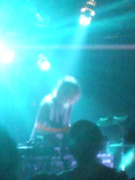
Kim Hiorthoy���o����[��ŁA�s���Ă��܂����B�uSmallsound Supersound�v���ăm���E�F�[�̃��[�x���̃c�A�[�Bafter hours��ÁB���K�l���q���߂Ȋ����B
8���߂��ɒ�������Yuichiro Fujimoto���ē��{�l�����t���Ă܂����B�t�B�[���h���R�[�f�B���O�݂����ȉ��̏�Ƀs�A�m�Ƃ��J�����o�Ƃ��h�����i�h�����͉����ʂ̏��̐l�j�̉����p���p���Ə�����Ă��悤�Ȋ����B���̈�ۂƂ��Ă̓}�w���Ƃ��ɋ߂����ǁA�}�w���Ŋ�����悤�ȃn�b�Ƃ���u�Ԃ͑S�R�����āB��[�Ɓc�ʖځB���̃X�L�}�������ł��������A��̃X�e�[�W�ł���܂�j���j������ȁB
����Joakim Haugland�A���́uSmalltown Supersound�v���Ă������[�x���̃I�[�i�[�݂����ł��B�����d�����@���M��Ȃ��狭��ȃm�C�Y�ƕςȃr�[�g�B�ŏ��ʔ����������ǁA�㔼�O�����B
���X�g���AKim Hiorthoy�iHiorthoy��2�ڂ�o�͎ߐ����郄�c�ˁj�A���o���͑@�ׂȊ����̂�����ƃ|�b�v�ȃG���N�g���j�J�������̂ŁA�R���n�̓��C���ǁ[�Ȃ�H�Ƃ��v���Ă���ł����ǁA1�Ȗڂ���m���m���B�Ƃɂ������̐l�͓���U��B���q�̓��ɍ��킹�ē���U��B�e���|���オ��X�ɑ�������U��B�f�J�C���ɂȂ�X�Ɍ���������U��B�����Ȑl�Ȃ̂ł����O�͑S�������ĂȂ���[�ȂƁB
������[�o�J�ł��悱�̐l�A
�o�J�B�ł��y���������Ȃ��A���B���̓��ł�3�l�̒��ň�ԕ�����Ղ��āA���y���������ł��B
#�d�����ĐV�h�i�W���Ƃ������݉�����ցB
���̈��݉�����͏�����Ă������c�̈��ۂ�����Ă邨�X�B
�i���Ă��������̂��́A����܂�ڂ����Ȃ��̂ŁE�E�E���\�Y����̌��c���[�����炢�́j
�܂��A�킩��̓T�b�p���Ɣ���āu�قƂ�҂�����v�ł��B
���ۂ���͉������o�Ă��f��ɂ��o�Ă��݂����i����j�Y�����ꂾ�����������H�j
�u�قƂ�҂�����v�͂��̉����̂���ƁA�߂���Co.���ĉf�批�y�̒��g�z����Ƃ̃��j�b�g�B����2�l���ŏ��Ґ��Ń��C���n�E�X�ł͍֓��l�R���Whacho��牡�V�����Y���Y�R�G�F����R�Ń��C�������܂��B
�ŋ߂̉����̂���͏���S��+�S�{�����ƃ\���A���o�����o���Ă��āA�قƂ�ł͋v�X�B
�m��3�N�O���炢��13�N�Ԃ肭�炢�ɉ��y�������ĊJ�������ɁA2�l�����Ń��C������Ă���Ƃ����āB����Ȏ���������Ǝv���o���܂����B
�A�R�[�f�B�I���Ɛ������̍\���ł���������Ɛ��藧���Ă�̂��s�v�c�A���������ӂ̋�C�̐F���ς��悤�Ȃ���Ȋ����́B
(mixi�]�ڂ������߂�Ȃ���)
1st set
�i���ۂ���ɂ�����̋ȁj
2nd set
- �d�z
- �c��
- �E�����C�̏o�
- 2022�N ���[�܂�
- ���F
3rd set
- ��i�t�̃����c
- �����ȋi���X
- �u�������ʁv�̌����́`�߂����V�g
- �_���X�̊y���i�A���R�[���j
- ���ۗR�v (guitars,vocals)
- ������ (vocals)
- ���g�z (accordion,chorus)
#�v�X�ɑ��w���֍s���܂����B
���G�ꂳ��͑����̃s�A�m�����ł͈�ԍD���������肵�܂��B���͌�GROUND-ZERO�������������킯�ŁB
������o����͂܂�����KILLING TIME��������I�p�r�j�A�������肱�Ȃ�����Richard Sinclair�ł��������B
�s�A�m2��̑�����z�����Ă��̂ł����A���̃��C���n�E�X�ł͂���������������ȂƁB�i�s���r���̓d�Ԃ̒��ŋC�t�����j
���ۂɂ͑z���ȏ�̃��������̑����A�������Č������V��ł邾���ƌ����Ă��ߌ��ł͂Ȃ������B
���A�ł����piano+����bass clarinet+�ꂢ��voice�ő���ZNR�݂����ɂȂ�u�ԂƂ��L���Ėʔ��������B
�㔼�ł͂͊y�펝���ւ��ăE�N������e�����G��B�Ō�ɂ͈��̃s�A�m��3�l���ɍ����Ẳ��t�E�E�E�킹�Ă��������܂����B
���Ȃ݂ɋq8�l�B�����Ȃ��B
#����Ȃ킯�Ō��L�����o����Dave Sinclair + Richard Sinclair�̗��������ł��B�O����Dave��Richard�����ł̉��t�B�Ȗڂ͌��\�m��Ȃ��̂��L������ł����ǁA�uDisassocation�v�uThe Dubsong Conshirtoe�v�uThe Love in Your Eyes�v�uHello Hello�v�uif I could not do it all over again�v�uGoing for A Song�v�Ƃ��E�E�E1���Ō��Matching Mole�́uO Caroline�v������ĂĊ�����������B���ƁADave Sinclair�̍ŋߏo��CD�̋ȂƂ�������Ă��݂����i�킩��Ȃ��������ǁj
1���ł̓��`���[�h�̐����������y���ނ��Ƃ��o���܂����A�J���^�x�����y�D���Ƃ��Ă͂���2�l�̉��t���ăJ���^�x���̃R�A�ȕ�����Z�k������[�Ȋ����ŁB
���2���̓I�p�r�j�A��3�l�ƈꏏ�̉��t�B�\���ʂ�uNine Feet Underground�v�����t���Ă܂����A������o��Dave Sinclair�̃c�C���L�[�{�[�h�͎d�����������Ă��[�Ȋ����ŁB��ł����X�����F���o���B�F�_���m���S�{��������{�I�ɂ͌��Ȃɒ����ɁA�v���v���Łu�炵���v�������Ă܂����BRichard���܂����̑O���Ƃ����͂����Ɖ��t���Ă܂����BDave�̃I���K���̃t���[�Y�͂���ς艽���u�J���^�x���v���ĉ������������܂��B
�A�����ڂ������C�����|�͂�����
POSEIDON����������Ă�����B���ꂩ
TAKE's PAGE�Łi�����������v�����ǁA�Ȃ�ł���ȂɋȖڔc���ł���낤�H�j
- Richard Sinclair (vocals,bass)
- Dave Sinclair (keyboards)
- ������o (keyboards)
- �S�{���� (guitars)
- �F�_���m (drums)
#�s���Ă��܂����B
�u�`�F��+���v�Ƃ�[�V���v���ȕҐ��ł̃��C���ł������ǖ��x�͔Z��������[�Ɏv���܂��B
�̓r���łقƂ�҂�����́u���������v�Ƃ����Ȃʼn������s�A�m�e���Ȃ���̂��Ă܂����B�W�X�Ƃ������q�̃s�A�m�ɐL�т���k�肷��A�����Ȃ��e���|�̃{�[�J���̑Δ䂪�����ʔ����āB�܂��m��Ȃ���ʂ������������B Robert Wyatt/Elvis Costelo�́uShipbuilding�v��Leonard Cohen�́uHallelujah�v���R�R�ł͂ƂĂ��s�v�c�ȐF�ɐ��܂��Ă��āB
�u���X�݂����v���Đ����o���Ȃ����ǁA�ƂĂ����������y�B���Ĉꏏ�Ɍ����F�B�������Ă��B��B
����11/6�ɐV�h�́u�i�W���v���Ĉ��݉��łقƂ�҂�����̒������2�l�ł��݂����ł��B�imixi���L�Ɠ����e�E�E�E���݂�Ȃ����j
�NjL�F�Z�b�g���X�g�����Ă�������̂Œ������܂����B
- ���̂���
- �u�~�̖��v
- �J�����I���E�p�[�e�B
- �N��?�������̂��炵
- Shipbuilding (Robert Wyatt/Elvis Costelo)
- �s���B
- ���������
- �u�^���̂ЂȂ��v
- Walking on the Moon (Police)
- �n������ (Leonard Cohen)
- �u���₷�݂Ȃ����v
- �����G (vocals,toy piano,piano)
- ��{�O�� (cello,effectors)
XNOX (�N�X�m�L�X)
#��������̃h�����A��ς���̈�l�v���W�F�N�g�B
�M�^�[��e������A�E�N�����e������A���Y���}�V������������A�_���{�[���@������F�X����Ă܂����B�t�ق���P��������l���Ń|�b�v�~���[�W�b�N�𐬗������Ă܂����B���߂Ȃ��ȃR�����B
- ��� (vocals,gutiars,ukulele,percussions)
���Ȃ�
#���m�}�l�|�l�E�E�E�Ȃ̂��ȁH�u�t�B�t�X�G�������g�̃G�C���A���̉̂̃��m�}�l�v���Ă͉̂��������B
Tica
#���[�ƃx�[�X�̐l���V�A�^�[�u���b�N�̐l�A���̐l�̃x�[�X���Ȃ�C�ɓ���܂����B�i�V�A�^�[�u���b�N�قƂ�ǒ��������Ɩ������ǁj�C�C�����˂��B�G�}�[�\���k�������nord electro�g���Ă܂����A���Ɋi�D�����B������l�̃L�[�{�[�h�͌��ʉ����ۂ������s���s���ƁA�ςȂ́B
- ���c�J�I�� (vocals)
- �Έ�}�T���L (guitars)
- ������ (bass)
- ��� (drums)
- �G�}�[�\���k�� (keyboards)
- Manuel Bienvenu (keyboards)
���ځ[��
#�R���g:��i = 9:1
�������
#�ꂢ���������Ă��珉�߂Č��܂��i�Ƃ������ꂢ������̃h�������́Afishermen tit tot�ȗ�������4�N�Ԃ肭�炢�Ȃ̂����j�v�X�ɒ�������X�l�A�̉����������Ă�����ƃr�b�N�����܂����B���ɂ���h�����B
�t�@���T�C�g���Ă�ƍŋ߂̒�ԃZ�b�g���ۂ��ł����ǁA�������R�[���X��Egberto Gismonti�́uA Fala Da Paixao�v�͏��߂Ē����܂����B��������u3���̐��v���ė���̓C�C�Ȃ��`�B
�܂����́A���E��D���ȃ~���[�W�V�������M�^�[�e���Ă�o���h�Ȃ�ŁA�q�ϓI�ȃ��|�Ȃ�ď����Ȃ���ł����ǁB
- HASU KRIYA
- �͂��߂�
- A Fala Da Paixao (E.Gismonti)
- �O���̐� (J.Gilberto)
- �ٓV�V�X�e��
- �Ԃ̓�
- ���͕�
- ����Ƃ���
- ������� (vocals,bass)
- �q�� (guitars)
- �ꂢ�� (drums,chorus)
- �����L�� (piano,keyboards)
- ���r�i (bass,acoustic guitars)
�T�C�P�f���b�N�����w���Ă̂́A1985�`1992�N���炢�ɂ���Ă������|�b�v�~���[�W�b�N�݂����ȃ��m�̃C�x���g�B�o����GONTITI,KILLING TIME,������,Nav Katze,�E�j�^�~�j�},���}�X�~,�R���|�X�e��,������N�ȂǂȂǁE�E�E
�܂�̓E�`�̃T�C�g�̃X�g���C�N�ǐ^�B�R������Ă鍠���[���傢�N����Ă����ΑS���s���Ă��Ǝv���悤�ȃC�x���g�ł����B�����ǁ[�����̂�2004�N�ɂȂ��ċ}篕��������悤�ł��B�����10/7 �a�J�N���u�N�A�g���A�o���͂�����,KILLING TIME,��̐�+�ԏ钉���B
����[������
KILLING TIME�ł����B
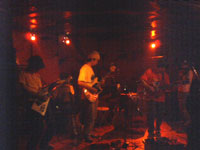
#�^�����̂͂�����Ɂu�D�������ȃo���h���L����v���ėU���A�����~���փm�R�m�R�s���Ă��܂����B�܂����̐F�X�o�Ă����ǁA��������ȗ����āB
���{�E���{���o�[
�u�S���O���ۂ��`�v�Ƃ������b���Ă��̂ł����ǁA���Ɂu�`���ۂ��v���Č��������ł͂Ȃ��āB��ł��m���ɉ����v���O���������鉹�ł����B�x�[�X�ƃo�C�I�������ϔ��q�t���[�Y�e���āA�M�^�[�����X�ɐ���グ�Ă���[�Ȃ̂��D�����Ȃ��B�P�Ȃ�肩���Ă�߂��̂��L���āA�D�������Ȋ����̃C���g���������̂Ŏc�O�B
�v���O�����Ă��A�ÏL����[�ȃC���[�W����Ȃ����āA�|�X�g���b�N�Ƃ��A�W�����o���h���ۂ����Ƃ����L���āA�ƂĂ��ʔ����B�i��ł����[��[�o���h���Ă���܂�v���O���E�G���Ƙb��ɏオ��Ȃ���ȁj
web�T�C�g��
�R�R���ȁH�ł��X�V����ĂȂ��E�E�E
- Mappi (bass,guitars)
- ? (guitars)
- ? (violin)
- ? (drums,guitars)
- ����W�� (guitars)
�X�g���{���[
#�ȂŖ��O�������Ƃ��L������[�ȋC��������ǁA�C�̂�����������Ȃ��B
�c�C���h�����ƃL�[�{�[�h(nord������)�ƃM�^�[�̃o���h�A�Ґ��͖ʔ����������ǂ�����ƒP���Ɋ����镔�����B��������ƓW�J�~�����ȁB�L�[�{�[�h�̉��F�Ƃ��͍D���B
NATSUMEN
#���[�ƃ����o�[�ύX�㌩��̂�2��ځB�O��2�l�����x�[�X��1�l���Ȃ��Ȃ��āAtrumpet��sax�̐l�����܂��B�Ȗڂ�
�I�t�B�V�����T�C�g�ɂ́uSonata of summer, Whole lotta summer, Summer of the tiger, Newsummerboy, Anti chemical beach party, Pills to kill ma august, Akiramujina�v���ď����Ă��������ǁA�F���ł����̂́uWhole lotta summer�v�ƁuPills to kill ma August�v�ƃ��X�Ȃ́uAkiramujina�v�����A���Ă����������o�Ă��Ȃ����Ȗ��Ƃ�����Ȃ��i�����������Ă��j����Ȗ��F���s�\�B���������o���ā[�B
����ς�bass�͈�l�ŃC�C���Ȃ��[�Ȃ�Ďv�����肵�A�O��������Ȃ�o�����X�ǂ������܂����B����J�b�R�C�C�J�b�R�C�C�BBitches Brew�̍���Miles Davis�݂����ȏ��������A��{�͂���ς����b�N�������肷���ł��Bpiano��trumpet��sax�ŃW���Y���ۂ�����グ�Ă����������AAxSxE����̃M�^�[�őS�ĂԂ���[�ȓW�J�͂����Ă��J�^���V�X���o���܂��B
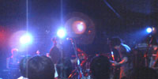
- AxSxE (guitars)
- AINE (guitars)
- �}�V�^ (drums)
- �ӒJ�P�� (piano,synthesizer)
- �R�{���j (bass)
- Kato Yuichiro (sax)
- �`�i (tumpet)
DEMI SEMI QUAVER
#����܂���E�E�������炢�����Ƃ���ŋA�����Ⴂ�܂����BDEMI SEMI QUAVER�ł��B���[�ƃX�e�B�[�u�q���̃p�[�J�b�V����(wave drum�Ƃ��g���Ă��̂��ȁH)�Ƃ��͖ʔ����������ȁH
�Ȃ�[���x�e�����炵����������K�c�K�c����Ă���܂����B���[�ƁA�ł����́A������Ƌ�肩���B���߂�Ȃ����B
- �G�~�E�G���I�m�[�� (vocals,accordion,keyboards)
- ���R�p�K (bass)
- �X�e�B�[�u�q�� (percussions)
- ���K��Y (drums)
- ���t�O (guitars)
- ����S�� (violin)
#���݂͎q��ĂɖZ�����͂��̃C�m�g������̃��C���ɍs���Ă��܂����B
���̓��̃����o�[�̓M�^�[�ƃx�[�X(benzo�̐l�j�ƃh����(����)�ƃ`�F��(���l�炵�������̈ʒu����猩���Ȃ�����)�ł����B���̕Ґ��̒��ł̓`�F���̉����ƂĂ����ʓI�ɒ������܂����B
���ς�炸�C�C�̂��C�C���ŃC�C�\��ĉ̂��Ă���܂��B�ȂK�����[�Ȋ����ɂȂ�郉�C���B���̃��C���n�E�X�i�Ƃ��������b�N�i���̒n���݂����ȁj���t�g�̌��Ԃ���X�e�[�W��`���悤�ȁA�����ȍ��ɂȂ��ĂāA�u���v���R�R�v�Ƃ��v������ł����ǁA�C�Â�����C�ɂȂ�Ȃ��Ȃ��Ă܂����B
���A7���ɐV�����o��炵���āA���̐V�Ȃ��R����Ă��܂����B�ق�Ƃɑf���ɃC�C�Ȃ��`�Ǝv���鉹�y�B�V�����������ƁB
- �C�m�g�� (guitars,vocals)
- ���R�S�i (guitars,mandolin)
- �ɉ�q (wood bass)
- ??? (cello)
- ??? (drums)

#�ʐ^�A���N�Ȃ̂��������ăS�����i�T�C�B
GURU GURU�̉��l�h���}�[�A�}�j�����3�x�ڂ̗����ł��B1��ڂ�2��ڂ��s���Ȃ�������ŁA��������������Ǝv���s���Ă��܂����B���̓��̓I�[���̃C�x���g�ŁA����1:30�ʂɍs�����珬�����n�R�̒��͊���DJ�^�C���iULU�������̂��ȁj�s�L�s�L�s�L�[���̃g�����X�e�N�m�ő�ϊy�����x���Ă܂����B
2:00���炢�Ƀ}�j����o��ŁA�ŏ��̓}�j�����l�ł̉��t�B�^�����p�̂��̃h���c�J�����r�[�g�������邾���Ŋ����ł��B���͉����O�̕��Ńw���Ȏ�����Ă�ȁ[�Ƃ��v������A�܂�����M�i�J���[�|�b�g�Ƃ����L�������j�����ɕ��ׂĒ@���܂���B�I�����_��Han Bennink�����Ƃ����v���o���܂����B
���̌��L?K?O��TATEYAMA(AOA)�Ƃ̃Z�b�V�����B�X�N���b�`�ƃV���Z�̉��Ɛ��h�����A���Ȃ荬�ׂƂ��Ċi�D�ǂ������ł��B�����V���t�H�����ۂ����̂��閯���y��Ƃ��i�D�悩�����Ȃ��B
������64�߂��ē��{�̃N���u�ł�����q��グ����h�������Ĉ�́E�E�E�������������͒�����h�����̃��[�N�V���b�v����Ă�n�Y�E�E�E�������̍��̐l�����ɂ͓��{�l�Ƃ͈Ⴄ�G���W�������ڂ���Ă����[�ł��B���͗����d����������ŁA���C���I�������A��܂����i����ł�4���߂����������ǁj
#������u��*���낤�v�̃C�x���g�Ō��āA������ƋC�ɓ����Ă�FLAT122���ăo���h�ł��B���̓��͍��~���Ŏ����̃C�x���g���L�����̂ŁA���̑O�ɁB
1�Ȗڂ͎�A�o���M�����h��������[�ȁA�M�^�[�̃s���s���[���ċȁB����ł��s�A�m�������Ă���Ɛ��������o�Ă����[�Ȃ̂́A����ς��C���Ȃ̂��ȁH
�u�g���v�uNEO (Neo Classical Dance)�v�͑O��̃��C���ł�����Ă��Ǝv����ł����ǁA�Ȃŋ߂̂�����n�̃o���h�ł͒������u�k���ɍ\�����ꂽ�v�����̋Ȃł��B�u������v���O���D���v�Ȑl�Ɓu�w���ȉ��y�D���v�Ȑl�����ɃA�s�[���������Ȃ��ǂȁB
���Ȃ݂ɃR�������Ă�̂����C�����Ă��炵�炭�o���ĂāA
�I�t�B�V�����T�C�g������A�����h�����̕��̖��O�������Ă�E�E�E�Ђ���Ƃ��āA�E�ނł����H
���A���̃��C����7/26��guitar+piano�̃f���I�ɂȂ�͗l�B
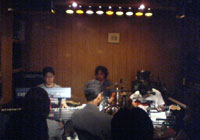
- �悻�҃t�@���t�@�[��
- �g��
- NEO
- Matsukura Snow
- Spiral
- Winter Song
- ��藲�j (piano,synthesizer,sampler)
- ���c�� (guitars,guitar synth)
- �Γc�a�� (drums,percussions)
underdrive
#���̃o���h���Ƃ��A���[�ƃx�[�X�̉��̔������������Ȃ��B��������ȂɈ�ۂɎc���ĂȂ��ł��B����܂���B
the chef cooks me
#��p�ȃh�����i��ԍŏ��A�ł����݉����Ǝv�����j��micro korg�̃t���t���������B�{�[�J����Fishmans�̐l�݂����Ȑ��ł�����ƌ����������ǁB�Ȃ͊��ƍD�������B�Ō�̂Ƃ��i�D�ǂ������B
BALLOONS
#���[�Ɣ��ɂ܂Ƃ܂��Ăď�肾�������ǁA�{�[�J���ア���ȁB�ʂɂ���Ȃɕ��G�ȋȍ\���ɂ���K�v�ɖ����̂ɂ�����Ǝv�����B���t�̐����E���ĂȂ��H
NATSUMEN
#���[�ƑO�����Ƒ啪�����c���ς���Ă܂��B���Ă�����Panic Smile�̐�������������݂����ŁA������Ǝc�O�B3�Ȃ��炢��40���A�Ō��Akiramujina������Ă܂����A�M�^�[�u�`�Ă܂����B����ς肿����ƕʊi�ȕ��͋C�͗L�������ȁB
�܂����̃A�����Ȃ��A�����O��̃����c�ɖ������L����������ĂāB�O�̕Ґ��̂Ƃ��ɗL�����Â��ȃp�[�g�ł̃A�R�[�X�e�B�b�N�Ȋ����Ƃ������Ȃ����������ŁB�܂��R���̓R���ŁA�V�����G���s�̐l�Ƃ�������ƃW���Y���ۂ����Ėʔ����������C�C���ȁB�A�o���M�����h�ȃ��b�N�Ƃ��Č������ɁA�������ł��̈ʂ����������o���h�����ɗL��̂��ȁH���Ă�[�����������o���Ă��������B
- A.S.E (guitars)
- �A�C�� (guitars)
- �}�V�^ (drums)
- ? (bass)
- ? (bass)
- ? (electric piano)
#���[�ƑS�̂̊��z���ɁB�C���v���������������ɂ��ւ�炸�i����܂�C���v���D���Ȑl�ł͖����̂ł��j�����[�ʔ���������ł����B����ق�Ƃɖʔ��������A���߂̃C�x���g���������Ǖ��喳���ł��BSUPER DELUXE�����߂čs�������NjC�����悩���������B
����c��
#���[�ƑO��̃A�u�_�r�ł͎���ꂻ���ɂȂ����o�����L���ł����ǁA����͒����Ղ������ł��B����ǂ��납�|�b�v�Ȋ����̉��������ĂāA�ʔ��������B����VJ���T�C�R�[�B
Altered States
#��������v�X�E�E�E�ɒ����܂����B�ŋ߂Ȃ������������t���t�c�[�ɋȂ̂悤�ɒ������Ă��܂��͉̂��̊��o���ςȂ̂��A����Ƃ��i�������C���v���͋ȂɌ���Ȃ��߂Â��Ă����̂��ǂ��炾�낤�H
- �����a�v (guitars)
- �i�X�m�~�c�� (bass)
- �F�_���m (drums)
OORUTAICHI
#�\�ɂ͒����Ă܂����B
�����J���I�P���Ă̂����߂Ē������Ƃ��ł��܂����B�o�b�N�g���b�N�Ɛ��Ƃ̈�a���̖��������������B
��K���a��+����c��
#���I�Ȏ��������ƍ����ԋC�ɓ���ł��B��K���a������́A���˂悵�����q�݂�����������A�����Ȃ̃|�R�y���݂�����������ATamia�iR&B����Ȃ��ă{�C�X�p�t�H�[�}�[�̕��́j�݂����ɕs�v�c�ȑ��݊��̐��B����c����̓R�R�ł͐ق������̃M�^�[�Ƃ��R���^�N�g�}�C�N�Ƃ����T���v���[�ɓ˂�����ŁA�F�X�ȉ�����n���Ă��܂����B
���X�c�q+���\��NANI
#���\��NANI���ď��߂Č����̂ł����ǁE�E�E�������E�E�E���̉��������Đ�������Ηǂ��̂��낤�H���߂đ��̐l�ƈꏏ�Ɏ��������v���o���܂����B�����ď��X�c�q����Ƃ̒j�C����T�b�N�X���i�D�ǂ������i���܂ŏa���ł����������Ɩ����������ǁj�B
- ���\��NANI (drums,voice)
- ���X�c�q (sax)
�g�c�B��+OORUTAICHI+�ē�"�В�"�Lj�
#�Z�b�V�����B��������̎q���i����ˁH�j���g�c�B���ʔ����[�ɒ��߂Ă��̂���ۓI�B���Ă��������̎q�ǂ�Ȏq�Ɉ�낤�H�������y���݂ł��B
- �g�c�B�� (drums)
- OORUTAICHI (keyboards,voice)
- �ē�"�В�"�Lj� (guitars)
�����a�v�Z�b�V����
#��������d��ł̃C���v�����B�g�c�B��-OORUTAICHI-��K���a��-���\��NANI�Ƃ��������c�ŃX�^�[�g�����āA�Ō�͓�K���a������́u�����v�Œ��߂�����ɂȂ�܂����B���[���傢��K���a������̃{�[�J�����̒����Ă݂����������ǁA�ǂ����߂����肾�Ȃ��Ǝv���܂����B
��*���낤
#�����Ȃ�A�g�c�B��+���������̃c�C���h�����R�[�i�[����������̂Ńr�r��B���̌�A3�l�y�펝���ւ��ŁA��������(piano)/���V����q(guitar)/�䓛�D��(drums)�ł̉��t�A����q����̃��C�g�n���h�t�@���������ǁA�䓛����̂��ǂ��ǂ����h���������������B����܂��B
���̃��|�����Ă�̂����C�����Ă������2�T�Ԍ�i���₻�̐F�X�Z�����āE�E�E�j�Ȃ�Ŋ��S�ɋȏ���Y��Ă���̂ł����A�u�}�W�b�N�J�[�y�b�g���C�h�{�k�}�U�p�v�Łu�}�W�b�N�J�[�y�b�g���C�h�b�p�v�Ƃ������Ă���Ă��̂��ʔ��������ł��B�S�̓I�ɂ��̓��̓����b�N�X���ăe���V�������߂Ȋ����ł����i���[���́A���R���̎��ْ͋����Ă��̂������j�Ō�̋ȁi�������Y�ꂽ���ǁj�ł͒��������V���G���s����Ȃ����ʼn��t���Ă���[�Ɏv���܂��A������ƐV�N�ɒ������ėǂ������B
�����������A���ƃ^�u���J�X�E�T�����M�̐l�i�܂����O�Y�ꂽ�j���}���ėd�������͋C�̋Ȃ�����Ă܂����B
�����Q���[�̃��R�[�h���v���N�����悤�ȗd�����ł�����B�Ȃ���X�v�[���B
- ���V����q (piano,voice)
- �������� (drums)
- �䓛�D�� (guitars)
�s�����N
#����̃M�^�[�f���I�B����ւ����Ԃɏ���Tangerine Dream�݂����Ȃ̗���Ă�Ȃ��Ǝv���Ă���A����ς菉��Tangerine Dream�݂����Ȋ����B����ȃt�B�[�h�o�b�N�ƃT�C�P�M�^�[�Ɠd�q�m�C�Y�B�l�I�ɂ͂�����Ƃ���ǂ��������Ȃ��E�E�E
�啶��
#
�O�����Ƃ�(2002.1.5)�͂܂��u�C���v���O���v�������i1��ڂ������ȁH�j�̂ł��Ȃ�v�X�Ɍ��邱�ƂɂȂ�܂��B����̓X�N���[���ɗ����ςȉf�����z�b�s�[���茳�ŃR���g���[�����Ă��݂����i
KAOSS PAD entrancer�ł��g���Ă��̂��낤���H�j���t�ɓ�������f�����ʔ��������ł��B
�u�C���v���Ńv���O���v���Ă������u�v���O���̃p�[�c�ŃC���v���v�݂����Ȋ��������܂��B������v���O���݂����Ȍv�Z��������オ��Ƃ��ł͖����̂ŁB��ł��i�X�m����̃x�[�X�œ˂�����悤�ȓW�J�͂���ς�i�D�C�C�B
3�l��2�Z�b�g���t������A��*���낤��3�l�������Ẳ��t�B���[�ƃA���ł���A�_�u���g���I�ł���King Crimson�Ɠ����Ґ��ł���A���Ă��S�R����ȉ��ł͖����̂ł����B
����6�l�Ґ��ł́A�ŏ��ɑ啶���哱�Ȋ����A2�Z�b�g�ڂ���*���낤�哱�Ȋ����B���Ă������g�c�B��+�����������ăc�C���h���������������ł��B�i���̂����ɗ��Ă����A�����O����������[�����Ɍ��Ă܂����B�ǂ����������炿����ƒ@���Ă����Ηǂ������̂ɂƎv�����j
- �z�b�s�[�_�R (synthesizer,voice)
- �g�c�B�� (drums,voice)
- �i�X�m�~�c�� (bass)
���Ԃ炾��
#���߂Č��܂����B�v���O���Ƃ͋t�x�N�g���́A���ʂ̗L�鏊����͏o�Ă��Ȃ������ȕςȉ��B�Ȃ�����J�삳��̕ςȃ{�C�X�ɖ�����荇�킹�ċȂ�����Ă��[�Ȉ�ہB����Ă���Ă����������ł͊����Ȃ������ȃ^�C�~���O�̕ςȃ��Y���B
�Ō�ɍŋߔ������ꂽ�u�����v���ċȂ�����Ă܂����A���[���Ɠ������t�����R�[�h�A���X�ɃX�s�[�h���グ�Ă���20���߂��B�㔼�̐���オ��ُ͈���Ă������A���ď����ăC�C���킩��Ȃ��悤�Ȋ��o�ɂȂ�܂��B�����B�i�Ȃǂ������ł�������C���ł�30�ȏケ�̋Ȃ���Ă��Ƃ��j
- ���J��T�� (vocals)
- �����T (bass)
- �ɓ����� (drums)
- �嚠���l (guitars)
ECD
#����������߂Č��܂����BDJ�̐l�i���݂܂��O���O�j��������肭���āA���̃��X�|���X�̑����͐����Ȃ��Ǝv���܂����B�I����Ɉꏏ�ɍs�����̔�������Ƃ��b���Ă���ł����ǁADJ�l�^�ɁuNew Trolls/Concerto Grosso�v���g���Ă��đ���i�C�^���A�̃v���O���ł��j
#�u�����ł̓��C�����Ȃ��vAcid Mother Temple�ł����ǁA�����David Allen + Gilli Smyth�Ȃǂ�������Acid Mother Gong�̗������[���ŁB����h�A�[�Y�ɂāB
David Allen��Didier Malherbe�̗������x��Ċ��̃��C���ł͊Ԃɍ���Ȃ��������[�ŐS�z���Ă���ł����ǁA
David Allen�������Ɨ��Ă܂����B���ăA���HMalherbe�́H
�ꕔ��Gilli Smyth�̃X�y�[�X�E�B�X�p�[�����C���ɂ����A���r�G���g�`�`�`�`�B���͂�u�������������v�Ƃ��Ă͖��G��ԂȊ����ł��B
��David Allen�o��I���Ă������O�����Ƃ������X�ɗd�����l�ɂȂ��Ă�B���̓��́u����P�K�����̂ŃM�^�[�e���܂ւ�v���Ď��ŁA���������B�܂��ł�����Ȏ��W�Ȃ��A���̃J���X�}�����������邾���ŃC�C��ł��B
���̕��͍����T�C�P�AGONG��Master Builder�́u�C�[���I�[�U�C�[�U�I�[�U�C�[�}�I�[�U�v�Ƃ��s���Ă邾���Ńe���V�����オ�邯�ǁA�Ȃ�ł�����͂���܂蓮�����������Ȃ��A�ꕔ�̋q�̂��C�̃e���V�����ł������ǁB�ϋq�v���O���Z�x�������������������ȁH
��[���̃X�^�C���o�[�K�[�i��������ˁH�j�����{���R���g���[���[�̂悤�Ɏg���̂��������i�D�ǂ����������B�喞���B��[���i���������j�u������x�Ɨ����ւ��v�ƌ��������ċA���Ă����܂����A���܂ɂ͗��Ă�B
���[�����A�u�Ȃ����q���Q�����Ă�[�N����H�v�Ƃ��v���Ă���A�A����
Cotton Casino�������ˁH�������܂Œm��Ȃ������E�E�E�B
���A�ȂZ�[���[�������q�������B�R�X�v�����ᖳ�����ۂ��E�E�E
�i��Acid Mother Temple�j
- David Allen (voices,effector)
- Gilli Smyth (voices)
- ��[�� (guitars)
- ���m�V (synthesizer,thermin)
- Cotton Casino (synthesizer,voice)
- Josh Pollack (guitars,megaphonics)
- �ÎR�� (bass,voice)
- �g�c�B�� (drums)
#�s���Ă��܂����Z�{�q���Y�A���[�i�B�b��̉�]���ɂ͂���ς��~���ŁA���Ԃ��Y�����Ă܂����B
�ӊO�Ǝv���邩������Ȃ��̂ł����ǁA���\�{�j�[�s���N�͍D���������肵�Ă܂��B�˂������ĉ������C�C�Ƃ�����ł������̂ł����ǁA�D�������ۂ��|�b�v�X�Ƃ��āA���ʂɃn�C�g�[���ɂȂ�Ȃ��{�[�J���Ƃ����\�D�݂ŁB�i�܁A�^�_���������ׂ̉w���������j
�o�b�N��EL-MALO�̘�c�Έ�AGreat3�̍��K�\�A�����ASA-CHANG�A���Ɛ�����o���܁B������C������̂͏��߂ĂȂ̂ł����A���R�̂��Ă��������̗͔����������Ńi�J�i�J�ǂ������ł��B����ł��u����60�`80�_�̐l�v���ăC���[�W�͂���Ȃɕς��Ȃ�������ł����ǁA�Ō�ɉ��t���Ă��uEvil And Flowers�v�Ƃ��ǂ������ł��B
�����̋����ꏊ�����̐l���݂̒���������ł����ǁi�����������C������ꏊ�ł͂Ȃ����j������Ɖ��������������ȁ[�Ƃ��v���܂����B
�i��BONNIE PINK official website�j
- Bonnie Pink (vocals,guitars)
- ��c�Έ� (guitars)
- ���K�\ (bass)
- ������o (keyboards)
- ASA-CHANG (percussions)
#����Ȃ킯�Ń��R���B�O������Grapefruit Moon�͏��߂čs������ł����ǁi����ς�������j�ӊO�ƍL���B�ł��q�������ς��B
�ȉ��Z�b�g���X�g�͓����z��ꂽ���m�ł��B�ꕔ�ŏ�����u���ꂢ��v�u������� 1�v�Ɣ���Ă����܂��B�i�X�m����������Ă����ǁA���C���J�n2�ȖڂŃh�����\�����y��o���h�Ȃ�Ė�����Ȃ��B��������̃h�����Z�b�g�͂�����1.5�{�i���Д�j�����ȃp�[�J�b�V������@���@���@���B
�u�g���R��...�v�͑O�ɍ��~���y���M���n�E�X�Ō���
����q�̘H�n���i�C�g�ł����t���Ă����ȂŁi�A���o���ɂ������Ă邯�ǁj�|�`���J�C�e�}���R�̉��삳��ƃ��[�\�t/KILLING FLOOR�̕�������Ɖ��t�B���삳��Ƃ̉��t���Ƃ����Ԉ�ۂ��ς��܂��B
�u�P���W�v�͒����Ă�r���u�܂����E�E�E�������Ȃ��H�v�Ƃ��v���Ă���ł����ǁA�T�r��
��c����/TOKIO�A�䓛��������ƒp�����������Ɂi�����������m���m���Łj���̃t���[�Y��e���Ă܂����B1�����X�g�̋Ȃ̓A���o�����^�́u���v�v�ɂ��������͋C�́A�R�[�h���������ς���Ă��悤�ȁi�{���ɂ������������͂킩��Ȃ����ǁj�~�j�}���Ȃ��Ǖ��i��z�N����悤���Y��ȋȁB�������܂ł̑�c����Ƃ̕������M���b�v���B
�u���˂荘�v�ł͋g�c�B�炳�h�����ŁA��������̓p�[�J�b�V������@���Ă܂����B�����h�����Z�b�g�ł������Ă���Ȃɂ������Ⴄ�̂��낤�H�A���R�[���̓G���K���g�p���N����̋ȁu�p�C�I�c�p���N�v���~���S�i�̎R�{���q����ƃA���^�[�h�̃i�X�̂�����}���āA���̃A�z�ȋȂ��B�R�{���q���I�y���e�B�b�N�Ȑ��Łu�p�C�I�c�`�`�`�`�`�v�Ƃ����āE�E�E�������B���V���r�f�I���Ă��āA�R�{����̋����A�I���ŎB�e���Ă���[�ȋC�������̂ł����C�̂����ł��傤���H�������A���R�[�����L���āu���v�v�ł����Ƃ�ƒ��߂Ă��܂����A�����ƃL�[�v�����u�h�v�̉��̃s�A�m���ْ������c���āA���̋Ȃ����\�D���ł��B
��*���낤���ăA�����������ȉ�������ĂăC���v�����������\�����悤�Ɏv����ł����ǁA�A���T���u����������[�ȕ����ɂ͌�����Ȃ��̂��ŋ߂̑��̃o���h�Ƃ͂�����ƈႤ��[�Ɏv���܂����B���̓��͂��[��2���Ԕ��߂��̉��t�ŕ�����������t�A���y���l�ł����B
���[�Ƃ��̃��C���I����ɃG���K���g�p���N��1993�N���̉f�����X�N���[���ɉf���o����܂����B�{�f�B�R���ߑ��Ƀ��������\�o�[�W���E�E�E1993�N���Ă���Ȏ��ゾ���������Ȃ��H�������������r�f�I�����Ă��܂����悤�ȋC���B�������I
�i����*���낤�j
�i��TUTINOKO Label Official Web Site�j
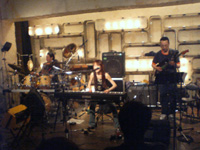
- �\���C��
- ������� 1
- ���f�̃n���C���s
- �g���R��...
- �w�r�_���X
- ��
- �P���W
- ���тꂽ�X
- ���[��[���[��
- �k�}�U�p
- �}�W�b�N�J�[�y�b�g���C�h
- �Ƃ�
- �h�C�c�̈��
- ������� 2
- �n�g
- ���˂荘
- �p�C�I�c�p���N
- ���v
- ���V����q (piano,voice)
- �䓛�D�� (guitars,voice)
- �������� (drums,voice)
- �g�c�B�� (drums on '���˂荘')
- ����a�v (piano on '���˂荘','�g���R��...')
- �������v (sax on '���˂荘','�g���R��...')
- �R�{���q (voice on '�p�C�I�c�p���N')
- �i�X�m�~�c�� (bass on '�p�C�I�c�p���N')
Humbert Humbert
#���[�Ə��߂Č��܂����B�S�R�m��Ȃ��o���h��������ł����ǁA������ƃg���b�h�Ń����o�[���c�{�����������悤�ȉ��t�łƂĂ��ǂ��|�b�v�X�ł����B���̃o�����X�Ƃ�����Ƃ��Ƃ��Ă��C�����悭���āBCD�����Ă݂悤���Ǝv�������ǁA���̓��̍��z�̒��ɂ͂قƂ�NjA��̓d�Ԓ����������Ă��Ȃ����Ƃ��ӂ݂Ă�߂܂����B��ł��z���g�ɗǂ��o���h�B
�i
��HUMBERT HUMBERT OFFICIAL WEB SITE�j
- �����ǐ� (vocals,guitars)
- ����V�� (vocals)
- ���֏��� (drums)
- �g��^�� (bass)
- ��ΗF�� (tin whistle,guitars,sax)
- �ďH���F (melodion)
���Ȃ����+������o
#���ړ��ẴR���A�ȑO�ɐ�����o����(+���{��,�A�����O,���엝�F,���Njv���q,�����M�Y)�Ń��C����������Ƃ��Ɍ���Ȃ������̂�������Ă��̂ŁB����͐�������Ƃ̃f���I�ƌ������ƂŁi���O�܂ł��̃��C���̎��m��Ȃ������̂ł����j
�W���Y���ۂ��e���܂��鐴������̃s�A�m�̏�ɁA���Ȃ���䂳��͂����܂Ń|�b�v�ɒ���悤�ɉ̂��悤�ɐ���������Ă����܂��B�����ŋ߂̏�������ɂ��ʂ����[�ȋC�����܂����B
�ȂA�ςĂ���u���R�v���Č��t�����̒��삯����Ă܂����B�X�e�[�W�삯���Ȃ�����A�F�X�ȃ^�C�~���O�Ō��t����������Ă���̂����ɖʔ��������ł��B30�����傢���Ƃ�����ƕ�����Ȃ������ł��B
���ƁA���[���傢�q���Ă�������Ȃ����ȁ[�Ǝv���܂����B
�i
��Riyu's Personal Page�j
#�u��*���낤�v����3�o���h�S�āAkeyboard+gutiar+drum�g���I���Ă������C���B��*���낤���ɂ�������ł����ǁA���̃o���h���\���߂���ʖʔ��������ł��B
�Ȃ���A�m��Ȃ������Ń��C�u�n�E�X�s���Ζʔ����o���h��R�L��ȁ[�ƍĔF���B
FLAT 1-22
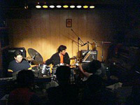
#���̃o���h����ԁi��ʂɌ����j�v���O���̃C���[�W�ɋ߂��������������ȁ[�B���Ԃ�s�A�m�̐l�����[��[�����Ȃ����Ǝv����ł����ǁA���������������̓W�J���߂̊����ŁB�M�^�[�̐l��ECM���ۂ��ȁ[�Ǝv���}�Ƀ��o�[�g�t���b�v�݂����ɂȂ�����A�N�������Ă�̂��͕���Ȃ������ł����ǂ�����u�����v�t���[�Y���J�b�`���ǂ������ł��B�h�����̐l�̓t���[�t�H�[���Ȋ����ŁA�قƂ�ǃG�C�g�r�[�g�Ƃ��@���Ȃ��������ǁA�������t�c�[�ɒ@���Ă��C�C��ʂ��L���������B
������Ȃ̒��ɐF�X�l�ߍ��݂����Ȃ�[�ȋC��������ł����ǁA�l�I�ɂ͌��\�c�{�ł����B�܂����C���������ȁB
- ��藲�j (piano)
- ���я��F (drums)
- ���c�� (guitars)
�������ꂩ
#���̃o���h�AEGG������R�����̉��ɂ�����[�ȍŏ��̋Ȃ��āA����ɃC���X�g�̃o���h���Ǝv������ł���A���̋Ȃł����ނ�ɃM�^�[�̐l���̂��������̂ł�����Ə����~�܂�܂���ł����B
�C���X�g�ŃA����������āA�X�ɉ̂������Ă̂��j�C�����������܂��B�i�{�[�J���Ƃ��Ăǂ����͕ۗ�����Ƃ��āj�L�[�{�[�h�̉��F���D���ł����A���ՂŒe���x�[�X�t���[�Y�Ƃ��i�D�C�C�́B
�i��
���b�V���J�z�[���y�[�W�j
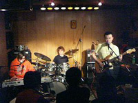
- INTRO
- �T�����C�E�}��
- �J���g�i
- �J�j
- #2+
- SNATCH
- �Y�r�Y�o
- �z����
- �Ö�L�F (guitars,vocals)
- �щp�V (keyboards)
- �x�R���l (drums)
��*���낤
#��Ńg���͖ܘ_�A���̃o���h�B���N��
7/30�ɏ��߂ă��C����������������n�}���Ă�����ł����ǁA���C��������̂͂����2��ځi���~���S�i�Ƃ����[�\�t�͌��Ă���ǁj
��r������A���Ȃ�ł����ǁA������������̃h�����������E�E�E�X�p�[���X�p�[���ƃL���̗ǂ��t���[�Y�����X�ƌJ��o���Ă��̂��������͌����J���Č��Ă�Ηǂ���Ȋ����B�M�^�[�̈䓛��������������Ńs�A�m�ƃ��j�]�������肵�Ă܂��B
���[�Ƃ��Ƌ��V����q���܂͌����܂ł������i�ŋ߈�ԍD���ȃ~���[�W�V���������m��Ȃ��ł��j���ς�炸�̋����Ȃ܂ł̃n�C�e���V�����B���Ƃ������Ȃ��ł����ǁA�������Ɩ����l�͐�Α����Ă��Ȃ����ƁB
���̓��́u���v���Ă����V�Ȃ�����Ă܂����i�`���V�ɐ������̊G�������Ă������j�e�[�v�̋t��]���ă\�����̂��Ă݂��i���[���[���[��[�������炵���j���Ă����w���ȋȂŁB��ϖʔ��������ł��B���Ɓu���f�̃n���C���s�v���āE�E�E�����u�H�㐶���҂����X�X�̂��������̃n���C���s����`�v�Ƃ��Ȃ�Ƃ������Ȃ炵���̂ł����A�n���C�����Ȃ��ǂ��킩��Ȃ���ȕ��͋C���������Ȋ����ŁB
���͂ɂ��Ă������������悭����Ȃ��̂ł����A�悭����Ȃ����ǖʔ������Ď������͌����܂��B
�g�c�B��v���f���[�X��
�c�`�m�R����CD��4/3�ɏo�܂��B�����ă��R���̃����}����4/6�ɎO������Grapefruit Moon�ɂāB
�i��
��*���낤�j
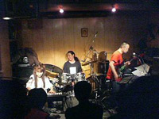
- ���ꂢ��
- �w�r�_���X
- ��
- 4/3 no
- �䒌 I
- ���f�̃n���C���s
- ���[���[���[��[
- �h�N�^�[�E�w��
- ���V����q (piano,vocals)
- �䓛�D�� (guitars,vocals)
- �������� (drums,vocals)
#�A��Ɏv�������ǁA���[��[60�N��/70�N��/80�N��/90�N����������킹����[�ȃw���ȃo���h�����A���^�C���Œ�����̂��Ă̂͂��Ȃ�K���Ȏ��Ȃ̂����Ƃ��B�i������Ɛ̂ɂ�80�N��Ƃ������A���^�C���ő̌����Ă����l�Ƃ���A�܂����v���Ă��肵���̂Łj
#���[�ƑO��CD���Ă���MASARA�̃��C���ł��B���̃T�C�g���Ă�l�ɂ�Vincent Atomics�̃o�C�I�����̐l��DCPRG�̃^�u���̐l������o���h���Đ������������킩��₷���̂��ȁB
�C���h���y�ƃ{�T�m�o�ƃW���Y�������፬���ɂ����悤�ȉ��E�E�E�����o�[�̖��O���Ăǂ�Ȑl������l�ɂ͑z���t���Ǝv���܂����ǁA���Ȃ�̂��[���������~�b�N�X����Ă��܂��B
�Ȃ̓M�^�[�̍�����̐F���Z���̂��ȂƎv���܂��BCD�����Đ����D���������uHORIZON�v���ċȂ��L���āA�V���[����������Ɖf�批�y�݂����ɂ����悤�ȕ������Y��ȋȂȂ̂ł����ǁiKILLING TIME�̔q����̉f�批�y�ɂ��߂��ł��j�B�R�����i�}�Œ������Ƃ��o�����̂������������ł��B
- Minor Swing
- ?
- Wave (A.C.Jobim)
- Ota No Turk
- Olympia
- Horizon
- Masarascope
- Yellow Orpheus
- ���c�b�� (violin)
- ���؏��� (guitars)
- �g������ (tabla)
#���[�ƍ���͑�ŐV�ȂĂ���̐����l�B2���ڂ̘^�������邻�[�ł��B
���̓��̋g�c����͉E������Ă�Ƃ��ō����T�|�[�^�[����������O�����肵�Ă܂����B�u�t���X�g���[�N�ł��Ȃ��v�Ƃ������Ă����ǃi�X�m����Ɂu�Ⴂ���킩��ւ�v���ē˂����܂�Ă܂����B�����ɂ������Ƃ��Ⴂ���킩��܂���ł����A�����ʂ薳���ȃt���[�Y��@���܂����Ă��悤�ɂ����B
�O���ł�
Camel/Moonmadness�̋Ȃ��J�o�[�B���v���Ԃ�ɂ��̋Ȓ����Ă݂Ă��ł����ǁA�X�s�[�h���萔��1.5�{(�����̋L����)���炢�Ȃ�[�ȋC�����܂��B���Ă�����CDJ��130%���炢�ɂ���Ɛ����l�o�[�W�����ɂȂ�悤�ȋC�����܂��B��������R�[���X�p�[�g�����Ȃ��܂��A����ȃA�O���b�V�u�ȃL�����������ł��B�������傢�����ǁB
�ŁA�㔼�͐V�Ȃ���B�u���̋Ȃ̃^�C�g���́E�E�E�V��B�ł��v�Ƃ��A����Ȋ����ŁB�|�����Y�����Ă������w���ȃt���[�Y�̑g�ݍ��킹�̋Ȃ�����������[�ȋC�����܂��B1st�̋Ȃ����l�I�ɂ͍D�݁B�J�o�[�Ȃ��̂Q��
Soft Machine/Bundles����Bundles�`Land of The Bag Snake�����t�B�I���W�i���̗���Ă���[�ȃX���[�Y�Ȋ�������Ȃ��āA����ς�g�c�B��炵���S�c�S�c�����G���ɂȂ��Ă܂��B�����ł��̂܂ܐV��C�ɁB
���ƐV��F���Ă̂��u�L���������ۂ��H�v�Ƃ������Ă܂����B���₻�̂ǁ[�����Ă��L�������ł͖����̂ł����A������ƃv���O��������RUINS/SYMPHONICA�݂����ȃ����f�B�[�̗L��ȂŃJ�b�`���ǂ������ł��B
�Ȃ�����������x�̍������C���ŁA�S�ҏI������ӂ�ł������Ȃ���t�Ȋ����ł����B�V���o�����烌�R������邻���ł��B
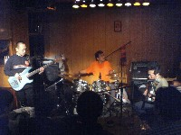
- �x���\�� (Out of Head)
-
- Careless Heart
- ���V��
- ���l�Ɣ_�v
-
- Camel/Chord Change
- You Know What You Like
- �V��A
- �V��B
- Soft Machine/Bundles�`Land of The Bag Snake
- �V��C
- �V��D
- �V��E
- �V��F
-
- �g�c�B�� (drums,vocals)
- �i�X�m�~�c�� (bass)
- �S�{���� (guitars)
#���{�b�g�o��������I�I�I�u�����C���[�t���[���X�[�c�i����Ȗ��O�Ȃ̂��A���H�j�͌��\�V���{����������I�I�I
�O��������Ɖ�������������[�ȋC���������AFritz Hilpert(�E�����Ԗ�)�͍���������s�R���������AWE ARE THE ROBOTS�̂����ɒe���ԈႦ�Ă�(�悤�ȋC������)���ǁA����σT�C�R�[�����I�I�I
�O��̃G���O���ł��ǂ�������ł����ǁARADIO-ACTIVITY�Ƃ��i�D�ǂ������ł��B�ꕔ�̋Ȃ�80�N��A�����W�ɖ߂��Ă�悤�ȋC�����܂����A�C�̂�����������Ȃ����ǁB����TOUR DE FRANCE 2003�̉f�����ǂ������B�Ȃ�[���O��̃G���O���ł̐H������Ȃ�����������⊮���Ă��������[�ȋC���B
�Ȗ��͂��Ԃ݂����Ȋ����B�l�^�o���Ȃ̂ŁA�����I���܂ł̓Z�b�g���X�g�͔��ŕ\�����Ă����܂��̂ŁA���������̓}�E�X�Ńh���b�O���Ă��������B
- MAN MACHINE
- EXPO 2000
- TOUR DE FRANCE 2003
- VITAMIN
- TOUR DE FRANCE
- AUTOBAHN
- THE MODEL
- NEON LIGHT
- RADIOACTIVITY
- TRANS EUROPE EXPRESS
- NUMBERS
- COMPUTER WORLD
- POCKET CALCURATOR/DENTAKU
- IT'S MORE FUN TO COMPUTER/HOME COMPUTER
- THE ROBOTS
- ELEKTRO KARDIOGRAM
- AERO DYNAMIK
- BOING BOOM TSCHAK/MUSIC NON STOP
- Ralph Hutter
- Henning Schmitz
- Fritz Hilpert
- Florian Schneider
#���[�Ɖ��������Ă݂����̑S�R�킩�炸�A�����s�A�m�̉�������������[�ȋC�����Ă������֕����Ă����Ă݂���L��܂����B�Ȃ�Ƃ�[�����i���C���n�E�X�s���Ă�̂Ƃ͑S����������͋C�́A�s�A�m�̗��K�ꏊ�݂����ȏ��ł����B�i�܂��������������j
�ŏ��͎O�Y�z�q����A����܂�ǂ��m��Ȃ��̂ł����A�������Ƃ����e���|�ŁA�����ɓW�J�̗L�鉉�t�Ƃ��͂�����ƋC�ɓ���܂����B
2�Ԗڂ͓��䂳��BCD�ꖇ���������Ă���̂ł����ǁA�z�����Ă��������p���t���ȉ��t�B�U�b�N���ƃX�s�[�h���̗L�銴���ŁA�i�D�ǂ������ł��B�O�X����J���e�b�g�Ƃ��ł̉��t���Ă݂����ȁ[�Ƃ��v���Ă����̂ł����ǁB
���3�Ԗڂ��A��������B�����̃s�A�m�ɐF�X���肱��Ńv���y�A�h�s�A�m���������āE�E�E�E
���[���ƉE���̃s�A�m��e���Ă܂����B
AREPOS��SORE SORE�Ƃ�������Ȃ���e������Ƃ��E�E�E�����s�A�m������3�l���ƑΔ䂪�ʔ����ł��ˁ[�A���߂ē���ȃZ���X�Ȑl���ȂƁB
�����ŋx�e������ŁA�㔼��2�l���̑g�ݍ��킹�~�R�B��l���̎������X�ɑΔ䂪�ʔ����E�E�E���ē�����O���B�ǂ��炩���哱�����悤�ȏ�ʂ͂���܂葽���Ȃ��āA��������������������O�̂悤�ɉ��y�ɂȂ��Ă�̂͗����ȁ[�Ǝv���܂����B�ł����2��̃s�A�m�Ŗ����3�l�ꏏ�ɉ��t���Ă�̂����������������ǁB
- �O�Y�z�q�\��
- ���䋽�q�\��
- ������o�\��
- ������o+�O�Y�z�q
- ���䋽�q+������o
- �O�Y�z�q+���䋽�q
#�����������A�ŋ߂���܂�s���ĂȂ�������ł����ǁA
�q����Whacho�Q���Ƃ������ŁA���ׂЂ��Ă����Ǎs���Ă��܂����B
�Z�b�g���X�g��
www.mishio.com���Q�ƁB
�i�܂��j�v�X�ɔq�l�̂��p�������̂ł����A���̓��͂قƂ�ǃM�^�[�V���Z�ł̃v���C�ł����B����ς�A�m�Ɠ��Șa�����o�����܂�Ȃ��ł��A�����ĂĂ����Ɏ��������̐l�̉��D�����Ɖ]�����Ƃɉ��߂ċC�t���܂����B
���A�s�A�m�͌��`���N��/Ring Links�̏����L�Ⴓ��B���߂Č����̂ł����Ǒf���Ȋ����̃s�A�m�A�O�����Ƃ��̃s�A�m�̐l�i�Έ�אl�������ȁH�j���������Ă銴���ł����B�p�[�J�b�V������Whacho����A���ς�炸�ʔ����Ȃ��[�B
���������̖���v���̂ł����E�E�E���̂ނ���CD�o���Ă���B
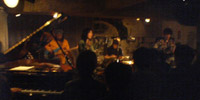
- �f���L
- �Ԃ̓���
- Hasu Kria
- ? (Michael Franks/Lady Wants to know�������ł�)
- ? (�z�r�b�g�̖��Ƃ����Ȃ炵���ł�)
- �ٓV�V�X�e��
- Tea for Two
- �O���̐�
- Old Devil Moon
- �ǐS�͊w
- On The Road
- ��
- �͂��߂�
- ���͕�
�E�H�[���[�E�r�[�Y (�ז쐰�b)
- ������� (vocals,bass)
- ���r�i (bass,guitars)
- �����L�� (piano)
- �q�� (guitars)
- Whacho (percussions)
#�h�C�c�l��Alfred Harth�iCassiber�ɂ����l�j���}���ẴZ�b�V�����ł��BAlfred Harth����͑�F�ljpNew Jazz Quartet�ɐ��������Ƃ��B
�v�X�ɃC���v���炵�����C���������ȁ`�Ƃ��������z�BAlfred Harth�̓T�b�N�X�ƃN�����l�b�g�̑��ɂȂ��z�[�X�݂����Ȃ̂�U��Ȃ���̉��t�Ƃ��A���͂��̐lCD���璮�������ƂȂ���ł����ǁA2���㔼�̐������鉉�t�Ƃ��J�b�`���ǂ������ł��B���l�ʂ����ǁB
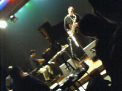
���ƁA�������V��������̓��͂��߂āE�E�E����Ȃ���a���Ō������ƗL��B�ł������Ɖ����̂͏��߂ĂƂ������ŁBDerek Bailey���ۂ��u�s�L���[�v�Ƃ��������͂�����Ƌ��A�X�e�B�b�N�g������A���������@�����肵���肵�Ă܂������ǁE�E�E������Ǝ����悤�ȉ������ɒ�������������Ȃ��B
���[�Ɛ�������͂����ʂ�A�Ƃ������C���v�����ꂵ�Ă����Ȃ��ƌ��邽�юv���܂��B�T���v���[�Œ��O�̉��t���e���T���v�����O���ă��[�v������Ƃ��A�v���y�A�h�s�A�m���ۂ������Ă݂���Ƃ��B�T���v���[�ł̃��[�v�ɑ��̉��t�҂��������蔽�����Ă�̂����āu�j���b�v�Ƃ��Ă��̂���ۓI�ł����B
�F�_����͗��b����[�����ŁA�قƂ�ǎ哱��������Ă��[�Ȋ��������܂��B�V���o���̎g�����Ƃ��ʔ��������Ȃ��B���䂳��͂���ێ�߂Ȋ����B
�㔼�̐���I�Ȋ����̐���オ������D���ł����A�S���{���e�[�Wmax�݂����Ȃ́B���[��[�̍D���Ȏ����͂���ς�P���Ȃ낤���H
- Alfred Harth (tenor sax,clarinets)
- �F�_���m (drums,percussions)
- ����S�� (violin)
- ������o (piano,keyboards)
- �������V (guitars)
#�V���G���ɂ������_�ŁA�ŏ��̂Q�o���h�͂����I����Ă܂����B
interpose+�͂�����ƌ�����������ł����ǁA�c�O�B
Free Will
#���s�̃o���h�ł��A�c�C���L�[�{�[�h+�M�^�[+�h�����B�L�[�{�[�h�̕���Dream Theatre��T�V���c���Ă���ł����ǁA��������^�����ۂ��͖��������ł��B
�ȑz�͂��[�ƁA���^���̐l���猩���v���O���̃C���[�W���ȁH�S���e�N�j�J���ȉ��t�����߂Ă����܂��B�L�[�{�[�h�̐l�̖������S���ʔ��������B�Ō�́ucave�v���ċȂ��A������ƃG���N�g���j�J���ۂ��Ėʔ������������B
minoke?
�ŁAminoke?�B������ςȂ��牖�r�̃p�C�v�������Ă��āA�[���f�B�W���h�D�B���r�̐������ɉ����������Ă܂��B
���́A������v���O���Ƃ͂�����ƈ���������́E�E�E�ǂ��炩�Ƃ����ƁASOH-BAND�Ƃ�IL BELRIONE�Ƃ����N�_�J���e�b�g�Ƃ�����Ȋ����̃W���Y���b�N���ۂ������ɒ������܂����B
�t���[�Y�̃��[�v��g�ݗ��ĂĂ���Ȋ����̃L�[�{�[�h�̃t���[�Y����ۓI���ȁH�h��ȉ��ł͂Ȃ��ł����ǁA�����͌��\�D���ł��B���[���傢���F�Ƀo���G�[�V�����L���Ă��ǂ������Ƃ��v�������ǁB
���A����minoke?��
CD-R���Ă���Ŕ����Ă��܂����B
#���C���Ƃ��Ă͂Ȃ��15�N�Ԃ�I�Ƃ���ASTURIAS�����ɍs���܂����B
�ŏ���noche�Ƃ����o���h�Bpiano + bass + clarinet + violin + percussion �Ƃ����Ґ��̃o���h�B���i�I�Ȋ����̋Ȃ������A�Y��ȂȃA���T���u�������Ă���܂����B�y���v���O�����ۂ�������A�j���[�G�C�W�̂悤�Ȋ������A���ƍD���Ȋ����̔������B
������Ə�i�������Ă��������吶���ۂ��ȁ[�Ȃ�Ďv��Ȃ����Ȃ�������B�u���������v���ă^�C�g���̋Ȃ������Ă悩�����ł��BCD�o�����璮���Ă݂����ȁB
��ŁAASTURIAS�B
�I�t�B�V�����̕��ɂ���R����ɂ�郌�|�[�g���オ���Ă���̂ŁA����������Ă���������Α�̂̕��͋C���킩��Ǝv���܂��B
���Ă������A�����Ȃ�uDistance�v�i3rd���^�A�����������s�A�m�̃V�[�P���X�̈�ۓI�ȋȁj���s�A�m�ł���ȋȂ�e���̂�����Ƃ͎v���܂���ł����B�u�A�R�[�X�e�B�b�N�Ґ��v���Ęb���āA������������[�ȉ���z�����Ă����̂ł����ǁA�S�R����ȋC�͖����悤�ł��B�Ȃ�[�����������B���ɖk�҂���̃o�C�I�������A�O���b�V�u�ŁA�ƂĂ��ǂ������ł��B
���̌�͐V�Ȃ������Ȃ���3rd�`1st���Ċ����̋ȍ\���ł����B�l�I�ɓ��ɗǂ������̂��A
�~�j�A���o���ɂ����^����Ă���uBird Eyes View�v���Ă������̕Ґ��p�̋ȁB�A�R�M�̑��e������N�����l�b�g�̎�����Ɉڂ邠����Ƃ��A�����Ăă]�N�]�N���܂����B
���Ƃ́A���X�ȁu���X�v����ς�C�C�Ȃ��Ȃ��`�Ƃ����݂��ݎv���܂��B�A���R�[���Ȃ́u���_�{�a�v�̓N�����l�b�g�̓��䂳��̋ȁA�����ASTURIAS�̃i���o�[�ƌ����Ă�����Ȃ��悤�Ȋ����̋Ȃł����B
��ŁA������̕����ł͖����̂Ŏ���̃��C�������܂��Ă܂��B5����6���ɂ܂��L��悤�ł��B�Ƃ肠�����̓I�t�B�V�����̕����`�F�b�N���Ă݂܂��傤�B
- Distance
- Adolescencia
- Cryptogam Illusion
- Bird Eyes View
- �_�̐ۗ��ɒ��ގҒB
- Global Network
- Brilliant Streams
- Nostalghia
- ���X
- ���_�{�a
- ��R�j (guitar)
- ��z�D�� (piano)
- �k�҂݂� (violin)
- ���䍁�D (clarinet,recorder)
#���̃C�x���g��
satomilk�����Ɂu���C�������̂����A�q����̎��Ƃ���DJ�����Ȃ����v�Ƃ������b�Ńv���O����CD������V���G���Ɏ�������ŁA����܂�N�������ĂȂ�����Ƃ��v����DJ��点�Ă��������܂����B�W�҂̕��A���Ă��ꂽ���A�L��������܂����B
�܂�������DJ�̘b�͂����Ƃ��āA���C���̕��B
SIXTROT
#����̃C�x���g�̎�ÎҁAGENESIS�̃R�s�[�o���h�B�uLIVE�v�̋ȏ��ɂāB�܂�
- Watcher of The Skies
- Get'em Out By Friday
- The Return of The Giant Hogweed
- Musical Box
- The Knife
�Ƃ�����ł��B������ςȂ���V���Z�̉��o�Ȃ��āiPA�������̂��ȁH�j�u�[�X����q���q�����Ȃ��猩�Ă܂����B
�����o�[�̓M�^�[(S.Hacket)�A�x�[�X��12���M�^�[(M.Rutherford)�A�L�[�{�[�h(T.Banks)�A�h����(P.Collins)�A�{�[�J��(P.Gabriel#1)�A�{�[�J�����t���[�g(P.Gabriel#2)��6���B���A�L�[�{�[�h�͑O�q��satomilk�l�ł��B
����ρuThe Return of The Giand Hogweed�v�̃C���g���Ƃ��������傦���Ȃ��Ƃ��v�������Ă܂����A�t���[�g���Y�킾�������B�i
��SIXTROT�j
AMSTERDAM
#����̑�E�P�ł����AKING CRIMSON�̃R�s�[�o���h�B�g���I�Ґ���������ł������́A
�܂������L�ɏ����Ă܂������A
���X�̏�݊���Ȃ���˂��i����[�Ȕ��͂̉��t�ŁB�uOne More Red Nightmare�v�uPicture of City�v�uLadies of The Road�v�uTalking Drum�`Larks' Tongues in Aspic Pt.2�v�Ȃǂ����t�B�j�]���Ă��Ă��i�D�C�C�Ƃ��������v���O����̌�������[�ȉ��t�ł����B
���Ƀx�[�X�̐l�A�Ō�́u21st Century Schizoid Man�v�Łu�ρ[�E�ς�ρ[�E�ς��ρ[�v�i���̃C���g���̏��A�킩���ˁH�j�̌��Łu�u�C�v�u�u�C�v��2��O���b�T���h�B
2����ꂿ�Ⴄ���I�i��
AMSTERDAM�j
ZIZOH
#WISHBONE ASH�̃R�s�[�o���h�B������̃o���h�͉��Č��������́A���t�̃��x�����Ⴂ�܂����B�قƂ�NJ����Ƀc�C�����[�h�����߂�2�l�̃M�^�[�ƁA�^���̌������������肵���h�����̏����i�����������j�A�����`��ȃx�[�X�̐l�B
WISHBONE ASH���āuPilgrimage�v�ƁuArgus�v���������ĂȂ��̂ł����Ǐ\���y���߂܂����B�uThe Pilgrim�v���čD���ȋȁi Pilgrimage��2�ȖځA7���q�j�������Ċ����������ȁB
���v�X�ɒ����Ԃ��Ă��ł����ǁA�قڊ����ɃR�s�[���Ă��݂����ł��ˁB�������B�i��
ZIZOH�j
�q���ꎞ:
Fields/A Friend of Mine
Greenslade/Newsworth
Rare Birds/Melanie
Cressida/Asylum
Arti Mestieri/Da Nord A Sud
Gong/Golden Dilemma
Gong/Shadows of
Anthony Phillips/Slow Dance part.1
AMSTERDAM����̑O:
Heldon/Perspective 4ter Muco
King Crimson/When I Say Stop, Continue
Anekdoten/Rubankh
King Crimson/Thrak
Eistruzende Neubauten/Yu-Gung
King Crimson/Requiem
Nirvana/Very Ape
Heldon/Marie et Virginie
�E�E�E�݂����Ȋ����ŁA�܂��E�E�E
#��F�ljp����́uANODE�v�X�e�[�W�̐^���ɂ̓}�C�N�����Ă��A������Ƌ�����u���Ă��̎�������t�҂����͂�ł��܂��B�i���t�҂̕��т́A���̃��X�g���ɉE�����Ń��[�v�j
�ꕔ�ł́uANODE #2�v�ƁuANODE #3�v�i�ǂ����Ȃ̐�ڂ����S���킩��Ȃ��������ǁj���Â��Ɩ��̒�����PA�����ŁA�T�C���g�A�V���o�����C�鉹�A�M�^�[�̃n�[���j�N�X�Ȃǂ��A�F�X�ȏ����璮�����Ă��܂��B�u���t�҂���̉��𗧂Ă�ƁA���̐l�͂��̉���������܂ł͎��̉����o���Ȃ��v���Ă��������i��������ˁH�j�̒��ł������ɉE�̉��ƍ��̉��������荇���Ă���[�Ȋ����ŁE�E�E
�E�E�E�E�E�E�����܂���A�O��������ƐQ�܂����E�E�E�E�E
�x�e������ŁuANODE #1�v���̃Z�b�g�ł́A�u�ϋq�ɍD���Ȃ�[�ɓ�������Ă��������A�������o�X�h���̒��ɓ���˂����肵�Ȃ��悤�Ɂv�ƁB��u�Ɩ���������̂Ɠ����ɁA�S�������ł̉��t���n�܂�܂��B
���邮�铮������Ă���Ɓu��ԋ߂��̉��t�҂̉�����������A�ł��ׂ̉��t�҂̉�����������A�����̉��t�҂̉��͒������Ȃ��v�ĂȏA������O�����ǁB
�����߂��ɍs���Ɓi�قځj�S���̉����~�b�N�X����Ē������܂��A�����ڂʼn��t�҂������Ⴄ�ƌ��Ă��鉉�t�҂̉��������ǂ������Ă��܂��݂����B�ڂ���ĉ����������Ă��360�����璮�����Ă��鉹���ʔ����������Ē������܂��B
���߂Č�����ł����ǁA�H�R�O������̓^�[���e�[�u���̏�ɃV���o���A���̏�ɐj��������āu�M�M�M�M�M�M�M�M�M�M�M�v�ƕ������t�B�[�h�o�b�N�B���ɂ�����y��݂����Ȃ̂ŐF��ȉ��o���Ă܂����A�������B
���@�_���Ă������A���̒��������`�]�X���Ă������C���ł����B����͂������S���C���v���ł̉��t�Ȃ�ł����ǁA���[�������@�_�ō�Ȃ��ꂽ��[�ȉ��y�Ƃ��ł��Ȃ�����[���ȁH�Ƃ��v���܂����B
���ƁA���\�^�����Ă�l�����܂������ǁA�A����^���������ŃR���Z�v�g�̈Ӗ������Ȃ����Ⴄ��[�ȋC���E�E�E����ȑO�ɘ^�����ăA������Œ����̂��Ȃ��H
- ��F�ljp (guitars)
- �F�_���m (drums)
- Sachiko M (sine wave)
- �C�g�P�� (drums)
- �b�ǐ^�� (percussions)
- ���{�� (guitars)
- ���z�q (�)
- ��y�V�� (drums)
- �H�R�O�� (turntables,selfmade instruments)
- �A�����O (drums)
- ���Njv���q (vibraphone,percussions)
#
�uchienowa�v���Ă����C�x���g�B�Ƃ肠����machine and the synergetic nuts��NATSUMEN�iBOaT�̌�p�o���h�݂����Ȃ̂��ȁ[�H�Ƃ��v���āj���������čs���Ă��܂����B
machine and the synergetic nuts
#���[�ƑO�Ɍ����̂��m���R�R(NEST)��������[�ȁB
�O���Ƃ��Ɋ����������o�����X�̈��������͐����ǂ��Ȃ��Ă܂����BSoft Machine�́uOut-Bloody-Rageous�v�Ɏ����悤�ȃV�[�P���X�̋Ȃ��L������Ƃ��A�J���^�x���F�����Ȃ苭��������������e�B
�n�[�h�R�A�̃��Y���̏��Dave Stewart��Elton Dean����������Ă��[�Ȋ����B���Ă̂͌����������ȁH��ł�National Health�Ƃ��D���Ȑl�������炩�Ȃ�̊m���ŋC�ɓ���悤�ȋC�����܂����B

- �}�q�}�q (soprano sax)
- �{���r�� (drums)
- �X�Y�L�q�����L (bass)
- ��c�m���� (keyboards)
music from the mars
#�U�N�U�N�Ƃ������t����ۓI�Ȃ�ł����ǁA���͎����q�̋ȂƂ��������肵�܂����B�i���炭�ϔ��q�Ȏ��ɋC�t���Ȃ������j
�G���s�̐l���}�ɃN���V�J���ȃt���[�Y���Ђ�����Ƃ����ĂĖʔ��������B
����ł��[���傢�̃�������ۂɎc��ƃC�C�Ǝv����ł����ǁE�E�E�E
- ����F�M (guitars,vocals)
- �g���S�i (drums)
- ���T���Y (bass)
- ���L���I�V (piano)
NATSUMEN
#�ŁA�����̖ړ��Ă�msn����Ȃ��āA���͂������Ȃ̂ł��BAxSxE�����BOaT�̌�p�o���h�̂悤�ȃC���X�g�o���h�B
�L�[�{�[�h��Eigo���Ă̂�Panic Smile�̐��p�q����ł��B���͗ǂ��m��Ȃ��̂ł����ǁA�x�[�X��RUNTSTAR�i�M�^�[�|�b�v�������ȁH�j�̐l�݂����B
���[�ƃn�[�h�R�A�����b�N���|�X�g���b�N���v���O�����G�����E�E�E�������͂��̑S�����B
�Ȃ̍\���͌��\����B�ςȃu���C�N�Ƃ��A�s���a���Ƃ��F�X�A�ł��e�[�}�͂ƂĂ���ۓI�ȃ����f�B�[�B�����̃M�^�[���t����u�~��Ńt���[�g�ƃA�R�M�̑@�ׂȃp�[�g����������Ƃ��A�M�^�[���t�̗��̃L�[�{�[�h�̃V�[�P���X���ƂĂ��i�D�悩������A�t���[�g�{�N�����l�b�g�̃p�[�g�͈�u�`�F���o�[���b�N���v�킹��悤�ȏu�Ԃ���������Ƃ��B
���̃o���h���|�X�g���b�N���ǁ[���m��Ȃ��ł����ǁA�u�|�X�g���b�N�v�Ƃ��Ŋ����Ă鉹�Ɋ����Ă��s���𐁂�����悤�ȉ��ł����B����ς胍�b�N���Ă̂͂��[����Ȃ��ƂƂ��v������v��Ȃ�������B
�����̊��Ғl�̐��{�ǂ��������C���Ȃ�Ă����ő��ɗL��킯����Ȃ���ł����ǁi���̃o���h�͗\���m������܂薳����������]�v�j
�V�r�������Ă����̖̂���݂����Ȍ��t���o�Ă����[�Ȋ����B
��ł��A����ȂɊi�D�C�C�̂ɁA����܂艹���������[�X���ĂȂ��݂����B�����I���j�o�X�ɂ�����Ƃ������Ă�݂��������ǁE�E�E�������������������[�X����邱�Ƃ��F��܂��B
�����Ă���܂ł̓��C���ŁA12/14���c�n��PHASE,12/31�H�t��GOODMAN�B
��http://boat.d4k.net/

- AxSxE (guitars)
- Aine (miming guitar)
- Yashyro (acoustic guitar)
- Eigo (keyboards,xylophone,flute)
- Maseeta (drums)
- Shige (bass)
- Izu (clarinet)
sugar plant
#���[�Ǝ��̓R���̍ŏ�����������ƌ��ċA����������̂ł����i�d�����c���Ă��́j
Klaus Schulze�݂����Ȋ����̃V���Z�{�A���r�G���g�ȃG���s�{Manuel Gottsching�ɂ����������Ȃ��M�^�[�{������Ɨ��������������̏����{�[�J���B���Ă������ł����AAsh Ra Tempel��Starring Rosi�݂������Ȃ��i����ȂɃT�C�P����Ȃ����ǁj�Ƃ����Ƃ��A������ƒ����������Ȃ̂ŁB����܂���A�ł����̑O��NATSUMEN�̃C���p�N�g���f�J�߂��āB
#�����O����
SAKEROCK�������Ǝv���Ă��A���ł�
�~���ɂ��s���Ă݂����Ǝv���Ă��B
����Ȗ�ŃE�c�{����ƍ��~���ő҂����킹�āA�~�ՂցB���ʂ�߂������ǁA�����Ɩ߂��ė���܂����B�J��҂����Ă���ASAKEROCK�̂��q�����\�W�܂��Ă��܂����A���������i�s�����C�u�Ƃ͑S���t�̒j���\�������q�w�ɏ��X�r�r����B�i���Ȃ݂ɑ�̂����j:�� = 9.5:0.5���炢�j
�܂��ŏ���
�l�쌪���J���e�b�g�E�E�E�J���e�b�g���[���E�E�E�Ґ��͕l�쌪�� (vocals,MD)�@�ȏ�B
�|�[�^�u����MD�̃����R���𑀍삵�Ȃ���A�w���w���Ɖ̂��グ��B�̂�����X�g�b�v�{�^�����u�s�b�v�ȏ�B
����ŃA�����A��[�₭SAKEROCK�Ȃ�ł����ǁBCD�������Ƃ��́u����C�u�Ō�����y��������[�ȁv�Ƃ�����ۂ��X�ɏ���悤�Ȋy�����X�e�[�W�B���C�����Ă��炱�̃o���h���ƂĂ���肢���ɂ�[�₭�C�t���܂����A���ɃM�^�[�̂�����ƕȂ̗L��o�b�L���O���A�����ْ��������߂Ăėǂ������Ȃ��B
�h�����͉~�Ղ̃X�y�[�X�̊W�ŁA�o�X�h�������̃n�C�n�b�g�ƃV���o���ꖇ�ƃJ�E�x�������̕Ґ��B��ł��S�R�s�����Ȃ������ȁAKILLING FLOOR�̃h�����ł��L���ł��ˁB�����o�[�S���▭�̃o�����X���o�����������t�B
���[�Ɠr���ŋx�e����ŁA�����F�f���Ă����M�^�[�������������f���I���o��B�Ƃ肠�����ڏq�͔����܂����ǁA��ԏ�����l�^�����[�j���O���B���Ă̂͂ǁ[�Ȃ낤�H
�ŁASAKEROCK��B�Ȗ��Ƃ�������ƕ�����Ȃ��i�����͋ɒ[�ɋȂ̖��O���o�����Ȃ��l�ԂŁA�ŋ߂͓��ɂ��ꂪ�����j���ǁA
CD����́u�V�����v�Ƃ��u���[�v�Ƃ��u�x���}�b�`���v�Ƃ��u�������v����Ă����ȁB
�Ȃ̗ǂ��͉��߂Č����܂ł�������ł����ǁA���̃����o�[�̏o�����̐l���������������E�E�E�Ƃɂ����f���炵���ł��B�A�z�����O���[���������A�����B�i���Ȃ݂Ɏʐ^�̓A���Ȋ����̕l��l�A�}�Y�������瑬�₩�ɏ����܂��̂Ō����Ă��������j

- ���쌹 (guitars)
- �ɓ���n (drums)
- �c���] (bass)
- �l�쌪�� (trombone)
#���Ƃ��ƁA�����
Giulietta Machine�̃��C���ł͂Ȃ��̂ł����A�����o�[�͈ꏏ�ł��B
�O�X����iUBiK�̍��j���猩�����ȁ[�Ƃ��v���Ă���ł����ǁA����܂��R���C���������ł͖����̂ō��܂ł����ƌ��ꂸ�ɂ����̂ł��B
���Ȃ݂ɁA���Ƃ��Ȃ�������͍ŋ߂��Ƒ�F�ljpblue band�Ƃ�NOVO TONO�Ƃ��A�̂���UBiK(NaO2)�Ƃ�Sunset Kids�Ŋ�������Ă����B�����͂��̐l�̋Ȃ�������Ɓi���Ȃ�j�D���Ȃ̂ł��B
����Ȗ�ŁAsatomilk����Ƃ��ƃA�P�^�̓X�ɍs���Ă��܂����B��Â����PowerBook����G�t�F�N�g���ɏ������_�炩�Ȋ����̂������Ƃ����s�A�m�̋ȁB���[��[�̂����������̂ł��B�i��F����̃o���h�Ƃ����ƁA����܂�O�ʂɏo�Ă��邱�Ə��Ȃ����j
�Ȃɂ���Ă��U�ꕝ�傫����ł����ǁA�G���N�g���j�J�Ƃ������悤��/�Ⴄ�悤�ȕs�v�c�ȉ��A��Â���̋ȂȂ͂�����ƃ{�T�m�o�̂悤�ł��L��A�A���r�G���g�݂����ȉ��ɂ��������邵�B��ł�MUM�Ƃ��D���Ȑl�Ƃ��Ɏ����Ȋ����������ł����ǁA�ǂ��Ȃ�ł��傤���H
���X�g�ɂ�Giulietta Machine�̃A���o���́uTudo�v�i�V���Z�̃��[�v�͐��s�A�m�ł���Ă܂����A���Ȃ薳���Ȋ����Łj
��͂�CD�����i�}�̕����S�R�ǂ������ł��B���̓��͍��m�����Ȃ������������q���Ȃ������ł����ǁA�����ƕp�ɂɃ��C������Ăق����ȁ[�Ǝv���܂����B
��Giulietta Machine
- ���Ƃ��Ȃ��� (piano,synthesizer,vocals)
- ��� (guitars,computer)
- ����M�Y (drums)
#��ŁA�|�Z�C�h���t�F�X2���ڂ̒��̕��B���KBB�Ƃ��L�������ǁA�p�����������̂Ńp�X�B
F.H.C.
#stick��keyboard��contrabass�̃t���[�Y���d�ˍ��킹�ċȂ��i�s���Ă��āA��������I���悤�ȋȂ������������ȁH�u�N���]���v�́u�N���]�v�ŏI����[�Ȋ����B�X�e�B�b�N��80�N��N�����]���݂����ȉ��o���āA�L�[�{�[�h�iMS-2000�������j�͂�����Ə��i�I�Ȋ����̃t���[�Y�B�V���Z�̉��F���r�~���[�ɕς��Ȃ���t���[�Y�e���Ă������Ƃ��ʔ��������B
�C���p�N�g�L��悤�ȋȂł͖�����ł����ǁA�s�v�c�ɖʔ��������BVITAL�̃T���v���[�Ɏ��^����Ă�Ȃł̓h��������Ȃ�ł����ǁA�����ɂ��Ȋ����̃h��������̕Ґ������A����̃��C���ł̕Ґ��̕����ʔ����悤�Ɏv���܂����B
 ��F.H.C.�̃T�C�g
��F.H.C.�̃T�C�g
- ���������� (stick)
- ���~ (keyboards)
- �����M�� (contrabass)
���[�\�t
#���Ȃ��������Ă��ł����ǁA���[�\�t�ł��B����͐l�����Ȃ������������A���̂������A�O����Ɗ������S�`���S�`���������������������ł��B�����b�N�X���������ŃC�C�B
�O��A�R�s���������V����͍���̓L�[�{�[�h+���E�ŁA���Ȃ�Mike Ratledge�ȉ��ɂȂ��Ă܂����B�����͗��Ƀ{�[�J���������ȂƎv���Ă���ł����ǁA���X�Ȃŕ�������Ƀ}�C�N��n����āu�u�L���[�v�Ƃ�����Ă܂����B
�u�R�v�`�u�T�v���炢�̃\�t�g�}�V�[���݂����Ȋ����̉��B���Ȃ��������\�t�g���[�N�X���C�C�łȂ����ƁB
 �����[�\�t�̃T�C�g
�����[�\�t�̃T�C�g
- �������v (sax)
- ���c�T�� (bass)
- ��c��G (drums)
- ���V����q (keyboards,voice)
POSEIDON RECORD��Ẫ|�Z�C�h���Ղ�B����ڂ̍]�ÓcBUDDY�ł́A���v�X�̂�U�ƒو�+�S�{�f���I�B�Ƃɂ�����U���������āA��Ђ�莞�ŒE�o�B
�و䏲�v+�S�{����
#���[�Ƃ��̑g�ݍ��킹�Ō���̂͏��߂Ă��ȁA�uEra�v����CD��POSEIDON�ŏo���Ă܂��B�و䂳��̒e���t���[�Y�͂ǁ[���Ă��v���O���A�S�{����̎Q�����Ă鐔�����O���[�v�̒��ł���Ԃ�����v���O���ɋ߂������Ǝv���܂��B�A�R�M�ƃo�C�I���������Ȃ̂ɓ�l�̎萔�̑������ƁB�uCrawler-A�v�Ƃ�����Ă܂����B
�����āA���܂������ݍ���Ȃ�MC�B���ꂪ�v���O���B
���و䂳��̃T�C�g���A�و�/�S�{Duo�̃y�[�W
- �و䏲�v (violin)
- �S�{���� (guitars)
��U
#�W�N�Ԃ�I�I�I

���[�A���̃����c����̃X�e�[�W�ňꏏ�ɉ��t������Ă����Ŋ������ł��B�S���t�@���݂����ȃ��m�ł�����B
��l��l�̉����ƂĂ��Ȃ̋����܂܁A��������A���T���u���Ƃ��Đ������Ă���Ă̂����������ł��ˁB�������̃T�b�N�X�͂���ς�Real Fish��Fishermen tit tot�Œ����Ă��A�m�������A��������̃o�C�I������SOLA�Ƃ��Œ��������₩�Ȋ����ŁA���x����̃M�^�[�͍��x����ł����Ȃ��������A�v�X�ɒ������ꂢ������̃h���������ς�炸�^���̌����������ŁB
����Ȗ�ōŏ��͒�ԁuBlivits�v�i
KILLING TIME/BILL�A
��U�Ɏ��^�j��U�̃A���o���ɋ߂������̉��t�ł��B�u��҂��ǂ��v�͐���+���x+�ꂢ���̃g���I�ł̉��t�A�Ȃɂ�特�����o�b�N�ɂ����X�s�[�h���̗L�鉉�t�Ŋm���Ɏ�҂��ۂ��̂����B
�u�^���S���ǂ��v��
2000.6.4 ������o+�������q+���x�P�Y @ ���w�� in F�ň���������Ȃł��B���ł����������̂��ȁH���́u�^���S���ǂ��v����u���e���v�i
KILLING TIME/SKIP��One for Each Sentiment�j�֑����Ĉꕔ�I���B���e���㔼�͂ƂĂ��e���V�����̍������t�A����ȂɋC���̓������u���e���v���̂͋v�X�B
�x�e���͂���ōŏ��͐�������1�l�ł̉��t�B���ς�炸�~���[�ȉ������d�˂Ă����ăs�A�m�\���A�����O�̐V�h���t�g�v���X�����ł̐����\�����v���o���܂����B
�����ă����o�[���]���]���o�Ă��āuMinerals�`Tasmania�v�����t�B
�I�p�r�j�A�ł������܂����ǁA����ς蓖����O�ł����ǑS�R��ۂ̈Ⴄ�����ŁB
�uGymnesia�v�i
yet somehow...���^�j�ł͐�������xylophone�̉��t�A���̋Ȓ����̂͂ق�Ƃ�8�N�Ԃ肩���B�uJohnson Blues�v�Ƒ����āA���X�Ȃ͂���ς�uHabanerege�v�{�[�J���̏������������葹�˂Ă����ǁA���ς�炸�����Ȃ��̋Ȃ��r�V�b�Ɖ��t����̂͂���ς肱�̃����c�Ȃ�ł͂����B
�A���R�[���ł́uEpistrophy/Variation�v���\���t���ł���Ă���܂����B�ꂢ������͉��̂��uHabanerege�v�̃{�[�J���p�[�g���̂��Ă���B
MC�Ő������u�v���Ԃ�ɂ݂�ȂŏW�܂��ĉ��t���āA����ς�݂�Ȃʼn��t���Ă銴�����ȁ[�v�Ƃ������Ă܂����B���̌��t�ɐs����悤�ȋC�����܂��B�u���ꂩ��͈�N�Ɉ�炢�͂�肽���`�v�Ƃ̌��t��M���Ď����҂��ƂɁB
- Blivits
- Epistrophy/Variation
- Waltz #4
- ��҂��ǂ�
- Contrarily
- �^���S���ǂ�
- ���e�� (One For Each Sentiment)
- �i������o�\���C���v���j
- Minerals
- Tasmania
- Gymnesia
- Johnson Blues
- Habanerege
- Epistrophy/Variation (�A���R�[��)
- ������o (piano,keyboards,bass clarinet,xylophone)
- �������q (violin)
- �n�ӓ� (bass,11-strings fretless guitar)
- ������N (soprano sax,alto sax,baritone sax)
- ���{�� (trombone,tuba)
- ���x�P�Y (guitars)
- �ꂢ�� (drums)
#���[��1�߂́A�u��*���낤�v�̃h�����A��������������Q�����Ă���COOL TONE THYTHM���ăo���h�B
�L���C�߂̃W���Y���b�N�Ȃ�ł����ǁA���X���ł��Ȃ����[�ȕ��ʂ̃p�[�g�ɐ�������̐��܂����t�B���C�����}������Ăĉ��������B
�r������R�c�~�i������ĕ����s�A�m�œ����āA�Ћ˂��s�A�j�J�ɕς��ĉ��t���Ă�̂��ǂ������ł��B������ƃt�@���L�[�ʼn��������̃W���Y���b�N�݂����ȁB�ł��h�������ˑR����Ńt���A�^����@���������肷���ł����ǁB
COOL TONE RHYTHM
- �Ћˋv�� (piano,pianica)
- �������� (drums)
- �c���^���Y (contrabass)
- ���c���i (sax)
- �R�c�~�i (piano)
���V����q+����a�v
#��Ń|�`���J�C�e�}���R�̉��삳��ƁA����q����Ƃ̃f���I�B��Ȗڂ̓|�`���J�C�e�̃A���o������uUkraine�v�����t�B
�s�A�m2����[���ƂŁA�Ȃ������Ă�Blue Motion�i�X�C�X�̃v���O���o���h�j���v���o�����Ⴂ�܂����B���Պy��~�Q�̃t���[�Y���������āA�P�P�t���[�Y�Ƃ͕ʂ̃��m�ɂȂ��Ă���[�Ȋ������ʔ����B���������炾�Ƌ��V����q����̔w�����������Ȃ��̂ŁA�ǂ�Ȋ炵�ĉ��t���Ă�̂������Ȃ��̂�������Ǝc�O���������ǁB
��̓o���g�[�N�̋ȂƂ��A���삳��̋ȂƂ��������B���̓���Ԉ�ۂɎc�����̂��A���Ղɂ�����u�H�n��#1�v���ċȁB�f��̃T���g���̂悤�ȃg���b�h�̂悤�ȁA������Ɖ��������悤�ȃ����f�B�[�����Ȃł����B���̓��̃f���I�̒��ł͂�����ƈِF�Ȋ����ł������ǁA�܂����������ȁB

- ���V����q (piano,voice)
- ����a�v (keyboards)
���[�\�t
#��ŁA�Ōオ�����[�\�t�i���[�j���O�}�V�[�����\�t�g���B�j�l�[�~���O�Z���X�ɋ^����������ނ̂͒u���Ƃ��āA�A���@���n�̃W���Y���b�N�i���Ă����ăC�C�̂��ȁj�ŏ��Ɏv�����̂͂���ς�Doctor Nerve�Ƃ�X-Legged Sally�Ƃ����̕ӂ̉��B
���̓��̓Q�X�g�ɂ�*���낤�̋��V����ƈ䓛������}���Ă�5�l�ł̉��t�B������ƃx�[�X�̃��[�v�ƃG�t�F�N�g�����邳�����āA���̉��Ƃ̃o�����X������������[�ȋC�����܂��B
���Ƃ�
CD�����Ă݂����ǁA����ς肱�̓��͂�����ƃo�����X����������Ȃ����ȂƂ��B
����ł��\�t�g�}�V�[���݂����ȃx�[�X�t���[�Y�ɐ����̗L��T�b�N�X������u�ԂƂ��̓X�J�b�Ƃ����Ȋ����ŁB�r���Ŕ���q����̓�{�C�X�Ƃ����y�Ă܂����B
���x��
�|�Z�C�h���Ղ��ł�500�~�ł܂������݂����Ȃ�ŁA�s���Ă������Ǝv���܂��B
- �������v (sax)
- ���c�T�� (bass)
- ��c��G (drums)
- ���V����q (piano,voice)
- �䓛�D�� (guitars)
����Ȋ����ł��āA�F�X����Ċy���������ł��B�uvol.1�v���Ď���2��ڂ��L�邾�낤�ƁA���҂��đ҂��Ƃɂ��܂��B
���Ƃł��ˁA�u��*���낤�v�̃A���o����TUTINOKO���[�x�����痈�N�ɏo��炵���ł��B�����ҁB�����Ɩʔ����̂ł݂�Ȕ����܂��傤�B
#���[���[�����Ȃ�������啪�Y��Ă邯�ǎv���o���ď������B
�C������
#�o�i�i�̔�Ŋ����ē]�Ԃ̂��ǂ����������[�Ȑl�ł����B�͂��Ⴌ���̃w���e�R���b�v�B���Ă�����
COMBO PIANO
#���[�ƁE�E�E�ƂĂ��Z���X�̓C�C�l�ȂƎv����ł����ǂ˂��E�E�E��肽�������U����Ă܂Ƃ܂���Ȃ������B�i���C�����Ɓj
SHINTO
#���O�ɂ́u�h�C�c�l�炵���v�Ƃ���������������̂ł��B�h�C�c�l�̓�l�g�B
�Ƃ肠�����A
SHITO�I�t�B�V�����T�C�g�����ĉ̎����Ē�����C�C�̂ł����ǁE�E�E���b�v�g�b�v+�x�[�X�i�܂艹�S���j�̃n���X�ƁA�̒S���̃J�~�E�g�N�W���[���Ă̂̓�l�g�ł��B
�G���N�g�����ۂ��g���b�N�����ꂾ�����ȁ[�Ƃ��v������A���̃J�~�g�N�W���[�����̂̂悤�Ȑ̗̂̉w�Ȃ݂�����
���{����N�X�Ɖ̂��������Ƃ��̃C���p�N�g�͕M��ɐs������ł��B
������ƈႤ���ǁA�O�������q���ŏ��Ɍ����Ƃ��̃C���p�N�g�ɋ߂����̂������܂����B�ŋ߂��̔ԑg�A�����Z�����ł����ǁi�Ƃ��r�V���b�v�Ƃ��j�R���͗��ɎE�l�����Ȃ�Ȃ����ƁB
SPANK HAPPY
�ŁA�g����SPANK HAPPY�B�����Ō�Ɍ����̂�
2001.3.10��CLUB ASIA������A���[2�N���Ԃ�Ɍ��邱�ƂɂȂ�܂��B�v�X�Ɍ������V������͊炪�������Ȃ��Ă܂����B
�Ȃ͍��N��������2nd�̋Ȃ炵���A1�ȖڂƂ��̓m���X�^���_�[�h����̍ז쐰�b�݂����Ȋ������ȁH��{���͕ς�炸�g���b�N�̃N�I���e�B�[�͑��ς�炸�i�Ă������قƂ�Ǔ��Ăӂ肾��������CD�̂܂܂����j�A�����ɂ͂Ȃ��e�n���E�̏����|�b�v�X�Ȃ̃G����������������Ȃ�����[�Ɏv���܂����B
�܁A���́A�C�C���ǂ����̓A���o���o��܂ŕۗ����悤���ȂƁB
#
ROUND HOUSE�̕�����̓����ł�2��ڂ̃��C���ɂȂ�܂��B
���Z�̍���MADE IN JAPAN RECORD����o�Ă�
�l���l�����Č����A���o���ɓ����Ă���u���ԏ����̒��v���ċȂ��Ƃ��Ă��D���ɂȂ��āB�O��̃��C���ł͉��t���Ȃ��������̋Ȃ�����͒������Ƃ��o���܂����B15�����炢�L��Ȃł����ǁA�Ȃ����f�B�[�ƋȓW�J���ƂĂ��D���ŁB
�ŋߎ������ǂ����C���ɍs���o���h�Ƃ͂�����ƌn�����Ⴄ�̂����i�ǂ����ɂ���v���O���n�����ǁj�m��Ȃ��ł����ǁA�ǁ[�����̃o���h�̃M�^�[2�{���A���x�����炵�ăT�r��e���̂��ƂĂ��i�D�ǂ����āB
���̃o���h�́u�W���Y���b�N�v���Č������Ⴄ�ƁA������ƈႤ��ȋC�����Ă܂��B�Ȃ���C���X�g�ʼn̂�����悤�Ȋ����́A�T�r�̃����f�B�[�o�����Ⴄ�悤�Ȋ����̕s�v�c�ȃC���X�g���Ă������B����ς�Ȃ��ȁH���G�ȋȓW�J�ł��r�W���A���Ȋ����ŗǂ��l�����Ă�Ǝv���܂��B
���A���Ƃ��̓��͉��������MC�����������E�E�E�V�R���Ă������E�E�E�i����Ȏ���������}�Y�C���ȁj�E�E�E���t�Ƃ̃M���b�v���B(2003.10.24)

- �X�[�p�[���[�v
- �F��
- �Ԃ��K�N�ƈ����̚���
- �X�t�B���N�X�̗�
- ���}���e�B�b�N�����[
- �Ȃ��v���i�A���o�[���C���j
- ���ԏ����̒�2003
- �\�t�e�B�[�~�X�g
- �G���h���X���[�v
- �l���l��
- �ؗ�Ȃ�댯�l��
- �Ō�̔����i�A���R�[���j
- �������V (guitars)
- �㑺�`�� (bass)
- ���抰 (drums)
- �c���㕐 (guitars)
- �Љ��˓T (keyboards)
#�`�F�R��Uz Jsme Doma�i�u�E�V���E�X�}�C�E�h�}�v�Ɠǂނ炵���ł��j�̗��������B�������悭������Ȃ����Ǎs���Ă��܂����B
��ŁA�o�����S�{���������Warehouse�B�v�X�Ɍ��܂������ǁA�ƂĂ��k���Ȋ����ɂȂ��Ă܂����B�p�b�ƒ�������ۂ��ƃJ�t�F�Ƃ��ł������Ă����ȏ_�炩�Ȋ����̉��Ȃ��ǁA�悭�����ƂƂĂ����G�B�r�u���t�H���̕��G�ȃ��[�v�ɁAR.Fripp�݂����ȃM�^�[����������Ƃ����ĂāB
���ł�2nd�̘^�����ς�ŁA�ł���ΔN���Ƀ����[�X����Ƃ������b�B�Ȃ̃^�C�g���͌��܂������ǁA�A���o���^�C�g�������܂��ĂȂ����Ęb�ŁA�u���ɂ��悤���H�v���Ă̂ɋS�{���u�����Ă��v�u�����Ă��Ƃӂ�ǂ��v�Ƃ��E�E�E�m���ɔ��㖇��������܂��B
- �S�{���� (guitars,hi-hat)
- ���Njv���q (vibraphone,percussions)
- ��؊��F (bass)
#����ŕЕt���I�������AUz Jsme Doma�̃����o�[�o��E�E�E�w���Ȉߑ��i��ŋC�t�������ǁA�h���t�̍����̃R���g�ɂ�������Ȉߑ��j
�T�b�N�X�̐l���M�^�[�ɂȂ��Ă������߂��A
��������������ɗL�����u�a���v���Ă̂͂�����ƈႤ���Ȃ��ăT�E���h�ł����B�ނ���ؓ������тƂ��i�S���Ƃ����ۂ���ہB�i�T���{�}�X�^�[�ɂ����Ă�悤�ȋC���������ǁA�m��Ȃ���ˁj
�Ƃɂ������킵�Ȃ��o���h�ŁA�Ƃ��U�炩���������̒��ŃT�b�J�[���Ă�݂����Ȋ����B���ɉ��������̂��h�����ŁA���̃X�i�b�v��S���������Ȃ��Ńn�C�n�b�g���u�`�`�`�`�`�`�`�`�`�v�ƒ@���̂��ʔ����āB���X���[���Ƃ��g���Ă���ŁA�킴�Ƃ���Ȋ����ɉ��t���Ă���ł��傤���ǁA���Ă邱�����܂Ŕ���悤�ȉ��t�B
��̓w�b�|�R�̖��ɒp���Ȃ������Ȃ��������Ă����݂����ȃy�i�y�i�ȃM�^�[�Ƃ��A�Ƃɂ����o�L�o�L�����x�[�X�Ƃ��A�|�����L���o�J�{�[�J���Ƃ��B���R�����n�ƌ��������Ȃ悤�ȋC�����邯�ǁA�m�I�Ȋ����̓[���ł��B�i���Ȃ��Ƃ����C���́j
���A���Ȃ݂ɉ��t���͉�Ƃ����ŋ��ԃj���W���̊G��`���Ă�B�f�^�����̈���������̐��E���_�Ԍ�����[�ȋC�����܂����B�f���炵��
�n���o���h�A�ʔ��������B�i�������悭���l�W���Y�v�����i�[�h�ɏo����ȁj
- Radek Podvesky (guitars,vocals)
- Petr Bohm (drums,vocals)
- Miroslav Wanek (guitars,keyboard,vocal)
- Milos Albrecht (bass,vocals)
- Martin Velisek (painting)
#���[��DCPRG������͎̂��͋v���Ԃ�B��F�ljp�����Ă��為�[�ĂȂ������A���������ĐV�ȌQ���iCD�͔��������ǁj�܂����Ō������Ƃ͖��������̂ł��B����Ȗ�ŁA�V�Ȋ��҂ōs���Ă��܂����B
�Z�b�g���X�g�́A
�G�X���sII���܂��Q�l�ɏ����܂����B�\����2����3�����킩������̂ŁB
�E�c�{����������Ă���[�ɁA�A�C�A���}�E���e����H�ɍ\�����ӂ肩������[�ȍ\���B�A�C�A���}�E���e���̍��̋ȂɊr�ׂ�ƍ\���̋Ȃ��ă|�����Y�����ā[���d�w�I�Ȋ����̋Ȃ������̂ŁA���̍\���̒��ł̃A�C�A���}�E���e���̋Ȃ͂Ƃ�������Ɩ��������������Ă��܂���[�ȋC�����܂��B
�uHey Joe�v�͂Ȃ��o��75%�ŗ}�����悤�ȉ��t�A���^��Ԃ��X�������Ă��[�Ȋ����́B�uPlaymate at Hanoi�v�͂�����ƐV�������L�O�Ƃ��Ă͗]�v���ȁB
�u�\���Ɨ́v�̋ȌQ�͂���ψُ�ł��ˁ[�A�u�\��-3�v�Ƃ��͂ǁ[����ăm������̂��킩��Ȃ������B�uCatch 22�v�̕�������O���[�����ĕ��@�𗘗p���ċȂ�g�ݗ��Ă��悤�Ȉ�ۂ������Ă܂��B�悭���t�����ȁA����Ȃ́B�i�q������ȑ�R�悭�����ȁj
������������MC������ŁA���X�Ȃ́u�\��-5�v���̋Ȃ���������������ł��B�����āi�l�I�ɂ́j���̋Ȃ���Ԃł����B���[��[�W�J�L��悤�ȋȂ��D���Ȃ̂́A���Ԃ��Ƀv���O���̌�������Ă邩�炾�Ǝv���܂��B
�A���R�[���ł́u�\��-5�vCD�Œ������Ƃ��ɂ͂���܂�C�ɂȂ�悤�ȋȂł͖���������ł����ǁA�������Y��ȋȂł����B�ł���R���ŏI���ɂ��ė~����������ł����ǁA2��ڂ̃A���R�[���ɓ����āuMirror Balls�v�܂��A�I�}�P���Ǝv���Ă����܂��B�i��D���ȋȂ����j
3���ԋ߂����t���������ǁA����ȂɎ��Ԃ��o������[�ȋC�͂��Ă܂���ł����B�i�������ł��̌タ����ƈ���ŁA�I�d�������j
���[���������A�V������Jason Shalton�B�M�^�[�\���ɂȂ�ƃX�|�b�g��������ł���A�����s�J�s�J���Ăď����B�̋ߓS�ɋ���������ăs�b�`���[�̃s�b�J�����@�i�������[�V�����ɓ����Ęr��U�肩�Ԃ�ƁA�X�q�����ɗ����ăn�Q���������āA�Ŏ҂���u�Ђ�ނƌ����`���̓��@�j���v���o���܂����B
�i�������A�{���ɐV�����̃z�[���Z�N�V�����v��̂��낤���H�j
- Catch 22
- �\��-1
- Hey Joe
- Playmate at Hanoi
- �\��-2
- Stain Alive
- �\��-3
- Circle/Line�`�Ō�̕��a������
- �\��-5
- �\��-4 (�A���R�[��)
- Mirror Balls (�A���R�[��2)
- �e�n���E (keyboards,CD-J)
- �،����� (keyboards)
- �F�_���m (drums)
- ����M�v (drums)
- Jason Shalton (guitars)
- ����N�� (guitars)
- �I������ (bass)
- �Ï㌤�� (soprano sax)
- ��֍D�G (tenor sax)
- ��V���� (percussions)
- �g������ (tabla)
- �֓��x�Y (tuba)
- �^�C�Z�C (trombone)
- ���X�؎j�Y (trumpet)
#�����̂���A����͍�{�O������i�V�m���},�V�J�����[�^,SOLA�E�E�E�ȂǂȂǁj�Ə��i�F�`����iMUTE BEAT,Ring Links,�J�������}�L&�T���}���h���j���}���Ẵ��C���ł��B�ȑO���k��ŋS�{��������S��Ɖ��t�������c�̃����o�[��ς����悤�Ȋ����ł��B
1�Ȗڂ͂قƂ�҂�����́u�J�����I���E�p�[�e�B�v���ȊO�̊y�킪�Acello+bass�Ƃ����ቹ����ȕҐ��ł����ǁA��{�O������̂��炵���M�~�b�N�̐��X�ł�����������F��ȉ����o�Ă��܂��B
���̎�������Robert Wyatt/Elvis Costello�́uShipbuilding�v�i��{�O������̑I�ȂƂ��j�܁[��������ȋȂ�������Ƃ͎v��Ȃ������B���Ȃ݂Ɉꕔ�ł͂��̌�Brian Eno/By This River(Before And After Science���^)�܂ʼn��t����Ă܂����B
���Ȃ݂Ɂu��Ƃ݂݂����v��
�V�m���}/3�̃E�\��5���̏��ɓ����Ă����{�O������̋ȁB���C���͌������ƂȂ��������ǃV�m���}�͑�D���ŁB�܂������̋Ȃ���Ƃ́E�E�E�ƌ����������B
�̓��ł́u�܂��V�m���}�H�v�Ƃ����x�[�X���C���ł������ǁA����̓V�m���}�̋ȂɊO�ԗ��j����̎�������������m�B��{�O������̃m�R�M�����t���C�����C�C�ł��B
���܂ō�{�O������������̂̓V�J�����[�^�Ƃ�SOLA�̎����肾�����̂ŁA����Ȋ����ł��������{����̉����̂͏��߂Ăł����B����ł��ꂪ�������ʔ��������R�o���Ă��āB�`�F���̂܂��ɂ̓G�t�F�N�^�[�ނƂ��J�I�X�p�b�h�Ƃ����u���Ă����āA��l��Tangerine Dream/Zeit�݂����ȉ��o������Ƃ��A�G���N�g���j�J�݂����ȉ������o������Ƃ��B���[��A����Ȃɖʔ����Ƃ͎v��Ȃ������B����ǃ\�����Ă݂悤�B
���i�F�`����͗��̉��t�A��l�����ł������Ƃ������Y������肾���Ă܂����B���i����̃x�[�X�̏����{����̃`�F���i�Ƃ��j�Ɖ�������̐����t���t�������蒾�肷��悤�Ȋ����B
�̂��C�C��ł����ǁA�Ƃ��ɘN�ǂ��Ă�̂������D���ł��B��������̐��Ƀt�L�_�V�t����Ƃ�����A���
�W���s���N�ŐF��t����Ǝv���܂��B����ȐF�ʊ��Ƃ�����ƃX�g�[���[�̗L�鉹+�N�ǁB���̘N�ǂ�CD�Ƃ�����Ă���Ȃ����Ȃ��[�B
���A
���ނ����̃T�C�g��
�����Ɏʐ^�t���Ń��|�[�g���L��܂��ˁB(2003.10.10)
- �J�����I���E�p�[�e�B (�قƂ�҂����)
- Shipbuilding (Robert Wyatt)
- ?? (�N��)
- �����̂��Ƃ̂��� (�قƂ�҂����)
- ��Ƃ݂݂��� (�V�m���})
- By This River (Brian Eno)
- ? (�V�m���}�̋ȂɊO�ԗ��j�̎�)
- ? (�O�ԗ��j�̋�)
- ???
- �������̒Z����
- �������̂��炵
- Hallelujah (Leonard Cohen)
- ������ (vocals,voice)
- ��{�O�� (cello,musical saw)
- ���i�F�` (wood bass)
#��g���F������̂͋v���Ԃ�A������ƃ����c���ʔ����[�������̂ōs���Ă��܂����B
�u�Ȃ�邩�ȁ`�v�Ƃ��v���Ă���ł����ǁA�S���C���v���B1st set�Ƃ��͉�����
��l�̃C���v���݂����Ȋ����ł�����Ɨ��������������̉��ł����B����1st set�̌㔼���炿����ƐQ���������ŗǂ��o���Ė����E�E�E�i�X�}���j
2nd set���ł͍�c���������Ă������Ƃ��ƌ����N���V�b�N�̍�ȉƂ̋Ȃ��A���W���[�����}�C�i�[����������Ȃ��s�v�c�ȋȂł����B
�o�J�{��������2nd set����X�e�B�b�N�Ɏ����ւ��Ẳ��t�B�R�������ɂ����������A���ɃN�[���B80�N��N�����]���݂����ȃX�e�B�b�N�̃t���[�Y�̏�ŁA������o��������ƃe�N�m�|�b�v���ۂ��t���[�Y��e���āA��c�����T�b�N�X���u�L���[���Đ����܂���p�[�g�́A���̓���Ԃ̌����ł����B
���Ȃ݂ɉ������ςȉ����o�Ă�Ȃ��Ǝv���ƁA���������Y�R���M�^�[�ʼn��������Ă܂����B�ς�����l���Ȃ��B
��g���F�̃h�����\���Ƃ����A�F��ȑŊy��������Ėʔ���������ł����ǁE�E�E���̍���̃`���[���Y�w�C���[�h�̃h�������]�����痣�ꂸ�ɁE�E�E������ƈ�۔������������B
- ��g���F (drums,percussions)
- ��c�� (sax)
- ������o (keyboards)
- �o�J�{����� (bass,stick)
- �Y�R�G�F (guitars)
- �������D (violin)
#������ƍs�����ǂ������K�ʂŔY��ł���ł����ǁA���Ǎs���Ă��܂����B��this heat�Ȃ�č��X�����K�v�Ȃ����ȁHCharles Hayward3��ڂ̗����ł��B
�\�Q��FAB�ɓ��������ɁA�q�Ȍ��Ĉ��R�Ƃ��܂����B
�q�Ȃ̂ǐ^�Ƀh�����Z�b�g�A����������Ǝ��͂ނ悤�Ɉ֎q�B����ȃZ�b�g�������Ɩ����ł��B
���t�͑O��Ɍ����Ƃ������X�ɋS�C���銴���A�h�����Z�b�g�̉E��납�猩�Ă�����ł����ǁA�����ŃJ�Z�b�g�e�[�v�̑�������Ȃ���E���������S�̂悤�ɓ����Ă܂��B�����ĉ́A�`���[���Y�w�C���[�h�̃{�[�J�������ď����Ă����̂��ǂ��킩��Ȃ���ł����ǁA�f�p�Ȋ����̃����f�B�[��͋����̂��グ�Ă����悤�ȁE�E�E�����I�ƌ����Ă�������Ȋ����̉̂ł����B
�Ȃ�[���A�ق�Ɨ��ėǂ�������ȂƎv���܂��B���̈��|�I�ȃC���p�N�g�͎�������ǁ[���Ă������ɂł��Ȃ���ł����ǁA���߂Đ��Ń��C�������邱�Ƃ̑����m�����悤�ȋC�����܂��B
- Charles Hayward (drums,voice,tapes)
#�g�c�B��@���܂���C�x���g�A�u�ϔ��q�ŗx�낤�v�ɍs���Ă��܂����B����9��ڂɂȂ邱�̃C�x���g�A�����͂ق�ƂɃh�����͋g�c�B���l�ł��B
�J�ꎞ�ԃM���M���ɋg�ˎ�STAR PINE'S CAFE�ɍs���Ɓu�{���A���X�؍P�̏o���͗L��܂���v�Ƃ̒��莆�B���ā[��RUINS�ǁ[���H�Ƃ������ƁA���̖ʔ������m������邩���I�Ƃ����~���[�Ȋ��҂��B
�������A�F�B�̃o���h�̃M�^�[�̐l�����Ă��Ȃ��B
�����l
#��ڂ́A�����l�B����������̂�
2000�N��9���ȗ��B�Ƃ���������܂胉�C������ĂȂ��ł����ǁB
1�Ȗڂ͐V�ȁA�S�{���������[�v��e�������āA�h�����ƃx�[�X�͂�����Ƃ��炵�����ɓ��ꂽ�肷��悤�Ȋ����̋ȁB�ʔ����B
��̓A���o���̋ȂƂ��A�O�̃��C���ł�����S�{�邳�{�[�J�������ȂƂ������t���܂����B�A���o���ɓ����ĂȂ��V�����Ȃ̕������肵�Ă��Ȋ������ȁB
�S�{������܂�e���܂���p�[�g�͂��̃o���h���Ƃ���܂�ʔ����v���܂���ł����i���̃p�[�g���ꏏ�ɕ������Ⴄ��[�Ȋ����Ȃ̂ŁE�E�E�j�A�����ƃK�`�K�`�ɕ��ʏ����ăL�b�`�����t����̂��Ă݂����Ȃ��B
- �g�c�B�� (drums)
- �S�{���� (guitars)
- �i�X�m�~�c�� (bass)
�g�c�B��+CD�v���C���[
#�ŁARUINS�������n�Y�����X���ȁi�ȂP�K���Ă�炵���j�ׁ̈A�}�CD�ɍ��킹��RUINS�̋Ȃ��g�c�B���l�ł�鎖�ƂȂ�܂����B
�h�����Z�b�g�̉���CD�v���C���[��u���Ē@���̂ŁA�������Ŕ��ɃY���܂��B���Ă����������łȂ��Ă��Y���Ă��[�ȋC���i���i�����ɖ�������킹�Ă邩�Ƃ��������ǂ����������j
�܁A������������C�C��B�g�c�B�炳��͂Ȃ��Z�u���C���u����98�~�̎��p�b�N�����i�G���������j�Ƃ�����ł܂��B
�g�c�B��+���V����q
#�}篌����߁Avol.2�B���Ă������u���X�؍P���ȁv�̎��ɂ������Ɋ��҂����̂͂��̑g�ݍ��킹�Ȃ�ł��B�u��*���낤�v�̋��V����q����Ƃ̃f���I�ł�RUINS�ȁB�u�N���V�b�N���h���[�v�Ƃ��́i�����̓x�[�X�Œe���Ă邯�ǁj���̕Ґ����Ƃق�ƂɃN���V�b�N�ɒ������܂��B
�Ґ��ς��������ł���Ȃɕς��̂��ƌ����قǁARUINS���ۂ��Ȃ����ăv���O���ɒ������܂��B���̃f���I�͂��[���傢�Ȑ����₵�Ă܂������Ă݂����Ȃ��ƁB
���~���S�i
#���~���S�i�ł̓L�[�{�[�h�Ɂu��*���낤�v�̋��V����q����ƁA�{�[�J���ɎR�{���q����������Ă̐V�Ґ��B
�R�����܂��Ȃ�[�����͂��[���A���͂��[���A���͂��[���B
���V����q����́u��*���낤�v�Ō��Ĉꔭ�ōD���ɂȂ��Ċ��҂��Ă���ł����ǁA���t������\��L���ɁB����ς��̐l�T�C�R�[����B�R�{���q����͏��߂Ė��O������ł����ǁA�I�y���`�b�N�ȗǂ��L�т锗�͗L�鍂�����B���̂��������~���S�i�ɓK���Ȋ����ł����B�i���ł�2�l�Ƃ��������Ă̂��C�C��ȁj
�Ȗڂ͂��Ԃ݂����Ȋ����������Ǝv���B�A���R�[���ł�1����1�Ȗڂ́uIOSS�v��r�����牉�t�A�v�X�ɒ��������ǃX�S�C�B���Ȗڂ��������Y�ꂽ���ǁA���V����q���e���V���������Ȃ肷���ăL�[�{�[�h�@�������A���炭�u�s�[�v�Ƃ������Ă܂����B���������B
�M�^�[�̍��X����̕s�݂ł�����Ɖ���������Ȃ��������L��܂������ǁA���̕��L�[�{�[�h�ƃ{�[�J�����S�ʂɏo�Ă��Ē����₷�������ł��B�x�[�X�̍⌳����͌��݉���ݏZ�������ł���܂胉�C���ł��Ȃ����[�ł����ǁA���̕Ґ��ł��̉��Ȃ獲�X����x�[�X�ō��~���S�i����ė~�����ȁ[�Ƃ��B
- VISSQAUELL
- BECTTEM POLT
- NIVRAYM
- ?
- MEDERRO PASSQUIRR
- ?
- SUNNA ZARIOKI
- GUOTH DAHHA
- IOSS (�㔼�̂�)
- �g�c�B�� (drums,vocals)
- �⌳���� (bass,vocals)
- ���V����q (keyboards,vocals)
- �R�{���q (vocals)
#4���O��Abu Dhabi�����킹�ĂȂ��ϑԉ��y�Ղ肪�����Ă銴���B���ɍ��~���S�i�̓J�b�`���ǂ������Ȃ����B�q�����\�����Ă��ėǂ������Ǝv���܂��B���X�ɓ��{�̕ϑԉ��y�D���̐l���������Ă���̂�����B
ASA-CHANG & ����
#�g�b�v�o�b�^�[�B
���Ԃ��������̂�3�N�O���炢��ROVO�̍��A�v�X�ł��B���Ă������O����ȃ^�u���̐l���������ȁH
��Ȗڂ�Brigette Fontaine�́u���W�I�̂悤�Ɂv�B�����ɃW�������C�g���j�N�X�ƌĂ���̋@�B�̔����_�C�I�[�h���P�����A�������Ɛ���オ���Ă����܂��B
����[�ł��^�u���̒���v���C���Ă̂��v�X�Ɍ��܂����A�L�x�ȉ��F�𐦂��X�s�[�h�Ōq���ł����́BASA-CHANG�̃p�[�J�b�V�����ƍ��킳��u�Ԃ��A�i�D�ǂ������ȁBASA-CHANG�̕��͉����͂���Ȃɑ����Ȃ����ǁA�c�{���悤�ȃ^�C�~���O�́B
�v�X�ɒ�������ł����ǁA�������v�Z���ꂽ��[�ȉ��Ɋ����܂����B�ꉹ�ꉹ�L�b�`���Ӗ��������Đςݏd�˂Ă����悤�ȁB
���Ȃ݂�
ASA-CHANG & ���� Official Web Site�ŃW�������C�g���j�N�X�̎p���m�F�ł��܂��B�Ƃ肠���������N��H������uNOW�v���ď��N���b�N���Ă݂ĉ������A���͌��������܂����B
- ���W�I�̂悤��
- ��
- ���˂Ղƌ����Ă݂�
- �C��
- ��
- ASA-CHANG (percussions,trumpet)
- U-ZHAAN (tabla,guitars)
MONG-HANG
#���̃o���h�͏��߂Č��܂����B�x�[�X�̐l�������ڂ��C�����������A�������C���������čō��ł��B
���̕��Ō��Ăĕ�����Ȃ�������ł����ǁAbass+guitar+vocals+percussion+drums+percussion�̘Z�l�Ґ����ȁH�Ȃ�[���F�w���Ȉߑ����Ă܂��A�^�d�g�c�݂̂����Ȕ������Ƃ��B�܂����̏ڂ�����
�I�t�B�V�����T�C�g����B
�Ȃ�[����u��̓W�J���\���ł��Ȃ���[�ȁA�ςȋȁB�i�D�ǂ��Ȃ��Ă����Ǝv������A�����u�Y�L���[�v���ĕ��Ă��āA����ł��܂��I���Ȃ��`�̌J��Ԃ��Ȋ����B
�L�`�K�C�݂����ȃo���h�����ǁA���t�͏�肢���A�g���C�o���ȃp�[�g�Ƃ��������傢�����ǂȂ��E�E�E����������Ȃ��E�E�E�l�I�ɂ͂�����Ƃ��̕ӂ��s���B�����ڂɂ����t���C���p�N�g�L����ǁA����ܒ�������ƖO���邩���B
�T�C�g�����CD���\�o�Ă�݂����A�t��CD���ǂ�Ȃ��C�ɂȂ�B
����c��+�����N�T
#�T�u���~�i���̉f�������[���ƌ������Ă��ȁA�������_�ł���VJ�ɁA�m�C�Y�`�G���N�g���݂����ȉ����������܂��B
���̕��͈꒮���������m�C�Y������������ł����ǁA�悭�����Ă�Ə_�炩�������̃����f�B�[���������Ă���悤�ȋC���B���\�D�݁B
�������������[��[VJ���Ȃ��A�{�[���ƌ��Ă��瓪���N���N�����Ă��܂����B�s�J�`���[�B
- ����c�� (sampler,guitars)
- �����N�T (VJ)
�I�p�r�j�A
#��[�₭�I�p�r�j�A�B��Ȗڂ͐V�ȁA�V�[�P���X���ۂ��L�[�{�[�h�̃t���[�Y�ŖF�_����̃h�����ƋS�{����̃M�^�[����������^�C�v�̋ȁB
MC�Łu���̋Ȃ́E�E�E�v�Ƃ����肾�������ǁA��������͋@�ނ̎��œ�����t�炵���b���ǂ����s�����Ⴂ�܂����B
���̌�͂����̃Z�b�g�ł������ǁA���̓��͂����ɖ������炢�V���[�v�Ƃ������J�b�`���������t�ł����A�����O�V���O�V���̃C���v���ɓ˓����鏊�i����͂���ōD���Ȃ��ǁj���o�b�T���Ȃ��āA�V���L�b�ƏI��銴���ŁB
�Ȃ������W���́A���܂Ō������ł����Ȃ�[���������e�ł����B�Ȃu�R���u�g���v�Ƃ����b�N�ł�����A�ق�ƁB
- (�V��)
- ��M�̒ʂ�J
- Pre-Cambria Dreamin'
- �ӂ��`
- �Œ�l part 2
- �R���v�g��
- �^�X�}�j�A
eksperimentoj
#���[�ƁA�}�C�u���݂����Ȋ����Bguitar�~2 + drums��3�l�g�B
�h�������C�C�����Ăėǂ��o���h���ȁ[�Ƃ��v������ł����ǁA���ԓI�Ƀ{�����[���I�Ɍ��E�A���Ȃ���t�B�r���ŋA�����Ⴂ�܂����B
#���[�Ƃ��̑��̎�
�����r�ܐ��̎��̂̓��̐�����o+�l�ƉK��@���w��in F�̃��C���͗L���������ł��i�q�قƂ�Ǘ��Ȃ������Ƃ��j�B����܂�Ȃ̂�10���ɍĉ�����Ƃ��B
���̓��͐����F��Ȑl�����Ă���[�ł��A�uASA-CHANG & ����ʼnY�R����͏o�ĂȂ��̂��[�v�Ƃ������Ă���A�������ɉY�R�����ďł����B
���Ȃ݂�Abu Dhabi ver.02 ��12/7�A���BRIDGE�ɂāB�o���̓I�p�r�j�A,�M�ꂽ�G�r�̌�����,Conti,����c��E�E�E��ォ���B
#���x�����b�ɂȂ��Ă�
NHK-FM���C�u�r�[�g�̌��J���^�B�����MOST�ƂƂ��r�V���b�v�iDMBQ�̕ʃ��j�b�g�j
MOST
�܂���MOST����APHEW�Ƃ��R�{����Ƃ��̃p���N�o���h�B�O�������͎R�{���ꌇ�Ȃő���ɏ���S�����̂ł�����Ƃ����Ґ��Ō���̂͂��ꂪ���߂āB
����ς荶�E�̃_�u���R�{�̃U�N�U�N�����M�^�[�̃��t���������傢���B�p���N�Ȃ�ł����ǃ����o�[�������o�[�Ȃ̂ŁA�Ȃ�[���O�֑O�։����Ă���悤�Ȕ��͂����܂��ł��B
�R�{����̃M�^�[�����t�ȊO�̏��ł́AROVO�Œ�����悤�ȓd�g���ۂ��������荬�������肵�Ėʔ����i�V���v���ȃZ�b�g�Ȃ̂ɉ��ł���ȉ����o�Ă���낤�H�j
- PHEW (vocals)
- �R�{���� (guitars)
- �R�{�v�y (guitars)
- �����Y�� (bass)
- ���J��V (drums)
����Ȗ�ŁANHK�Ȃ̂Ń��b�V���͂ł��Ȃ��ł����ǁA1���Ԃ��炢�̉��t�B
�Ƃ��r�V���b�v
���߂Č����킯�ł��B���B
�P�~�J���E�H�b�V���̃W�[���Y�ɃX�g���[�g�t�@�C�^�[�Q��T�V���c�̐������܂��āA�u����ィ�`�`�v�Ƃ����ё�����^DMBQ�̐l�Ɏ����Ƃ�
����~���^���[�݂����Ȋi�D�ŃJ���I�P�ɍ��킹�Ď��X�Ȃ��M�^�[��t�ł�^DMBQ�̐l�悭�����r�V���b�v����
���X�ƁA�����𑱂���
�Ƃ������m�B
�E�E�E�E�E�E�E�ENHK�E�E�E�E�E�E�E���C���H�E�E�E�E�E�E���C�̕�����10/8�ł��B
#����^�_�q�R����̃f���I�����V���[�Y�uTWO OF US�v�̑�62��ځi����Ȃɂ���Ă�̂���I�j�ō���̂�����͐�����o����ł��B
���삳��̓M�^�[�����C����PC(VAIO)��Chaos Pad���������������A���Ǝ��X�o�C�I�����ł̉��t�B
��������̓L�[�{�[�h�ɍŋߗǂ��g���Ă�A�T���v���[�݂����ȉ����A�y���M���n�E�X�̃A�b�v���C�g�s�A�m�Ƀo�X�N���B
�ǂ��炩���哱�ɂȂ��āA�Е��̉��ɍ��킹�Ă���Ȋ�������Ȃ����āA�ق�Ƃ�1/2+1/2�݂����ȉ��B�ΉԎU�炵�đΛ������[�ȃC���v���ł͂Ȃ��A�ꏏ�̕����ɕ����Ă݂���A�t�̕��֍s���Ă݂���A���ɋȂ����Ă݂���A����Ȋ����B
�Ƃ���2nd set�ł̐�������̃s�A�m�̃V�[�P���X�ɉ��삳��̃o�C�I�������������Ƃ���Ƃ��A���̂܂�܁u�Ȃł��v���Č����Ă��[�������[�ȃN�I���e�B�B
- ���엝�F (guitar,violin,computer)
- ������o (keyboards,piano,bass clarinet)
������o������Đ̂̓C���v�������܂���Ȃ��C���[�W���L������ł����ǁA�ŋ߂͂Ȃ��x�ɖʔ����Ȃ��Ă��悤�Ȋ����B�l�̏o�������ɑ��锽���̃X�s�[�h�Ƃ��A���������̏o�����Ƃ��A�����̐l�����̒��ɒu���Ă݂Ă����X�Ɠ��Ŗʔ����ł��B
#���ꂪ�����Ƃ�[�ƁA�܂������킩��Ȃ���ł����ǁB
�Ђ���Ƃ���Ƃ��ꂪ�����KILLING TIME�ɂȂ邩������Ȃ�
Ma*To�����́i�ŃC�C�̂��ȁH�jKIDDING TIME�B�����C���i�ǁ[�����̑O�Ɋw�|��wCHAOS�ł���Ă��݂��������ǁj
�ꏊ�͐V�؏��AGEHA���Ă����ł������N���u�B�}�W�ł������A����ȏ����߂čs�����B
�X�s�[�J�[�Ɏ��͂܂ꂽ�n���ł����t���A���L���āA���̊O�ɃA���r�G���g�p�̃e���g�ƃv�[���Ƃ��L��́B
��KIDDING TIME�̃��C���͂��̃A���r�G���g�p�e���g�ɂ�3:00am����B
- Ma*To (keyboards)
- Whacho (percussions)
- �R�� (drums)
- RA (guitars)
- ���ꖞ (keyboards)
- ? (computer)
- ?? (turntable)
#�ŏ���KILLING TIME�́uKO KO RO WA�v��turntable�ŗ����Ȃ���A���̏�ɂ�����Ƃ����𑫂��Ă����悤�Ȋ����ŁB
����Ɏl�ł��~�j�}���e�N�m�݂����Ȋ����ɂȂ��Ă��܂��A�R�����܂�Whacho�̃p�[�J�b�V�����̊|���������ʔ��������BRA����̃M�^�[���u�O�L���[�v���ē����Ă鏊�Ƃ��A��usystem7���v�킹��悤�ȉ��B
����͂Ƃ肠��������I�ڂ��Ď��ŁA���̃��j�b�g���ǁ[�Ȃ��čs�����͂킩��܂��ǁB�Ƃɂ��������͂��̐l�����̉����D���Ȃ̂ŁA�܂��ǂ������Ă����[�Ǝv���܂��B
CONVEX LEVEL
#Robin disc(�����m�F����̃��[�x��)����EP���������o�Ă邭�炢�̎������m��Ȃ������ł��B���[�ƃv���O���ƃM�^�[�|�b�v��ܒ������悤��3�s�[�X�o���h�B
�Ȃ��Ō�̕��Ńz�[���g�[���i�S���K�j�{7���q���Ă����A���ɂ킩��₷���v���O���C���X�g���L���ĉ��������ł��B���̑��͌��\�r�~���[�ŁA���G�ȋȓW�J�̃o���h�ƃ��E�h�ȃM�^�[�o���h���s�����藈����Ȋ����ł����B
����MC���ρA���Ă������A�}�`���A�o���h�݂�����MC�B�ނ��뒝��Ȃ����������������̂ł́B
��F�ljp blue band
#���[�ƁA����܂胉�C��������ĂȂ����̃o���h�̉��������̓d�g�ɏ��Ȃ�Ďv��Ȃ������ł��B
���e��
�ȑOCAY�ł�������c�̏k���ł݂����Ȋ����ŁA�ǁ[�ɂ���F����̉f�批�y�D���Ƃ��Ă͌��\���܂�Ȃ������B�upainting�v�ł͎O���q�p�[�J�b�V�����`�[���Ƃ������āA�f�l�ȕ��X���X�e�[�W�֏オ���ĐF�X�ȑŊy���@���Ă܂����i��F���̂��m���m���j
���̓��͌��\�O�Ō��ꂽ�̂ŁA�v�X�ɂ��Ƃ��Ȃ�������̌�p���������茩�邱�Ƃ��o���Ċ����������ł��B�i�R�m�l�̉����D���j
���f����̒@���v���~�e�B�u�Ȋ����̃{���{���A�A���@���M�����h�n�̉��t�ҒB�̕��͋C�������Ⴄ���m�ɂ��Ăėǂ������ł��B���݂����̐l�����ɗ^����e�����Ă������A���̐l������̂Ƌ��Ȃ��̂ł́A������ۂ��Ⴄ��Ȃ����ȂƎv���܂����B�i���A�������j
- blue
- �s�A�X
- �A�C�f���E�e�B�e�B
- �X�^���g�E�E�[�}��
- painting
- the sea
- ��F�ljp (guitars)
- ���Ƃ��Ȃ��� (keyboards)
- �F�_���m (drums,percussions)
- �����Y�� (bass)
- �I������ (recorder)
- ���f�L���R (percussion)
#���[��SOFT MACHINE�̗��̖ʁX����e�L�g�[�Ƀ`���C�X�����悤�ȁi�}�l�[�W���[��������o���h�炵���j�����o�[�ł����A�Ƃ肠�������ɍs���Ă݂܂����B
�}�^�[���Ƃ����W���Y���b�N�ł����BElton Dean���G���s�e�����тɁu����ς茮�Ցt�ҁi��Mike Ratledge�j���~�����ȁ`�v�ȂǂƎv���B
�V�������ĂȂ���ŁA�Z�b�g���X�g�͕�����܂���B�S�����Ȃ����BSOFTS�̋Ȃł�����̂́uKings and Queens(4th)�v�uFacelift(3rd)�v�uAs If(5th)�v�ł����B����σi�}�ŃR���������̂͊������B
John Marshall�͏��߂Č������ǁA�W���Y���̃C���[�W����[�Ȋ����̃v���C�B������ƈӊO�������BHugh Hopper�̃t�@�Y�������x�[�X�͑��ς�炸�Y�s�[���Ė��ĂāBElton Dean���a�����Ǘǂ������A�������o�Ă����ǁB
������Allan Holdsworth�I�����������I�I�B���[�Ȃ����S�Ƀo���h�Ƃ͗V�������\���C�X�g���Ċ����̃v���C�ŁA�����̂̓C�C���ǂǁ[�ɂ������ɂ̓A�����ʖڂŁA�����Ă���[���Ȃ������ł��B
���ƁA�`�P�b�g�ɂ��`���V�ɂ����̂��uSOFT WORKS�v�̏��
�u�\�t�g�}�V�[���v���ă��r�ӂ��Ă܂����B�܂��݂�Ȓm���Ăė��Ă�낤���ǁA�S���̕ʃo���h�Ȃ��炳�B�iRatledge������Ȃ�C�C���ǁB���Ă܂������Ă݂�j
- Hugh Hopper (bass)
- Elton Dean (sax,electric piano)
- John Marshall (drums)
- Allan Holdsworth (guitars)
MUMU
#����Ȗ�ŐA�����O�����MUMU�ł��B���̂��X�e�[�W�̍����ł�����܂�Ɖ��t�B
�Ȃ�[���A���ς�炸�f��������I�i�ǂ�Ȃ��j�Ȕ��q�̉��y�A�L�蓾�Ȃ���[�ȏ��Ƀo�X�h���̉����A�łœ������肵�ĂāB
����PON�Ɋr�ׂ�ƃ����o�[���������A������ƒ����₷���Ȃ�����[�ɂ��v���܂��B����ς肱�̐l�̃h�����̉��͂ƂĂ��D���ł��B�g�����{�[���̉��F�̂�������utipographica�ɒ�������悤�Ȋ����̕������L������ƁB
- �� #3
- �� #1
- 99/5/23 #1
- 99/5/23 #2
- ��l #4
- �A�����O (drums)
- �����M�� (trombone)
- �⌳��F (keyboards)
��*���낤
#�Ȗ��S���o���Ă��łȂ��̂ŏ��s���A���t���Ȋ����ł����ǁB����Ȋ����B
�u�C�C�炵���v�Ƃ������\���炢�����m��Ȃ����āA�����������̂őS�R�m��Ȃ�������ł����ǁA���܂����Ռ��x�B
�Ȃ�Đ���������C�C��[�ȁH�U�b�p�ƃp���N�ƃv���O���Ɩ������y�𑫂��Ă�����������[�ȉ��Ƃ��E�E�E�Ƃɂ������ɍs�����������Ǝv���܂����ǁB�L�[�{�[�h�̋���̓����i���Ă������\��j���Ă邾���Ŋy�����ł��B����Ȃɕϑԉ��y�ł���ȂɃm���m���Ȃ̂͑��ɖ��������B
- ���˂荘
- Flying Magic Carpet
- �䒌
- �k�}�U�b�p
- ���[��[�����[��
- ���ꂢ��
- �w�r�_���X
- �������q (electric piano,vocals)
- �䓛�D�� (guitars,vocals)
- �������� (drums)
as
#���[�Ƃ��́A���̃o���h���ƂĂ��i�D�ǂ������悤�Ɏv����ł����ǁE�E�E�O�̃o���h���]��ɂ��C���p�N�g������������ŁE�E�E����܂���B
- �C�m�E�G�q���V (bass)
- �C�����p (trumpet,thermin)
- ����m�� (sax)
- ���X�؏r (drums)
#���N��2���ɉ��k��LADY JANE�ł�������ɗ\�z�O�ɖʔ��������i���Ă�[���ō��I�������j�̂ł��[���Ƒ҂��Ă����̑g�ݍ��킹�B����̓h�����Ɂu���グ�ށv���ăo���h��Sachi-A�������Ă܂��B
�ꕔ�ł͉����G+�S�{����+����S���3�l�ʼn��t�B
���̑g�ݍ��킹�̎��͋S�{�������������S����A�]�C���c���悤�ȗ���̗L��A�R�[�X�e�B�b�N�ȉ��t�B�����ɉ����G����̐��������Ă���Ƌ}�Ƀp�b�Ƌ�C���ς��悤�Ȋ����ŁB�����HIGH-LOWS�̋Ȃ��̂�����Ƃ��iHIGH-LOWS�Ƃ͑S�R�Ⴄ���m�ł����ǁj����N�ǂ�����Ƃ��B�i���߂�1st set�̋ȂقƂ�NJo���Ė����j
�ł͍ŏ��Ƀh������sachi-a������}���āA�h�����Ɛ��݂̂ł̉��t�Bsachi-a������ĕ��͑S�R�m��Ȃ�������ł����ǁA���Ȃ₩�Ȋ����̃h�����ŁA�ŏ�����Ă��V���o���̎c�������C�ɂ��Ȃ���@���悤�ȉ��t���ǂ������ł��B�R�[�h�y��̑S������Ȃ��`�ł̉��t�Ȃ�ĂȂ��Ȃ������@����ł����ǁA���Y���Ɛ��Ƃ��V�����Ă�悤�Ȕ����ɗ���ł�悤�Ȋ������ʔ��������B
�uCalling You�v�����t���Ă܂�3�l�ł̉��t�ɖ߂�A�u����̃u���X���b�g�v��
���}�X�~����i���ɗ��Ă��j�́u��̍K�v�����t���܂��B
�Ō�Ƀh������sachi-a����������āA�N�ǂ�2���̃��C���ł�����Ă����u�������̕�炵�v���Ă̂����t���܂����B�u�������̕�炵�v�ʼn����G���u�g�D�N�g�D�N�g�D�[�v�Ƃ��̂������L���ł����ǁA�Ȃ�����������悤�ɋC�����̂��������ŁB
�A���R�[����Rod Stewart��Sailing�����t�B�S�{����������̂��Ă܂����B
���̓��̃��C���͂₽���MC�������āA���䂳���sachi-a�������ŋߏ��������b�Ƃ��BMats&Morgan�̃��C���̌�ɋS�{���˔��I�ɋQ���ԂɂȂ��čT�����Ńp����ܐH�ׂĂ��Ƃ��A�F�X�ƁB

1st set
- �H
- �H
- �iHIGH-LOWS�̋ȁj
- �H
- �H
2nd set
- �i�����̉�̂���j
- �Ԃ��ԁA������
- Calling You
- ����̃u���X���b�g
- ��̍K�i���}�X�~�j
- �H�i��݁[��Ȃŕ�点���炢���ȁj
- �������̕�炵
- Sailing�iRod Stewart/�A���R�[���j
- �����G (vocals)
- �S�{���� (guitars)
- ����S�� (violin)
- sachi-a (drums)
#MACHINE AND THE SYNERGETIC�̃��R���A�A���o�����ƂĂ��ǂ�������ōs���Ă݂܂����B�S4�o���h��4���Ԃ��炢�E�E�E�ʔ����������ǁA������Ɣ�ꂽ�B
oscillator
#electronics + vocal + guitar&electronics + keyboard&flute���Ă���4�l�g�B�|�����a�ɂ�����ƃm�C�Y�𑫂�����[�ȉ��ł����B
���ƍD���ȉ��ł͗L����ǁE�E�E�Ȃq�b�g�͑ł��ǃz�[���������o�Ȃ��݂����ȁE�E�E�{�[�J���̐l���T���e���[�݂����Ȋy��g���Ă��u�͂ƂĂ��Y��ŗǂ������ł��B
L.E.D
#���[�ƁAdrums + upright bass + guitar + soprano sax + keyboard + powerbook(macintosh) ���Ă���6�l�g�B���G�ȃx�[�X�̃��t�ɐF�X�ヂ�m���ڂ����Ă������̃o���h�B�n�C�n�b�g�̉��ɃG�t�F�N�g�|������Ƃ����Ă܂����B
�ʂɈ����͖�����ł����ǁA��ȃ����R�[�h�ŃT�r�̖��������ŁE�E�E������Ɛ���オ��Ɍ����邩�ȂƁB���[���傢�ȓW�J���L��Ƃ����ȂƎv����ł����B
ASLN
#���[��ASLN�́��̃����c�ɉ�����guitar��drums��chorus�~3�B�S�R���O������ꂸ�A���߂�Ȃ����B
ROVO/DUB-SQUAD�̉v�q+������ya-to-i�ɂ��Q�����Ă�v�q�ӂ݂�����̃��j�b�g�iMC��drums�̓Q�X�g���Č����Ă����ǁA�h�����̐l�������������[���H�j
Weather�̃R���s�Œ������Ƃ��ɂ͈�۔���������ł����ǁA�i�}�ŕ�������ƂĂ��ǂ������ł��B���Ă������v�q����̃L�[�{�[�h�����Ȃ�D�݁iROVO�ł����m��Ȃ���������A�����ƃL�[�{�[�h�e���Ă�̌���̂͂��̓������j�ł����B
PA�̂������{�[�J���̉�������܂�ʂ��ĂȂ������̂��c�O�ł������ǁA�����������ɍs�������ȂƎv���܂����B���̓���ԁB
- �v�q�� (DX-7)
- �v�q�ӂ݂� (vocals,keyboards)
- �����G�i (SH101)
MACHINE AND THE SYNERGETIC NUTS
#��ł��ړ��Ă�MSN�B���t1���Ԉʂł������ǁAMC���������z�������i�x�[�X�̋Ԃ����W�����v�͗L�����j�A���̃S���S���̃��R�����Ȃ𑱂��ĉ��t�B
�A���o���̋Ȃ𒉎��ɍČ������Ȋ����ŁA�{���͖��������ł��B�i������Ɗ��ғx�������������j�p�[�J�b�V�����̐l���A�N�Z���g�ɂȂ��ėǂ��������ȁB�M�^�[�̏��]����(SPOOZYS)�́E�E�E������Ƃ��邳�����Ȃ�[�ȁiPA�̂������H�j
���₵�����̂̕s�ǂ݂����ȃx�[�X�ɁA���^�ʖڂ����ȃL�[�{�[�h�ɁA�ϐl���ۂ��T�b�N�X�ɁA�t�c�[�̌Z����̃h�����X�B���̐l�������i�W�܂��Ęb�Ƃ������ł��傤���H�Ƃ��]�v�ȐS�z������B
- �}�q�}�q (soprano sax,tenor sax)
- �{���r�� (drums,percussions)
- �X�Y�L�q�����L (bass)
- ��c�m���� (keyboards)
- �������q (percussions)
- ���]�� (guitars)
#�a�J��ON AIR�̃G���x�[�^������čs���ƁA������NEST�ł����B
�܂�����
Abu Dhabi ver.00�Ɩ��Â���ꂽ�c�`�m�R�i���܁j�d��̃C�x���g�̑�0��ڂł��B
�ŏ��Ƀq�f�m�u�C�g�E����A���̏�ɂ͐F�X�ȉ������W���[��������ł܂��B
CD�����������ł́A�ƂĂ��|�b�v�Ȋ����ł������ǃ��C���ł̓X�g�C�b�N�E�E�Ƃ����������I�ȉ����B�L�[�{�[�h�Ńt���[�Y�e���ӂ�Ƃ��͉����J���^�x���[��������悤�ȉ��ŋC�����悩�����ł����ǁB
�ŁA�I�p�r�j�A�B����̃Z�b�g�ł͐�������͒������s�A�m�̏�ɃL�[�{�[�h2�i�d�˂ɉ������W���[����������Ă܂����B
����̃g���I�ł��g���Ă���[�ȃG���N�g���ȕςȉ����d�˂Ȃ���̉��t�B
�F��ȉ��������Ă����̂͗ǂ��̂ł����AJohnson Blues�I������Ƃ���Łu�S�R���܂��g���ȁ[���v�Ƃ��E�E�E�i�܂������̎��Ȃ�[�ȋC���j
�����čŒ�l�ł͋Ȃ̃u���[�N�̏��Ńg���u�������A�u���炭�����k�������E�E�E�v���ċȂ̂ǐ^�Ȃ��ǁB
�܂����ς�炸�u�X�S�C���t+�X�S�C�Ԕ����Ȋ����v�Ƃ������ɗނ����Ȃ��R���g���X�g�ł����B����͋ȕ����ĉ��t���銄��������������[�Ɏv���܂��B�q���[���N�ʂ̌�Ƃ����炭���S�ɃC���v������Ă܂����A�I�p�r�j�A�ł̃C���v�����ď��߂ĂȂ�[�ȋC�����܂����S�{��������̃M�^�[�Ƃ�������ƃg�����X�݂����Ȋ����ŗǂ������ł��B
�Z�b�g���X�g�͂���Ȋ����E�E�E���Ǝv���i�Ԉ���Ă���S�����j�B�X�̎��Ԃ̓s���Ŏc�O�Ȃ���A���R�[���͖����B
- ��M�̒ʂ�J
- johnson blues
- �Œ�l
- �ӂ��`
- �q���[���N��
- �C���v��
- �R���v�g��
- �^�X�}�j�A
- ������o (keyboards,piano)
- �S�{���� (guitars)
- �F�_���m (drums,percussions)
#���[�ƍ��������ς�C���v����������ł����ǁA����琴������͉������W���[��(?)����g���āA�ςȉ�����t������Ă܂����B
���܂Ő������݂Ō����C���v�����̂̒��ň�Ԗʔ��������ł��A1st set�Ƃ��u1���Ԃ̋Ȃł��v�Ƃ������Ă��[�������[�Ȋ����B���t���Ă鏊�������Ă�ƁA�R�~���j�P�[�V�����o�����Ă�̂��S�z�ɂȂ��[�Ȋ����ł����ǁA�o�Ă��鉹�͗L�@�I�Ɍq�����Ă��Ȋ����B
���Ȃ݂ɏI����͐�������ƋS�{����ŁA�u�����̃��n�v�Č����Ăق�ƂɃI�p�r�j�A�̋Ȃ���K���Ă܂����B������Ƃ����Ȋ����i�A�鎞�Ԃ��x���Ȃ������ǁj
- ������o (piano,bass clarinet,����,sampler(?))
- �S�{���� (guitars)
- ���c�b�� (violin)
#���nj��ɍs���܂����B�炭�� + ���x�P�Y
�����̃����c�ŁA�S�R�e�B�|�O���t�B�J����Ȃ��ӂ肪���̃o���h�̃C�C���Ȃ̂ł́B
- ���㑏 (keyboards)
- ���J�_�� (bass)
- �،����� (keybaords)
- �щh�� (sax)
- ������ (sax)
- �e�n���E (sax)
- �O�R�� (drums)
- ��V���� (percussions)
- ���x�P�Y (guitars)
�܂��A����Ȗ�ŕ������v�X�Ɍ����킯�ł����i�O�Ɍ����̂�
2000/9/2�j�ȑO�����Ƃ��̃Z�b�V�������ۂ����͋C�͑S�R�������āA�o���h�̉��ɂȂ��Ă܂����B������ƃJ���^�x���[�iNational Health�Ƃ����j��������悤�ȃW���Y���b�N�ł����B
���ɂ��̓��̃Q�X�g�̍��x���O�ɏo�Ă��āA���̃����o�[�Ɲh�R�����[�ȏ��Ƃ��ْ��������Ă��܂�Ȃ��ł��B�����ȗ��܂��Ă��Ȃ�CD����Ă���Ȃ����ȁB
�A���R�[���̃A���R�[���Ő��コ�������L�[�{�[�h��e���Ă���A���̂܂�܉��ɗ����B��������Ō��ăQ���Q�����e�n���E�Ȃ�ď�ʂ��B
#���[�Ɖ��̃C�x���g���������ɂ킩���ĂȂ����ǁA������o���\���ʼn������炵�[�Ƃ������b�ōs���Ă݂܂����B
�ߑO1�����炢�Ƀ��t�g�v���X�����֍s������DJ�^�C�����ł����A���̂����̓��̓^�_�J���[���H�ׂ�ꂽ�̂ŁA�J���[�H�ׂ��������B
��ŁA��������̃\���́uMinerals�v�̃C���g������`���A�E�g�Ȋ����ɍs���̂��ȁ`�H�Ƃ��v���Ă���A�������ȉ�����R�ɂȂ��Ă��āE�E�E��肭�s���Ă�̂���肭�s���ĂȂ��̂��i�s���ĂȂ��������[�ł��j�Ƃɂ�����̂킩��Ȃ����E�ցB
���Ղł̓��W�J�Z���特�E���Ă��}�C�N������ĉ̂��������Ⴂ�܂����A���������̎��̃L�[�{�[�h�̉����i�ǂ�ȃZ�b�e�B���O�ɂȂ��Ă�̂�������Ȃ����ǁj�c�݂܂����ĂāA�����[�ʔ����I
�Ȃ��[�Ō�̕��̓t�c�[�ȉ��͈���Ȃ�������[�Ȋ����ŁA�߂��ɗ����Ă��O�l�Ƃ��u�N���C�W�[�v�Ƃ������Ă܂����B�����������ł��B
����ł��A����ȉ�ꂽ������o����͋v�X�Ɍ����悤�ȁA�ق�ƃT�C�R�[�ł����B�܂�����Ȃ̂���Ă���Ȃ����ȁH
���[�A���ƁuNew Type Basement Ensemble�v���Ă���20�˂��炢�̏��̎q4�l�̃o���h�idrums/marima/keyboard/cello�j��
mice parade�݂����Ȋ����Ŗʔ��������ł��B�i������ƃV�J�S�����n�܂�܂Ȃ�[�ȋC��������A�Ō�̋Ȃ���g���F/Jasmine Talk�̋Ȃ������肾��������������ǁj�܂����Ă݂������ȁB
���Ȃ݂�KILLING TIME��
Ma*To�����Ă܂����A�Ȃ�ł��O���Ɂu�w�r�J�v����悤�Ɛ�������ɓd�b�������Ƃ��B���̒����Ėʔ����Ȃ��B
#���[��in F�ł̂��̃����o�[�́A
���傤��3�N�O���炢�U�肩�ȁH
�ŏ��͐�������̃s�A�m�\���A�������Ċ����ł͂Ȃ��ĉߋ��̋Ȃ�F�X�����Ȃ���̉��t�BBLIVITS�Ƃ�EBIRO�Ƃ��Œ�l�Ƃ����������Ă�����[�Ȋ����ŁA���ƑO������u�^���S���ǂ��v������Ă��݂����i�C�t���Ȃ��������j
�s�A�m�\����40���ʂ��������ȁH�x�e�����܂��ɁA��������ƍ��x����������Ẳ��t�B
���[3�N�O�̂悤�ȃ��m��z�����Ă���ł����ǁE�E�E�S�������ł����B�܂����̂���܂肱��ȃ����o�[�ł̑����͌��邱�Ƃ��o���Ȃ���Ȃ����Ȃƌ����悤�Ȋ����ŁA���Ȃ�Ɠ��ȕ��͋C�ł����B
�ْ���/�e���V�����݂����Ȋ����ł͖����āA�������o���ɂ��Ă��Ď���|�����T���Ă���[�Ȋ����́B�������y���Ă������A�`�F���o�[�݂����ȕ\��������ĂĖʔ��������ł��B���[��[�̂͐��Ō����̂��ʔ����B
�A���R�[���Ƃ��āuJohnson Blues�v�����t�B�ł����S���̃��n�����ŁA���ʂ������������Ă�1���������������͗l�ŁA���x����͕K���ɕ��ʂ����߂Ȃ���̉��t�B����ł����Ȃ胈�������Ȋ����ł͗L�������ǁB
�I����A�������b���������ǁA�S���C���v���ōs���̂����܂����͓̂�����������[�ŁB�܂��A�ʔ����������炢�����ǁA���̂��A�Ȃ����������������ȁE�E�E�Ȃ�āB
#�ŁA����ς肱�����ɗ�����ł����B
�ŏ��́A��+���c+Whacho+�Y�R�Ƃ����Ґ��ŕ���ׂ̈ɍ�����Ƃ����Y�R����̋ȁu���[�t�g�b�v �v�����t�B
�ŁA�ŏ��������X�g�����O�X�B
�����X�g�����O�X
#�ŏ���2�Ȃ͕����܂肳��̋�
�uOctave�v��
�ufishermen tit tot/The instant fisherman�v����Bfishermen tit tot�ł͗ǂ������Ă��Ȃł����ǁA���̕Ґ��Œ����̂͏��߂āB
���̌��ISSAY MEETS DOLLY����ISSAY�̃{�[�J���ŁA3�ȁB�Ō�̋Ȃ�
�O�����Ƃ��ɂ��Ō�ɂ���Ă������܂肳����ۂ��Y��ȋȁB

- �X�ƐX�̊Ԃ�
- ���V�A�S��
- ���X�g�^���S
- ?(ROXY MUSIC�̋�)
- 凋C�O�̒�
- �����m�T (vioiln)
- �����m�� (violin)
- �����܂� (piano)
- ISSAY (vocals)
OKIDOKI
#�^���Ȋ����̔����X�g�����O�X���I������u�ԁA�E�̃X�e�[�W����u�u�L���[�v���ĉ������āB�i���̓��͋q�ȉE���ɂ��T�u�X�e�[�W���p�ӂ���Ă܂����j����OKIDOKI�����t���͂��߂Ă܂����B�قڑ����̃C���X�g�o���h�ł������ǁA�Ƃ��ǂ����c�t�q���N���Y�}�[���ۂ��t���[�Y�𐁂�����Ƃ��B
���C���X�e�[�W�ł̓v���W�F�N�^�[������āA�ъC�ۂ���̒Z�҉f�������Ă��܂����B
- ���c�t�q (sax)
- �P��N�_ (guitars)
- �֓��x�Y (tuba,����)
�قƂ�҂����
#�ŁAOKIDOKI�̎c���̒����瑱���āu�d�z�v�̃C���g�����������Ă��āA�قƂ�҂�����̏o�ԁB���ɂ��́u�d�z�v���ǂ������悤�Ɏv���܂��B�ȂY�R����̃G�R�[�����Ղ�Ȋ����̃M�^�[���Ɠ��łƂĂ��ʔ������A���͋C�L���Ď䂫���܂���Ȋ����B
�u���������v�u�c���v�Ƃ��͂���ς��Ґ��̕����C�C�Ǝv���܂����ǁA���Ȃ��Ґ����ƈ�l��l���ǂ�ȃ~���[�ȉ��o���Ă邩���������Ėʔ��������B
���X�g�́u�_���X�̊y���v�́i����ς�j�݂�ȏo�Ă��Ẳ��t�B���������e���|�������E�E�E���܂�����o�[�W�����������̂��ȁH

- �d�z
- �̉�
- ���������
- �c��
- �_���X�̊y��
- ���g�z (accordion,piano�j
- �����G (vocals�j
- �Y�R�G�F�iguitars�j
- whacho (percussions)
#�����ł�����Ƌx�e���B�ł������Njx�e�������̃X�e�[�W�Ŕ����X�g�����O�X�̉��t�t���ł����A���C������ԂقƂ�ǐ₦�ԂȂ����y������Ă�\���B�ƂĂ��C�C�ł��ˁB�W���m�y�e�B�Ƃ�A.C.�W���r���̋ȂƂ����t���Ă܂����B
�����̂��J���e�b�g
#���߂Č���o���h�B�^���ÂȒ����牽������_�T�����݂����ȃw�b�h���C�g�t���ĉ��t���͂��܂�܂����B�������ł��B�Ȃf�J�C�L�̂��Ԃ���̂�����������o�Ă܂��A�������ł��B
���������ǁA�ʔ����E�E�E��{���R�~�J���ȃo���h�Ȃ�ł����ǁA�u���[�O���X�݂����Ȋ����Ƃ��`�F���o�[�Ȋ����ɂ��������܂��A���̃o���h�͂܂����C���������ȁB�X�C�J�̔�̍s�����C�ɂȂ邵�B�i�X�C�J�̔�ƃC�`�W�N�̃��}���X�Ƃ������ӂ������Ȃ��L���āA���b���K��g���{�ŏI����Ă��́j
- �Љ�����Y (violin,vocals,mandolin)
- �ؐ��j (accordion)
- �g�[�}�X�㌴ (drums)
- ���c�݂� (sax�j
- �n�ӍD�� (wood bass)
- ����L�� (guitars)
#�ŁA�Ō�͉f��ē̗ъC�ۂ���i�_�}�C�N�V���[�Y�Ƃ��A�����G����̏o�Ă��u������悤�ɖ��肽���v�Ɓu��\���I���N�ǖ{�v�Ƃ��̊ēj���n�[���j�J�������ēo��B
�u��������ĕ������v�ł������ǁA�����̃����o�[�قƂ�ǑS���o�ă\�����B�قƂ�ǂ��Ղ�B
#�Ȃ�ƌ������A���肾������Ȋ����Ŋ����������ł��B
[�ʐ^]
#�����݂̂���E�E�E������̐l�͒m���Ă�Ǝv���܂����ǁA�������N�̐l�ł��B�Q�X�g�Łu�قƂ�҂�����v���o����Ă̂ōs���Ă��܂����B
�u�قƂ�҂�����v�ł̉��t�͉��̂悤�Ȋ����A�����o�[�͍ŏ��͉����G+���g�z+whacho�ł��������ɗ��Ă��i�Ǝv����j���V�����Y������Q���B
�u�_���X�̊y���v�ł͎������̃w���e�R7���q�t���[�Y���ꐶ�����M�^�[�ʼn��t�E�E�E���������ł��B�u�z�s�̌��v�i�m������ȃ^�C�g���j�͂����̂���̋ȂŁA�������Ȍ��̂�����ƕ��ς��ȋȁB�قƂ�҂�����ɍ����Ăėǂ������ł��B
- �J�����I���p�[�e�B
- �V��
- �c��
- �d�z
- ���F
- �_���X�̊y��
- �z�s�̌�
��ŁA�����݂̂��邳��̎��B���i�́u�����݂̂��違�O���~�v�Ń��C������Ă�݂����ł��i�z�b�s�[�_�R+whacho+���ŎO���~�A����̓z�b�s�[�����Ȃ̂œ~�j
�������N�͂��ԂZ�����炢�̍��ɗ��s���Ă��āA���\�D���������Ǝv���܂��B����ȓ������N����́u�����ς̂܂�Ȃ��Łv�Ȃ����t����܂����B�l�I�ɂ͂��̂������������������ŁA�ł�������ƃC�C�̂��ȂƂ��v���܂��B
�u���v���Ă������O�̐V�Ȃ��ȁH��SPANK HAPPY�̌��~�h������ɍ�Ȃ��Ă�������Ȃ������ŁB�����f�B�[�̏オ���čs�������Ƃ��A���~�h��������ۂ������ł��B�|�G�g���[���[�f�B���O�݂����ȋȂ����ȗL������ł����ǁA���̘H�������ɍD���Ȋ����ł����B
�����݂̂��邳��͏��߂Č�����ł����ǁu�c�̋����O�����Ȑl�v�������Ă�悤�Ȋ������ȁH���ꂪ���Ȉ�ۂ�^�����[�Ȏ��͖�����ł����ǁB�Ȃu�����[�v���Č��������Ȃ����Ⴄ�悤�Ȋ����ł����B
- �����݂̂��� (vocals)
- ���؍��m (guitars)
- whacho (drums,percussions)
- �����G (vocals)
- ���g�z (accordion,piano,vocals)
- ���V�����Y (drums)
#�^�����R�̃C���X�g�A���C���ł��B�^�_�Ȃ̂Ƀh�����N�t���A���肪�Ƃ��^���[���R�[�h�l�B�i�����U�����Ă邩�炢�����j
���̓���GOTH-TRAD���Ă����G���N�g��/�m�C�Y�̐l�̃��C������ɗL��܂����B���͑傫�����ǁA�Ȃ͒n���A����Ă�l�̕\����n���B�ŏ�SPK�݂����������B�u�r�L���[�v���ĉ��o����Ȃ�A�u�r�L���[�v���Ċ炵�Ăق����ȁB
�����U���B�k���o�b�n������̂͂ƂĂ��v�X�B�̌����Ƃ��́A�g�����y�b�g�̌\���ꐶ���܂��������ł����B�،�����́u�l�v�������Ă�}�V�������̎���SE/30�������͂��E�E�E
���̕��͐̂Ƃ͂���Ȃɕς���ĂȂ��āA�u�l�v����o�Ă���ςȃ��Y���̏��،�����̃L�[�{�[�h�Ƌe�n����̃T�b�N�X�ŏグ���艺������B�㔼�͒������킩��₷�����Y���Ő���グ�Ă���܂����A�T�[�r�X���ȁH
�v���Ԃ�ɒ،�����̃L�[�{�[�h�̉����������蒮������ł����ǁA���̐l�̉��F/�t���[�Y�͂��Ȃ�c�{�Œ����ĂċC���ǂ��Ȃ�܂��B�ق�ƂɃW���[�E�U���B�k�������D�������B
- �،����� (keyboards,macintosh)
- �e�n���E (sax,CD-J)
#�Җ]��
�A���o�����MANDA-LA2���ł��B�g�ˎ�MANDALA-2�ցE�E�E�E���āA�������[����ł��B�O������ؒ��ł̃��C����3�{�ȏ�����Ă�B�f���炵���[�A�ł������[�B
�q�Ȃɂ͂����ǂ�����������̒��ɁA�قƂ�҂�����̉����G�����A���V�����Y����Ȃ����Ă��܂����B
����Ȃ킯�ŁA�Җ]�̃��R�����C���ł��B�u�����̓��R�����C���ƌ������ƂŁA�A���o���ɓ����Ă���ȑS�����܂��v�ƁB
�A���o������ԃX�g���[�g�ȋȁu�R���u�g���v����X�^�[�g�A�������Ƀ��R�[�f�B���O��Ȃ̂ň��肵�����t�ɂȂ��Ă܂��B�������傢���B
���Ƀo���}�X�Ȃ��������āA������������o����R�����Ă܂������A�Ȃ�Ƃ������قƂ�ǑO��s�o�Ȋ����ʼn��������ł��B�i�Ƃ������R���u���̃e�[�}�\���O���ĉ����H�j
�O���̃Z�b�g�͂���Ȋ����A3�Ȗڂ̃C���v���̓A���o���́uCrunchy brains�v�ɑ�������Ȃ����[�ŁA���R�S���Ⴄ�C���v���ł����B

- �R���u�g��
- �ӂ��`
- �C���v�� (Crunchy brains)
- (Slight) Googli-Moogli
- �Œ�l
#�x�e������ŁA2nd set�B�uPre-cambria dreamin'�v�ȍ~�͌������q����������Ẳ��t�ł��B
�O��͉��t���Ȃ������A�uBLIVITS�v�����t���Ă܂����E�E�E��������ł����ǁA�ŋ߂��̋ȕ��������Ȃ�[�ȋC���B
���ƁA�u�q���[���N�ʁv�̓I�p�r�j�A�ʼn��t�����̂͏��߂Ă̂悤�ȋC���i����+�S�{+�����Ƃ��ł͉��t���Ă��j�B�S�{��������̃M�^�[�̃g�[�����C�����悢�A�\�z�n�̂������Ƃ����ȁB
�uBLIVITS�v�����t����̂́A�v�X����Ȃ����ȁH�����ł͐�����o����̓o�X�N�������t���Ă܂����A���ԕ��͂قڕʂ̋ȂƉ����Ă܂����B
�A���R�[���Łu�����܂��傤���`�v�Ƃ������Ă鎞�ɉ��̂��S�{��������King Crimson��Fracture�Ƃ��e���Ă܂����B����[���̂��̃����c�Ŋ��R�s���Ă��ʔ����[���Ȃ��Ȃ�Ď���s�ސT�ɂ��v������ł����ǁA���ǃA���R�[���ɂ́uPre-cambria dreamin'�v��������x���t���Ă��܂����B

- ��M�̒ʂ�J
- Johnson Blues
- Pre-cambria dreamin'
- �q���[���N��
- BLIVITS
- Minerals�`Tasmania
- Pre-cambria dreamin' (�A���R�[��)
����Ȃ킯�ŁA�����7/3�̏a�J7th floor�������ł��B�s���ׂ��B
- ������o (keyboards,piano,bass clarinet)
- �S�{���� (guitars)
- �F�_���m (drums,percussions)
- �������q (violin)
nino tronica
#���[�ƂȂ����K�Ȋ����̃��[���b�p���ۂ��o�b�N�̉��y�B���\�D���ł��A�{�[�J���̃L������肾�������B
Chaco���ăV���Z�T�C�U�[�Y����Ȃ����������ȁH�܂������ˏo�������̗L��o���h����Ȃ��悤�ȋC�����܂������ǁA�A�R�[�f�B�I���̐l�Ȃ��\�ʔ��������B
- �p�X���_ (vocals)
- �����B�� (bass)
- �����Ђ낽�� (guitar)
- HONZI (violin,vocals)
- Chaco (drums,vocals)
- YASSY (trombone)
- Alan Patton (accordion)
- ��c�� (piano)
ISSAY meets DOLLY
#���̃o���h�͌�DER ZIBET��ISSAY�ƕ����܂肳��̐V���j�b�g�A����̃��C���ł̓o�C�I�����ɔ����m�T�B�x�[�X��DER ZIBET��HAL�B�h�����͌�PINK,UPLM�̖�ǓĐM�ł����B
�����������s����[�ȃ��C���ƈ���āA�Ȃ�[������̏����������ł��B�F�l�̎�����ISSAY����ɓB�t����������[�ŁB
�����s�����āA�r�W���A���n���̂܂�܂ȉ��y��������ǁ[����[���Ǝv���Ă���ł����ǁA1�Ȗڂ���h�A�[�Y�́uArabama Song�v�A���v�R���Ȃ璮����B
�Ȃ͂��Ԃ�قƂ�Ǖ����܂肳��Ȃ����ȁ[�Ǝv���悤�ȁA�s�A�m�̐i�s�������I�ȋȂ���ł����B����̃o���h�ł̓G���s�݂̂̉��t�ŁA���\�A�O���b�V�u�ɒe���Ă܂����B
�����m�T�����electric violin�ŁA���x����Ȃƃo���h������Ă����̋��q���v�킷�悤�ȃL�����Ղ�ł����B��ǂ����HAL�̃^�C�g�ȃh�����������āA�z�����Ă������y���߂܂����B�܂����̃{�[�J���̉̂������̂͌����ڂ𗠐�Ȃ��悤�Ȋ����ŁE�E�E���܂�D���ł͂Ȃ���ł����ǁB
�Ō�̋ȂȂ́A�����܂�炵���f��̃T���g���݂����ȎO���q���Y��ȋȂŁA�Ƃ��Ă��ǂ������ł��B�V���O��CD�o���Ƃ��͐���Ƃ��J���I�P�o�[�W������t���ė~�����A�Ȃ�Č�������ISSAY�t�@���̐l�ɂ͓{����낤���B
#��ŁA������o/�������������̃q�J�V���[�����C���ł��B�����I�ɂ̓q�J�V���[������̂�DRIVE TO 2000�̃C�x���g�ȗ��ł��B
�Ȗ��͂��Ȃ�K���i�q�J�V���[��CD�S���͎����ĂȂ��́j�ŏ��͂�����ƍT���߂Ȃ�[�ȋC�����܂������ǁA�㔼����C���������Ă��������ŗǂ������ł��B�u�r���r���v�̃T�r(?)�ɓ˓����鏊�ȂA�J�^���V�X���Ċ����ł����B
�V�K�����̂���l�͏����C���Ƃ͎v���Ȃ��قǗn������ł܂����B�����͐�����o�t�@���Ȃ̂łǁ[���Ă��ۛ��Ȋ��z�ɂȂ�܂����A���܂ł̃q�J�V���[�ɗL����������ƕ��ʓI�Ȋ������A��������̃L�[�{�[�h�����鎖�ŗ��̓I�Ȋ����ɂȂ��āA���ȋȂ�����Ɉ������悤�ȋC�����܂����B���Ȃ݂ɍ�������̃p�[�J�b�V�������ǂ��A�N�Z���g�ł����B
���̃����o�[�ʼn��t�����A��������̋Ȃ��Ă̂������Ă݂����ȁB���Ȃ݂Ɏ����7/11(tue)�A����ς�g�ˎ�STAR PINE'S CAFE�ɂāB

- ���d�Ȃ����ĂȂ�
- ?
- �}�X�N
- �f�W�^���ȃt�����P��
- ?(�ȂN�ǂƃC���v���݂����Ȃ�)
- ?(�n�C�n�C�n�C�`)
- ?(���O)
- ���ƃK�X�p�`��
- ���Ȃ�
- ?(�C���v��?)
- ?(�����E�`�P�b�g)
- �r���r��
- ?
- ���킳�̐l��
- �v���v�� (�A���R�[��)
- (�C���v��)
- ������� (vocals,trumpet,thermin)
- �O�c���l (guitars)
- ��o��C (bass)
- �V��c�k�� (drums)
- ������o (piano,keyboards,bass clarinet)
- �������� (percussions,voice)
#���[�ƊJ�n���O��in F�ɒ�������A��ɂ���ė�̐l�̎p����������܂���E�E�E�u�Ƃ肠�����n�߂悤���v�݂����Șb�ɂȂ����^�C�~���O�ŁA���c���b����o��B�i�Ȃ�������Ƃ��A����������ȃ^�C�~���O�ł����j
���e�́A�قڃC���v������B�Ȃ����ɂ������Ă��[������Ȃ�[�Ȋ����́i���₯�Ȃ��Ă��ł͂Ȃ��āE�E�j
�s�A�m�̒��ɐF��ȃ��m�����ăv���y�A�h���ۂ������Ă���A���������Ȃ��Ȃ����������Ƃ��B�g�z�z�������i�̓����炢���ȁB���C�����Ƀe���r��t���Ă�̂͐��܂�ď��߂Ă݂܂����B
���傱���傱�V��v�ۃW�F���g�������ȋȂƂ�������Ă��肵�Ă܂����B�uBelfast�v�i���̋ȍD���j�Ƃ����B
�ł��A�������傢�V��v�ۃW�F���g�������Ƃ͈������[�Ȃ̂����������������Ȃ��B
- ������o (keyboards,bass clarinet,voice)
- �~�Øa�� (sax,clarinet,voice)
- ���c���b (violin,voice)
#���[�ƁA���N��
Samla Mammas Manna�ŁA���N��
Lars Hollmer's SOLA�ŁA3�N�O��
���{�����ƁA���͂█�N�P��ɂȂ�L��܂����ALars Hollmer�̗����B
���ʂ̎����7:30�ʂɉ��ɍs������A����ς�͂��܂��Ă܂����Bset list�͂�����Ƃ킩��Ȃ��i�X�E�F�[�f����̋Ȗ����ǁ[���Ă��o�����Ȃ��j�̂ł����A
�A���o������̋Ȓ��S�̃Z�b�g�ł����B
�O��2��ƈႤ�ȁ[�Ǝv�����̂́A��[�₭�o���h�̉��ɂȂ����Ȃ��[�Ƃ������B�u�Ȃ𒉎��ɍČ�����v���ď�����A�X�ɂ��̋Ȃ̒��ł�����ƕ����Ă݂���A�V��ł݂��肷���[�ȗ]�T���o�Ă����Ǝv���܂��B�X�E�F�[�f���ł̃c�A�[�̐��ʂ�����B
���̍�{�O������́A�Ήԃ`�F�����y�Ă܂����B�������������A�������Ȃ��g�c�����Lars�̎p�����������B
������o����͂���ς�Ȃ̍��i���x����悤�Ȋ����ŁA�x�[�X������ɒS�����Ă܂����B�S�����Ă܂������ǁA����͌��\���������ŗV�т����Ă��[�Ȋ����ŁA������o�t�@���Ƃ��Ă������B
����ς�s���ėǂ������ł��B�i������Ɏ؋��������j
- Lars Hollmer (keyboard,accordion)
- �������q (violin,toy piano)
- �g�c�B�� (drums)
- ������o (keyboards)
- ��F���^�� (clarinet)
- �����u (guitars)
- ��{�O�� (cello)
feep
#���[��
�哇�P�V������ĕ��̃o���h�̂悤�ł��Bdrums��
phat�̏����炳��B�T�C�g�͋��炭
������
����Ńf�B���C��������Ȃ���A���̉��ɂ������荇�킹�Ă��h�����̉��������[�Ǝv���܂������ǁA���Ɏ����������̂̓M�^�[�̕��̉��B�ȂƂĂ��Ɠ��ȃZ���X�������܂����B
�o���h�̉��Ƃ��Ă̓X�g�C�b�N�Ȋ����Ƃ������E�E�E�t�c�[�̃��b�N�I�Ȑ���オ����Ƃ��͊F���Ȃ�ł����ǁA�Ɠ��ȋْ����̏o���������Ă܂����Bmice parade�Ƃ�softs��5�Ƃ��B

- �哇�P�V (guitars)
- ������ (drums)
- BUCHI (trumpet)
- FUKUDA (bass)
- ��J�\�� (sax)
G.P.N.Z.
#��ł������́i�Ă������m�荇���̋���o���h�ł����j�A���b�N�I�Ƃ������A���Ƃ킩��₷������グ��������悤�Ȋ����B�i
�T�C�g�͂������j�O�Ȃ�����sax�̉�����������ǂ������ł��B������ƃM�^�[�̉��̃o�����X�����������ȁH
�܂������x�Ƃ����Ƃ��낾��feep�̕�����Ȃ�ł����ǁA�Ȃ̍��Ƃ��͂�����̕����D�݂�����������܂��B�t���[���ۂ�������L���t���[�Y�ɓ��鏊�Ƃ��������傢���ł��B

- �J�c���W�� (bass)
- �R�c��� (guitars)
- �V��� (drums)
- �x�z�T (conga)
- �]���K�� (sax)
- �F�쏫�u (trumpet)
#�ĂȂ킯�ő�F�ljp����̃T���g���A
�ublue�v�̔����C�x���g�ł��B�i
�C�x���g�̃y�[�W�j
�܂��ŏ���
�f���̈����q�ēA�f��̃v���f���[�T�[�{��傳��A��F����ł̑Βk����n�܂�܂����B����܂��B
#�ŁA�����o�[���o�Ă��đ�F����̉ߋ��̉f�批�y�𑍂��炢����悤�ȓ��e�̃��C���B�Ȗڂ͈ȉ��̂悤�Ȋ����i���Ԃ�j
������Ă������A�m����F��������̏�Ō����Ă܂������ǔ��Ɂu�����v��������悤�ȋȂ��ƂĂ������ł��B����NHK�̔ԑg�̉��y���������e���b�v�ɖ��O���ڂ��āA�������N�������̖��������e�ʂ������������Ă����Ƃ��B
�Ō��
�R���B�Y���a������u���̉��l�`Song for T.Y.�v�A�l�I�ɂ̓R�����ɍs������ł��B�H���^�����bandolin�̉�����A���X�ɃT�C���g�̉��̍^���ɕς���Ă����ȁi�l�I�ɂ͂��̋Ȓ����āA��F�ljp�̈�ۂ��ς�����j
�܂��X�^�W�I�Ղ̊��S�Č����Ė�ɂ͍s���Ȃ������ł����ǁA���Ȃ�g���b�v�������܂����B���̂܂��̋q�����X�Ɂu�X�S�������`�v�Ƃ��B
- Cherry Blossam (����)
- ���Ԃ̃e�[�} (����)
- �����̃e�[�}
- ���l�A�l�\�̃e�[�}
-
-
- �i�T���n�����r���Ŏ��ʉf��̋ȁj
- �iNHK�̔ԑg�̉��y�j
- ���̉��l
- Song for T.Y.
- ��F�ljp (guitars)
- �H���^ (bandolin)
- ���J�_�� (contrabass)
- ���Njv���q (vibraphone)
- �I������ (recorder)
- Sachiko M. (sine wave on 'Song for T.Y.')
#���̌�DJ�^�C���B������ƍ��݉߂��Ŕ��ĂāA�������s���đ̈���肵�Ă܂����B��ƈꏏ�ɁB
#��������܂��ublue�v�o���h�Ƃ������ƂŁA�o�ꂵ�܂������ǁE�E�E�O�̕������܂���ł����B���Ƃ��Ȃ���������������������ǁA�l�̎R�����B
�ublue�v�Ƃ��I������̃��R�[�_�[�ƃL�[�{�[�h�̉��̃��j�]������ۓI�ŁA��F����̃M�^�[�̉���
ONJQ�݂����B�F�_���m����̃g�����y�b�g���Ȃ��K���Ȋ����Ő����ǂ������ł��B
���ƁA�̂̈����q�ē̉f��̉��Ƃ���NOVO-TONO�Ƃ��݂����ȁA���Ƃ킩��₷���A�o���M�����h�ȃ��b�N�B����͂��[��[�@��łȂ��Ƃ��Ȃ����낤�Ȃ��B
�upainting�v�ł͏��D�̎s������q����Ƃ��ē���Ƃ���R�o�Ă��āA�p�[�J�b�V�����ނ�@���Ă��܂����B�x�e�����Ȑl��������o�Ă��銮���x�̍�������˂�������[�ȁA�v���~�e�B�u�ȉ��̉�Ŗʔ��������ł��B�i����ۂNjC�ɓ������̂��A�A���R�[���ɂ�������o�Ă�����Ă��j
- blue
- �s�A�X�̃e�[�}
- dead beat
- �i�h�������x�[�X�݂����Ȃ́j
- painting
- �C (the sea)
- blue
- ��F�ljp (guitars)
- �I������ (recorder)
- �����Y�� (bass)
- �F�_���m (drums)
- ���Ƃ��Ȃ��� (keyboards)
#���Ȃ݂ɂ��̓��A��F�����Ƀe���V�����������`�ゾ�����̂́A�����������q�������������炾�Ƃ��E�E�E�Ȃ�قǁB
#��������A�Ȃ�����B�ق�ƂɃ������[�Ȋ����B
�V��v�ۃW�F���g�������̃��C���ł��B�͂��߂Č����ł����ǁB
�������v�X�̃��C���ȃn�Y�Ȃ�ł����A�Ȃ�3�l�������܂���B���������߂���肩�A3���̑����ɂ̓p�[�J�b�V�����ނ��]�����Ă܂����B
��ȖځuAYAM�v�ł�
�t�c�[�Ƀh�����ƃx�[�X�ƃp�[�J�b�V���������o�[�W�������Ċ����ŁE�E�E�����������B�܂����̌�͑����Ƃ��u�I�^�̃g���R�v�Ƃ��u�C�S�[���̒Q���v�Ƃ��V��(?)�Ƃ��F�X�B�Ƃ肠�����F�l�����̃��C���y��ȊO�Ƀp�[�J�b�V�������{�R�X�J�@���Ă܂����B�~�ÁE�E�E����Ȃ���O���[�g�̑�������S�~���@���Ă�悤�ȁA�{�R�b�Ƃ���������������ȂƎv���Ă�����A����̓S�~���ł��邱�ƂɁA���C���̌㔼�ɃO���[�g���S�~����������ŋC�t���܂����B
���\�ȕp�x�Ő����E�E�E���Ƃ��A�C�S�[�����u�������v�Ƃ����ߑ���R�炵�Ă܂����A�A�u�h�D�[���H���u�R�m�o���h�m�E�����o�[�K�k�P�e�C�N�����E�K�E���N���J���v�������ŁB
�������ƁA�Ƃɂ������`�������ŁA���R�~�b�N�o���h�Ɖ����Ă܂����B�܂��ʂɂ܂�Ȃ��͂Ȃ��������ǁA�uBelfast�v�̃C���g���Ƃ��O������Ȃ��[�H�Ȃ�āB
- �O���[�g���� (sax,clarinet,percussions,vocals)
- �C�S�[�� (keyboards,piano,percussions,vocals)
- �A�u�h�D�[���E���n�n (violin,percusions,vocals)
#����͌��j�������̂ŁA��q�����Ȃ����ȁ[�Ƃ��v���܂������ǁA�n�܂鍠�ɂ͂��������q�Ȗ��܂��Ă܂����B�֓��l�R����i�����ɍs���Ă�炵���j�̑���Ɍ������q����������Ẵ��C���ł����B
�u�^���̏o��v����u�c���v�܂ł͑����Ẳ��t�A�V�ȁi�u�����v���ĐV�����Ȃ�5�ڂ����āj�́A�}�[�`�݂����ȃ��Y���ƈ�ۓI�ȃ����f�B�[�̃o�b�N�̏�ʼn����G���N�ǂ��Ă܂��B
���t�ɂ̓��Y�����L�����Ă̂�ڂ̓�����ɂ��������̋ȁA���E�́E���E���E���E��E���E���E�� �ł��B
���̕ӂ���Ȃ��}�ɗǂ��Ȃ��Ă��������ŁA�������q����̊��炩�ȃo�C�I�����̉��Ƃ��A�Ȃ������m���Ă�悤�ȋC�����Ă��܂����B�v���o�������ŋC�����悭�Ȃ��Ă���B
�u���F�v�͒��������Ƃ��L��ȁ[�Ǝv������AUA/11�ɓ����Ă���߂���Co.�̋ȁB������ۂ��Ⴄ�悤�ȁB
�Ƃɂ������̓��͏[�����Ă銴���ŁA�������Ă���6��ڂ̃��C���ɂȂ�Ǝv���܂����ǁA��[�₭���S�̂ɂȂ������Ă������B�������̂܂�CD�o���Ă��炢�����ȁ[�Ƃ��v�����Ⴂ�܂��B
�O�̃��C���̎��ɂ����̃y�[�W�ɏ����������m��Ȃ��ł����ǁA�����o�[�S���o���o���ȕȁi���Ă��������j�����Ȃ���A�u�قƂ�҂�����v���ĉ��Ɏ������Ă��[�Ɏv���܂����B�D���o���h���ȁ[�Ǝv���܂��A�ق�ƂɁB
�Z�b�g���X�g�͊m������Ȋ����i�����Ă�̗L�邩���H�j
- �_���X�̊y��
- �V��
- �t���~���S
- �ɂ�����
- �o���G�_���T�[
- �^���̏o�
- �����i�V��)
- ���߂� (�V��)
- �c��
- ���F
- 2022�N�̎��[�܂�
- �����̂��Ƃ̂���
- �C����
- ���������
- �����G (vocals)
- ���g�z (accordion,keyboards,vocals)
- �ߓ��B�Y (harmonica,clarinet)
- �������q (violin)
- whacho (percussions)
- �Y�R�G�F (guitars)
- �o�J�{����� (bass)
- ���V�����Y (percussions)
#�܂����Ă�NHK���C�u�r�[�g�B���̓���2�o���h���^�ŁA�ŏ���
NAHT���ăo���h�ł����B
guitar/guitar/vioiln/bass/drums���ĕҐ��ł������ǁA�o�C�I�����̉����M�^�[�̉��ŎE���ꂿ����Ėܑ̖����������ȁi���ɍŏ��͑S�R�o�C�I�����̉��������Ȃ������j�B�Ȓ��̓h���}�`�b�N�ȃn�[�h�R�A�B����ȂɌ�������Ȃ����ǁA���̃o���h�Ɗr�ׂ��Ⴄ�̂͂�����Ƃ��킢�����B
�܁A����Ȃ킯�ŃR�������ɗ�����ł��B
�J�������}�L with �T���}���h���iUNIT-C����߂ăR�����������݂̂����j���N�̔N���ɏa�J�̃N���R�_�C���ň�Ă��ł����ǁA���̎����������o���h�̉��ɂȂ��Ă�����[�Ɏv���܂��B�l�I�ɂ͏��i�F�`����̃x�[�X���ǂ������ł��A���̐l����������x�[�X�炵���x�[�X��e���Ă邨�����ŁA�M�^�[�ƃo�C�I�������\�����ȁ\�Ƃ��B
1�Ȗڂ���}�L����͕̉̂��������݊��B�uOver The Rainbow�v�ł̓L�b�`�������r�[�g�̏�ł�����Ƒ��������ł����A�ʔ������t�B2�Ȗځi�Ȗ��킩���u���߂Ȃ����`�v�Ƃ��̂��Ă��j�Ƃ����ǂ����āA�ȂÂ�/�V�����Ƃ�����Ȃ����āA���ՓI�ȃ��m�������܂��B
4�Ȗڂ́u�ς��Ȃ����́v���Ă̂͏���S��̋Ȃ������ł��B���䂳��̏������̃��m�̋Ȃ��ď��߂Ē����܂������ǁB
�I��������Ǝv�����珟�䂳�o�Ă��āuNHK�̐l�ɂ͂��Ȃ����Č�������ł����ǁE�E�E����Ă��C�C�ł����H�v�Ƃ������āA������ȁB���̃A���R�[���̋Ȃ��ƂĂ��n�[�h���b�N���Ă��Ăāi�Ȗ��킩��������ǁj�Œ��ꒃ�������悩�����ł��B�S�{����}�C�N�����̂Ɏv������̂��ĂĖʔ��������B
�ق�ƂƂɂ���
�ǂ��o���h���Ďv���܂����B���̃����c��4���ɘ^������炵���ł��A�o���甃�������B
- Trick Star
- ?(���߂Ȃ���)
- Over The Rainvow
- �ς��Ȃ�����
- Lilly was gone with window pane
- ���E�̉ʂĂ̗�
- ?
- �J�������}�L (vocals)
- �S�{���� (guitars)
- ����S�� (violin)
- ���i�F�` (bass)
- �F�_���m (drums)
#stm����Ƀ`�P�b�g����Ă��炢�܂����B�����ԍ�310�ʼn��ɒx����������A���Ƀ{���f�[�W�t���[�c���n�܂��Ă܂����E�E�E�E�܂�����҂����Ă�l����̂ɉ��ʼn��t�n�܂��Ă�A���l���ĂH
�܂�����Ȗ�ŁABondage Fruit������̂͋��N�̔N�n�ȗ����ȁH�قڈ�N�Ԃ�B�����ƈ�N�Ԃ�Ȃ�ł����ǂ܂����Ȃ艹���ς���Ă܂����i���̓��̓h�����������m��łȂ��ĖF�_���m���������Ă̂��L�邩���j�Ȃ�Ă������AWarehouse�̉�����t�Ƀt�B�[�h�o�b�N���L�����悤�Ȋ����̃t�b�N�̑�����������ۓI�ł����B�i����2�Ȗځj
4�Ȗڂ�3���ڂ̃A���o�����^�̂Ƃɂ����e���܂���̋ȁA�����̂��鏊����̓X�e�[�W��������������ł����ǁA���Ȃ�C�����肷���������悤�ł��B
- (�V��)
- ?
- �~�j�}��
- Frost and Fire
- �S�{���� (guitars)
- ����S�� (violin)
- ���Njv���q (vibraphone,drums)
- ��؊��F (bass)
- �F�_���m (drums)
#��ŁA�Җ]��Mats&Morgan�ł��B
���[�ƋȖڂ͂�����Ƃ킩��Ȃ��iCD1�����������ĂȂ����j��ł�����ŁA
TAKE����̏��̃��C�����|���Ē�����ƃC�C�����B�i����܂���j
�Ɓ[�ɂ����A�u�|�b�v�ȃt���[�Y�����X�s�[�h�ŕϔ��q�v���Ă����B�U�b�p�̃V���N���r�A��i�ʼn��t�����������[�ȕ��������m�ł����B�Ƃɂ������|����܂��B
��ŃX�e�[�W������牉�t���Ă�p������������������ł����ǁA���̐l�������̕ϑԉ��y���j�R�j�R���Ȃ��牉�t���Ă܂��AMats�͈֎q�̏�ŃN���N������Ă܂��B���o�߂��ł��B�Ă�������[�����Ă݂�ƕ��ʂ��L��܂���iMats Oberg�͖Ӗڂ�����C�C�Ƃ��āj���̃L���������̋Ȃ�S���Õ��ł������Ȃ��B�A
����ȃo�i�i�B
�Ƃɂ����h�����̉����X�b�R���X�R�R���Ɣ����ĂāA���ɒ����ĂăL���`���ǂ������ł��B�����^���e�B�I�ɂ̓v���O�����^���ɋ߂��̂łȂ����Ƃ��v���܂������ǁA�x��銴���̃��Y���ŁB
�A���o����Mats�T�C�h�ɂ́A�r�[�g���Y������������Ȋ�ȃ|�b�v�\���O���L������ł����ǁA����̌����ł͉̃��m�͗L��܂���ł����B��������������ƒ����Ă݂����������ǁB
- Mats Oberg (keyboards)
- Morgan Agren (drums)
- Jimmy Agren (guitars)
- Robert Elovsson (keyboards)
- Tommy Thordsson (bass)
�����̎��̎ʐ^��
������(POSEIDON��)�ɁB
���[���Ƃ���ς�W�܂鏊�ɂ͏W�܂���̂ŁA
��������Ƃ�
belle�����Ƃ�
�ނ��傳���Ƃ��B���Ƃǂ����Ō����l������R�i���܂�j�B
#�ĂȂ킯�ŁA�Ă�NHK�B���x��ROVO�ł��B����������̓Q�X�g�L���~��B
1-3��ROVO�݂̂ŁA1�͎l���ɔ����ɂȂ�
�S�r�A�g���g���r���[�g[Electric-Brainfeaturing Astroboy]�̋Ȃł��B�ŋ߂ł͒��������ƃt���b�g�Ȋ����̋ȁB
2.3.��flage����A�uNa-X�v�ł͎R�{���ꂪ�_�u���ۂ��M�^�[��e���Ă܂����B�����������̋Ȃ������傢���Ȃ��ANHK����Ȃ�������O�̕��ɓ˂�����ł����ǁB
�o�b�N��VJ�t���A�ǁ[�����̉F����Ԕ��ł���ۂ�VJ�����NIK TURNER'S HAWKWIND�̗������v���o�����Ⴂ�܂��BROVO�D���̐l�ɂ͎�Ǝv����ł����ǁA���{����S�R�l�C�����݂����ł��B�����B
��ŁA�Q�X�g�̍L���o��B�Ȃ��������FUNK���ۂ������ŁA�R�{�����ROVO�ł͒������U�N�U�N���������̃��t������ł܂����A������Ɛ̂�(1997�N�������PON�Ƃ�BONDAGE FRUIT�Ƃ�)���̕ӂ̐l�B�̃��C�����ۂ������v���o���܂��B����������ƍ���ROVO�̉��Ƃ͈Ⴄ�����ł������ǁA�ǂ����������B
�Ȃ��A���R�[���L��ŁA�L���~��������āu�ɐ��v�i���Ԃ�j������Ă���܂����B���̋Ȃ̕��͍L�������a�������͂܂��Ă銴���ł����B
- (�S�r�A�g�� �g���r���[�g�̋�)
- Sukhna
- Na-X
- ROVO+�L���~��Z�b�V����
- �ɐ�(+�L���~��)
- ����S�� (violin)
- �R�{���� (guitars)
- �v�q�� (synthesizers)
- �F�_���m (drums,percussions)
- �����m�� (drums,percussions)
- ���c�m (bass)
- �����G�i (synthesizers)
- �L���~�� (sax)
#
NHK-FM���C�u�r�[�g���Ĕԑg�̌��J���^�ł��A�����͂������o���Č��ɍs���Ă��܂����B�܂�A�^�_������^�_�A�f���炵���B���Ȃ݂Ɏ���̎��^��ROVO+�L���~��A���̎����J�������}�L with �T���}���h��(�F�_+����+�S�{+���i)�ł���B�v�킸��M�����������Ȃ��Ă��܂��B
�ŁA�����Vincent Atmicus�͖F�_�������Ґ��o���h�B�����o�[�͌��Ă���������Δ���܂����A�A�m�ӂł��Btipographica��3�l�Abondage fruit��3�l�AONJQ��3�l�AROVO��3�l�ADCPRG��2�l�E�E�E�ȂǂȂǁB
���Ȃ����o���A���o������1���Ԃ�����Ƃ̉��t�ł����B����ς�v���Ă��ʂ胉�C�����Ƃ������傢�[�ł��A���c�b������̑O������ɋ�����ł����ǁA����ς��̐l�̉��t���L���ĂĂ������傢���B��R�̊y��ƃ��Y�����G�X�j�b�N�Ȋ����ɍ������ĂĖʔ��������ł��B
�u�匚�݁v�̓r���ł͍����o���h(����+���c+��+�F�_)�ƉE���o���h(����+���J+�e�n+���{+����)�������߂����݂ɖ��˂̊|�������݂����ɉ��t���Ă܂����A�����B
���������ΐ��J����2�Ȗڂ̈�l�����Ⴄ���Y���̃x�[�X���C����e���Ȃ��牽�����[���ƌ������Ă܂����B�ϔ��q�̃��Y�����̂ɂ��̔��q�̐��̒P�����Ă͕̂��������L���ł����ǁi7���q��������u�������܂�����v�Ƃ��j���Č����Ă��낤�B
- ����ʖ�̂��߂�
- ���I�������z���Ȃ���
- �匚��
- "����"�ƃt�f���g���@�b�T�[�̉�
- ���M�̗x��
- �L�m
- �F�_���m (drums,trumpet,percussions)
- �^�C�Z�C (trombone,bass)
- ���{�� (trombone)
- �e�n���E (sax)
- ����S�� (violin)
- ��c�b�� (violin)
- ���J�_�� (bass)
- �����m�� (percussions)
- ���Njv���q (vibraphone,percussions)
#�ӊO�Ȏ�荇�킹�Ɂu�ǂ�Ȃ̂���[�Ȃ��H�v�Ƃ��v���čs���܂����B�قƂ�҂�����Ƃ͈�������͋C�łȂ�Ă������_�̒��ɂ���݂����ȕ��͋C�̉��y�B
���䂳��ƋS�{����̃o�b�N�͂�����ƃW���[�}�����b�N�I(M.Gottsching�Ƃ�Tangerine Dream�Ƃ�)�݂����Ȋ����Ńt���t�����ĂāA�����G�����w�݂����ȊG�{�݂����Ȏ����̂�����������B
�قƂ�҂�����̋Ȃ����̂��ȁ[�Ǝv���Ă���ł����ǁA�Ō�Ɂu�J�����I���p�[�e�B�[�v(�قƂ�҂�����Ƃ͑S�R���͋C�̈Ⴄ)������������ł����B
�㔼�͑������ۂ�����������ł����ǁA����Ȃɏ_�炩�����G�̑��������̂͏��߂āB
�Ґ��Ƃ����͋C�Ƃ�Juana Molina�ɂ����Ă���悤�Ȋ����ł������ǁA�l�I�ɂ͂������̕����S�R��B�ق�ƃT�C�R�[�ł����A�s���ėǂ������B
- �����G (vocals)
- �S�{���� (guitars)
- ����S�� (violin)
#�Ђ����Ԃ�̃A���|�X�B�ł����A�Ȗ��悭�o���ĂȂ��ď��ԃe�L�g�\�ł��A���߂�Ȃ����B�R���ȊO�ɂ��m��Ȃ��ȂƂ�����Ă܂����A�~�~�̌Ƃ�����Ȋ����̃^�C�g���B
������o�D���Ƃ��Ă͂ǁ[���Ă��s�A�m�̕��Ɏ��s�����Ⴄ��ł����ǁA�uHOMEWARD�v�Ƃ��u�Z���i�[�f�v�Ƃ������ĂāA�����f�B�[�̖��͂�������ƍĔ������������L��܂����B���ƁuWelcome�v�̃R�[���X�������]��ɂ�
Hatfield and The North�ʼn��������ł��B
���A�n�ӓ�(bass)�����̃A���|�X���đ������߂Č�����ł����ǁA������Ȃ��Ȃ��Ɗ����镔�����L��A�s�A�m�{�̂��ĕҐ����V�N�ɕ������鏊���B�܂��ł�����ς苏�����������Ȃ��B
MC�͑��ς�炸�A�U�b�p�̘b�Ƃ��s���N�p���T�[���ǂ��Ƃ����[��[�B��
��U��CD�����܂����B��U�̃��C���́i�����A����Ƃ��āj5���ȍ~�炵���E�E�E�B
- ���ꂻ��
- Ab Dance
- An English Country Garden
- PLINK
- RAINY RAG
- Waltz #3
- ����
- Welcome
- HOMEWARD
- Ballad #1
- Ballad #2
- �Z���i�[�f
- �[�C�̃����c
- RONDO
- ���₷��
#�l���Ă݂���A2003�N�����čŏ��̃��C���n�E�X�E�E�E�ł͂Ȃ��ȁB���̑O�ɗF�B�̃��C���s���Ă邩�B
����Ȗ�ŋ��N���������u�قƂ�҂�����v�ł��B���N�̔~�Øa�������FESTA IN VINYL�ƈꏏ�̃����o�[�ŁA�x�[�X�̓o�J�{�������łȂ����i�F�`����ł��B
�����Ȃ�1�Ȗځu�t���~���S�v����A�\�����ă����o�[�Љ�Ă܂����B�Ȃ����Ȃ�N���C�}�b�N�X�ȋC���ł����A���̌�͂����ƕς�炸�~���[�Ȋ����̉��t�B��D���ȁu�C����v�ł̉Y�R�G�F����̃��o�[�g�t���b�v�݂����ȃM�^�[�Ƃ��B
�ȏ��͂�������̂���Ȋ����B
- �̉�
- �t���~���S
- �C����
- �ɂ�����
- �V��
- �o���G�_���T�[
#�ƁA�����ŋx�e�B�u�o���G�_���T�[�v���Ă͔̂~�Øa������̋Ȃ炵���A�d���Ȋ������Y��ȋȁB����͒��g�z����̃s�A�m�̕p�x�������Ċ����������ł��B
�C�t���Ɣ~�Øa������ƋS�{�������q�Ȃɂ��܂����A���ɂ��Ȃ��W�җ��������ȋq�w�ł����B
- �Ԏq����̏ꍇ
- �_���X�̊y��
- �����̂��Ƃ̂���
- �J�����I���p�[�e�B�[
- ������
- �c��
- 2022�N�̎��[�܂�
- �d�z
- ���������
#�A���R�[���́u�d�z�v�Ɓu���������v�B����ς�u�d�z�v���ăC�C�Ȃ��ȁ\�ƁA�������юv���܂��B��C�̐F�ς����[�Ȋ����B
�Ȃ�MC�Ƃ��A�������M�������[�Ȋ����ł����ǁA�����\�����̂������C���ł��B
�����3/3�B���Ƃ��̑O��2/9�ɉ����G+�S�{����+����S�i������ǂ�Ȃ�Ȃ낤�H�j
- �����G (vocals)
- ���g�z (accordion,piano)
- �֓��l�R (violin)
- �Y�R�G�F (guitars)
- ���V�����Y (percussions)
- whacho (percussions)
- ���i�F�` (bass)
#������440���ă��C���n�E�X���߂čs�������ǁA2�`���[�W�����Ȃ�B